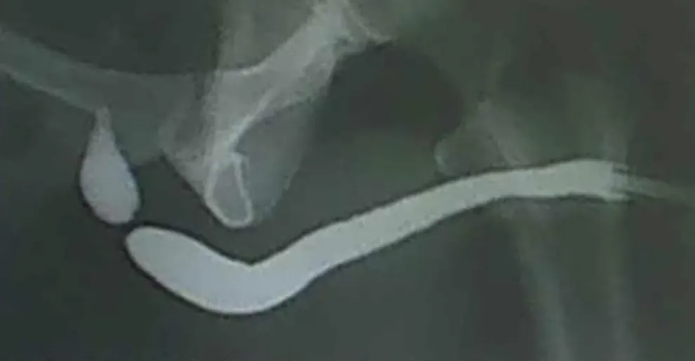
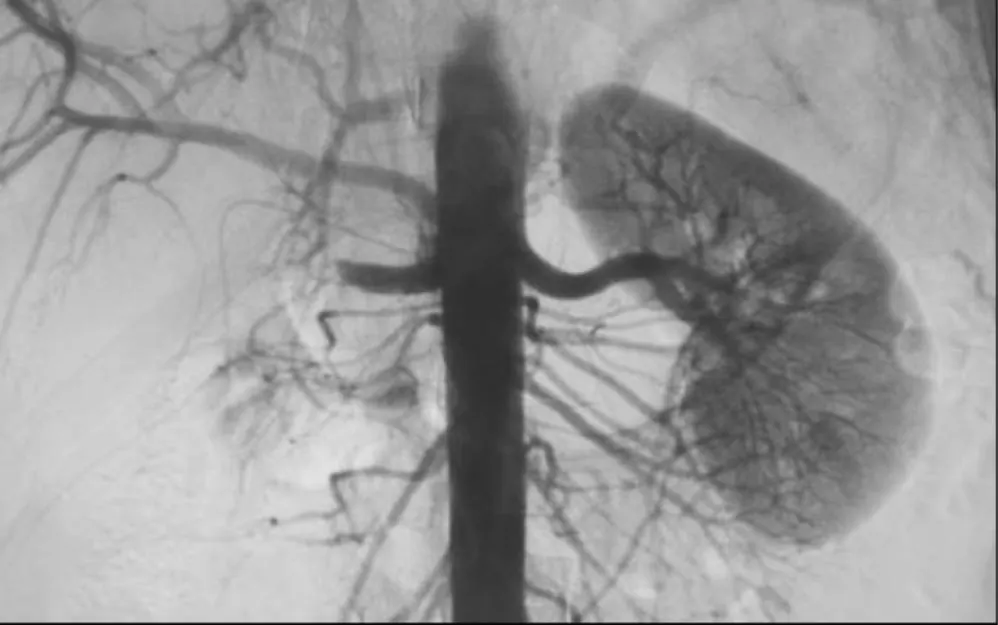
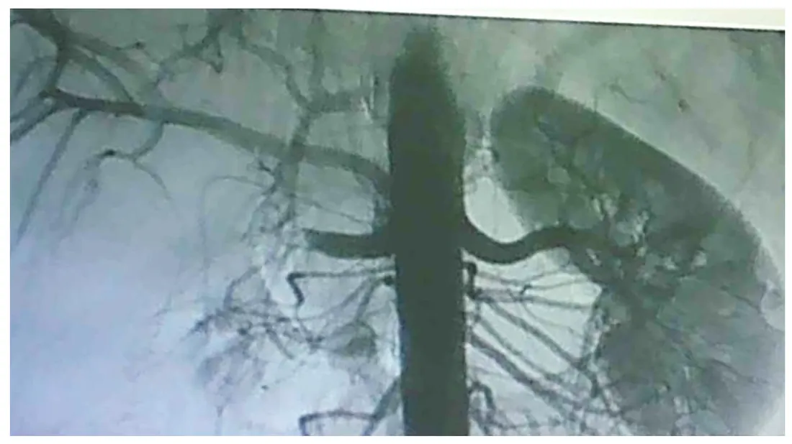
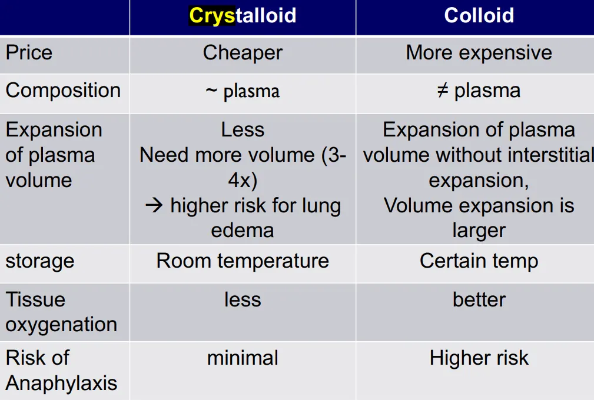

380 soal Sumatif 2 tahun 2017 sampai 2023 yang jawabannya ada di 114 top slide, ditulis lengkap beserta pilihan jawabannya. Urutannya mengikuti prioritas kuliah, lalu slide dengan soal terbanyak. Ketuk slide untuk layar penuh. Jawabanmu tersimpan dan sama dengan jawaban di bank soal per tahun.
Perempuan, 50 tahun, dengan keluhan nyeri pinggang sebelah kiri, dikirim ke bagian radiologi untuk pemeriksaan USG abdomen. Ditemukan adanya fokus hiperekoik konveks dengan posterior acoustic shadow pada ginjal kiri. Diagnosis manakah yang paling tepat untuk temuan pemeriksaan USG tersebut?
Lihat jawaban
d. Nefrolitiasis
Batu Bayangan, Kista Kilau: fokus hiperekoik dengan posterior acoustic shadow = batu yang memblok suara, jadi nefrolitiasis. Kista anekoik dengan posterior enhancement.
Batu ginjal pada USG tampak sebagai fokus hiperekoik dengan posterior acoustic shadow karena gelombang suara tertahan oleh batu. Kista tampak anekoik dengan posterior enhancement.
Pasien laki-laki 40 tahun, datang dengan keluhan nyeri pinggang bagian kanan, pemeriksaan nyeri ketok CVA (+). Saat menjalani USG, ditemukan batu ginjal. Batu yang ditemukan dengan ciri
Lihat jawaban
c. Fokus hiperekoik dengan posterior acoustic shadow
Batu Bayangan, Kista Kilau: batu padat memantulkan suara (hiperekoik) dan menghalangi gelombang ke belakang sehingga ada posterior acoustic shadow. Posterior enhancement milik kista berisi cairan.
Batu bersifat padat sehingga memantulkan gelombang suara (tampak hiperekoik) dan menghalangi gelombang ke jaringan di belakangnya, sehingga terbentuk bayangan gelap di posterior (posterior acoustic shadow). Posterior enhancement adalah ciri struktur berisi cairan seperti kista.
Seorang laki-laki, usia 40 tahun dengan keluhan nyeri pinggang kanan datang ke IGD. Pada pemeriksaan fisik didapatkan nyeri ketok CVA kanan positif. Pasien kemudian dilakukan pemeriksaan ultrasonografi (USG) abdomen, dan didapatkan adanya batu ginjal. Bagaimana gambaran pemeriksaan radiologi pada kasus ini?
Lihat jawaban
c. Fokus hiperechoic dengan posterior acoustic shadow
Batu Bayangan, Kista Kilau: batu = fokus hiperekhoik dengan posterior acoustic shadow karena memantulkan hampir semua gelombang. Posterior enhancement milik kista berisi cairan.
Batu memantulkan hampir seluruh gelombang suara sehingga tampak hiperekoik dengan bayangan akustik di posteriornya. Posterior acoustic enhancement adalah ciri struktur berisi cairan seperti kista.
Gambar USG batu / kista ginjal. Bagaimana gambaran yang tampak pada USG tersebut?
Lihat jawaban
b. Hiperekhoik with posterior acoustic shadow
Batu Bayangan, Kista Kilau: batu putih terang (hiperekhoik) dan memblok suara sehingga di belakangnya ada bayangan hitam (posterior acoustic shadow). Kista hitam (anekhoik) dengan belakang lebih terang (enhancement).
Menurut penyusun gambar di soal adalah batu karena ada bayangan hitam di belakang lesi: batu tampak hiperekhoik dengan posterior acoustic shadow. Kista tampak anekhoik dengan posterior acoustic enhancement.
Catatan: Stem soal tidak diingat lengkap dan penyusun awalnya ragu apakah soalnya batu atau kista ("tidak tahu jawabannya yang mana"), lalu menetapkan batu. Gambar adalah gambar yang menurut ingatan penyusun mirip dengan gambar soal.
Seorang laki-laki, usia 40 tahun dengan keluhan nyeri pinggang kanan datang ke IGD. Pada pemeriksaan fisik didapatkan nyeri ketok CVA kanan positif. Pasien kemudian dilakukan pemeriksaan ultrasonografi (USG) abdomen, dan didapatkan adanya batu ginjal. Bagaimana gambaran pemeriksaan radiologi pada kasus ini?
Lihat jawaban
c. Fokus hiperechoic dengan posterior acoustic shadow.
Batu Bayangan, Kista Kilau: batu = fokus hiperekhoik + posterior acoustic shadow. Enhancement milik kista anekhoik; edge shadow muncul di tepi struktur bulat, bukan khas batu.
Batu pada USG tampak sebagai fokus hiperekhoik (putih) dengan posterior acoustic shadow (bayangan hitam di belakangnya). Posterior acoustic enhancement adalah ciri kista yang anekhoik.
Batu Bayangan, Kista Kilau: cari fokus putih terang (hiperekhoik) dengan pita gelap di belakangnya (posterior acoustic shadow). Anekhoik dengan posterior enhancement adalah kista.
Batu pada USG tampak sebagai fokus hiperekhoik dengan bayangan akustik di posteriornya (posterior acoustic shadow). Anekhoik dengan posterior enhancement adalah gambaran kista.
Batu Bayangan, Kista Kilau: batu memantulkan gelombang (hiperekhoik, putih) dan memblok suara di belakangnya (posterior acoustic shadow). Kista berisi cairan meneruskan suara: anekhoik dengan posterior enhancement. Hipoekhoik bukan ciri keduanya.
Batu ginjal pada USG tampak sebagai fokus hiperekhoik dengan posterior acoustic shadow. Kista sederhana sebaliknya tampak anekhoik dengan posterior acoustic enhancement.
Catatan: Soal tidak lengkap: gambar tidak disertakan dan penyusun tidak yakin apakah gambarnya batu atau kista. Kunci b berlaku bila gambarnya batu (seperti no. 39); bila kista, jawabannya a.
Batu Bayangan: di gambar cari titik putih terang di ginjal (hiperekhoik) dengan pita hitam memanjang di belakangnya (posterior acoustic shadow), karena batu memblok suara. Kista Kilau: bulatan hitam (anekhoik) dengan area belakang lebih terang (enhancement).
Pada gambar tampak fokus putih terang (hiperekhoik) di ginjal dengan bayangan hitam di belakangnya (posterior acoustic shadow), gambaran khas batu. Anekhoik dengan posterior enhancement adalah gambaran kista.
Slide 34, K20 Radiologi Sistem Perkemihan. Slide USG Batu ginjal: fokus hiperekhoik dengan posterior accoustic shadow, ditunjuk panah pada dua gambar USG.
Pria 35 tahun mengikuti pemeriksaan kesehatan. Gejala disangkal (asimtomatik). Berikut hasil ultrasound renal. Apa kesimpulan gambar ini?
Lihat jawaban
c. Batu ginjal
Batu Bayangan, Kista Kilau: cari titik putih terang (hiperekoik) dengan pita bayangan hitam di belakangnya (posterior acoustic shadow) = batu ginjal. Kista justru bulat hitam (anekoik) dengan bagian belakang lebih terang.
USG menunjukkan fokus hiperekoik dengan bayangan akustik posterior (posterior acoustic shadow), gambaran khas batu ginjal. Kista tampak anekoik dengan posterior enhancement.
Pemeriksaan radiologi manakah yang TIDAK dapat menilai fungsi ginjal?
Lihat jawaban
c. Ultrasonografi
USG lihat Bentuk, bukan Kerja: USG hanya menilai morfologi (ukuran, hidronefrosis, kista atau padat). IVU, CT/MR urografi memakai kontras yang diekskresi ginjal, dan renogram (Teknesium menghitung) menilai fungsi kuantitatif.
USG hanya memberi informasi morfologi (ukuran ginjal, hidronefrosis, massa kistik atau padat) dan tidak menilai fungsi ekskresi. Urografi intravena, CT urografi, dan MR urografi memakai kontras yang diekskresi ginjal sehingga fungsi ikut ternilai, dan kedokteran nuklir (renogram) menilai fungsi secara kuantitatif.
Catatan: Kunci di berkas tertulis "Ckekuran" (salah ketik), dibaca sebagai C.
Slide 28, K20 Radiologi Sistem Perkemihan. Slide USG: tujuannya mengetahui ukuran ginjal, lokasi obstruksi, membedakan massa kistik atau padat, tumor buli, dan volume prostat; penilaian fungsi ginjal tidak termasuk.
Ibu 30 tahun, hamil 24 minggu, mengalami sakit pinggang dan keluar batu saat berkemih sebelumnya. Demam disangkal. Nyeri ketok CVA positif. Penegakan diagnosis awal untuk melihat batu saluran kemih...
Lihat jawaban
c. USG
Hamil = Hanya USG: tanpa radiasi pengion dan tanpa kontras, USG lini pertama batu pada ibu hamil dan tetap bisa melihat batu serta hidronefrosis. Foto polos, BNO-IVP, dan CT sama-sama menyinari janin.
USG adalah pencitraan lini pertama pada perempuan hamil karena tidak memakai radiasi pengion maupun kontras, dan dapat menunjukkan batu serta hidronefrosis. Foto polos, BNO-IVP, dan CT memaparkan janin pada radiasi.
Slide 28, K20 Radiologi Sistem Perkemihan. Slide USG: pemeriksaan noninvasif, sangat aman, dapat mengetahui lokasi obstruksi (hidronefrosis, hidroureter); kehamilan tidak disebut eksplisit.
Catatan: Stem soal tidak diingat lengkap dan hanya tiga pilihan yang diingat.
Slide 28, K20 Radiologi Sistem Perkemihan. Slide USG: pemeriksaan noninvasive, sangat aman, tidak menimbulkan rasa sakit (kehamilan tidak disebut eksplisit).
Seorang ibu rumah tangga, usia 30 tahun, hamil G3P2A0 24 minggu, mengeluh sakit di pinggang kiri tanpa disertai demam. Riwayat BAK keluar batu sebelumnya (+). Pada pemeriksaan fisik terdapat nyeri ketok CVA kiri dan pada urinalisis terdapat sedimen eritrosit 40-50/LPB. Pemeriksaan awal yang Anda anjurkan untuk mengetahui adanya batu saluran kemih adalah:
Lihat jawaban
e. USG ginjal dan saluran kemih
Hamil = Hanya USG: tanpa radiasi pengion dan tanpa kontras, lini pertama curiga batu pada ibu hamil 24 minggu ini. RPG, BNO/IVP, CT, dan foto polos semuanya memakai sinar-X.
Pada kehamilan, pemeriksaan pencitraan lini pertama adalah USG karena tidak memakai radiasi pengion. RPG, BNO/IVP, CT, dan foto polos semuanya memaparkan janin pada sinar-X.
Kunci tidak ada di berkas dan dasarnya tidak ada di slide K10-K20, jawaban dari pengetahuan umum. Materi: K20 Radiologi Sistem Perkemihan.
Slide 28, K20 Radiologi Sistem Perkemihan. Slide USG: pemeriksaan noninvasif, sangat aman, dan dapat mengetahui lokasi obstruksi (hidronefrosis, hidroureter).
Wanita 35 tahun, hamil 25 minggu, datang ke RS dengan keluhan hematuria. Hasil pemeriksaan urinalisis: eritrosit +, bakteri +, kristal +. Pasien dicurigai terkena batu saluran kemih dan direncanakan untuk melakukan pemeriksaan radiologi. Modalitas radiologi apa yang tepat untuk pemeriksaan traktus urinarius pasien ini?
Lihat jawaban
b. Ultrasonografi (USG)
Hamil = Hanya USG: tanpa radiasi pengion dan tanpa kontras, jadi lini pertama curiga batu pada ibu hamil 25 minggu. Foto polos, IVU, radiologi intervensi, dan kedokteran nuklir semuanya memapar janin dengan radiasi.
Pada kehamilan dipilih USG karena tidak memakai radiasi pengion maupun kontras. Foto polos, IVU, radiologi intervensi, dan kedokteran nuklir semuanya memberi paparan radiasi pada janin.
Kunci tidak ada di berkas dan dasarnya tidak ada di slide K10-K20, jawaban dari pengetahuan umum. Materi: K20 Radiologi Sistem Perkemihan.
Slide 28, K20 Radiologi Sistem Perkemihan. Slide USG: pemeriksaan noninvasive, sangat aman, tidak menimbulkan rasa sakit, dapat mengetahui lokasi obstruksi (kehamilan tidak disebut khusus).
Seorang wanita berusia 35 tahun, saat ini sedang hamil 25 minggu, datang ke rumah sakit dengan keluhan hematuria. Urinalisis menunjukkan RBC (+), bakteri (+), dan kristal (+). Diduga terdapat batu saluran kemih, dan direncanakan pemeriksaan pencitraan. Modalitas pencitraan manakah yang paling tepat untuk mengevaluasi saluran kemih pada pasien ini?
Lihat jawaban
d. Ultrasonography (USG)
Hamil = Hanya USG: tanpa radiasi pengion dan tanpa kontras, jadi lini pertama untuk ibu hamil 25 minggu dengan dugaan batu. Foto polos, IVU, dan renografi nuklir semuanya memaparkan janin pada radiasi.
USG adalah pilihan pertama pada kehamilan karena tidak memakai radiasi pengion maupun kontras. Foto polos, IVU, dan kedokteran nuklir memaparkan janin pada radiasi.
Slide 28, K20 Radiologi Sistem Perkemihan. Slide USG menulis pemeriksaan noninvasive, sangat aman, tidak menimbulkan rasa sakit, dan dapat mengetahui lokasi obstruksi; kehamilan tidak disebut khusus.
Laki-laki, 28 tahun, dibawa ke unit gawat darurat karena kecelakaan lalu lintas. Setelah dilakukan radiografi pelvis, ditemukan fraktur pubis dan symphisiolysis. Pasien diduga menderita ruptur uretra. Apakah pemeriksaan radiologi yang paling tepat untuk menegakkan diagnosis tersebut?
Lihat jawaban
b. Uretrosistografi retrograd
Uro-Sisto-Uretro: curiga ruptur uretra, pilih uretro(sisto)grafi retrograd; kontras dari fossa navikulare (Fossa Foley). Bocor = Ruptur: cari ekstravasasi kontras. IVU dan CT tanpa kontras tidak menilai uretra.
Dugaan ruptur uretra pada trauma pelvis ditegakkan dengan uretrografi/uretrosistografi retrograd: kontras larut air dimasukkan lewat kateter di fossa navikulare sehingga ekstravasasi kontras di lokasi ruptur terlihat. Urografi intravena dan CT tanpa kontras tidak menilai uretra.
Pasien 40 tahun setelah kemoterapi. Pasien mengalami trauma urethra dan perlu pemeriksaan urethrografi. Kontras yang dipakai untuk trauma adalah?
Lihat jawaban
a. Iodium
IVU = Iodin Via Urat, uretrografi juga iodin larut air: aman bila kontras bocor pada ruptur uretra. Barium dan lipiodol tidak larut air, biligrafin untuk empedu, gadolinium untuk MRI.
Uretrografi memakai kontras larut air (water soluble) yang berbasis iodium, yang aman bila terjadi ekstravasasi pada ruptur. Barium dan lipiodol tidak larut air, biligrafin adalah kontras saluran empedu, dan gadolinium adalah kontras MRI.
Pasien laki-laki muda habis kecelakaan. Ada keluhan anuria. Lalu dirujuk ke departemen radiologi. Gambar di bawah ini adalah pemeriksaan apa?
Lihat jawaban
d. Urethrography retrograde
Fossa Foley: kontras masuk dari meatus uretra eksterna naik ke proksimal = uretrografi retrograd. Uro-Sisto-Uretro: yang terisi uretra, bukan buli atau ureter. Sempit tapi tak bocor = Striktur; Bocor = Ruptur pada trauma.
Gambar memperlihatkan uretra laki-laki yang terisi kontras yang dimasukkan dari meatus uretra eksterna ke arah proksimal, yaitu uretrografi retrograd, pemeriksaan pilihan pada kecurigaan ruptur uretra setelah trauma.
Ada pasien laki-laki habis kecelakaan. Ada keluhan anuria. Lalu dirujuk ke departemen radiologi. Gambar di bawah ini adalah pemeriksaan apa?
Lihat jawaban
d. Urethrography retrograde
Fossa Foley: ujung kateter di fossa navikularis, kontras dari meatus mengisi uretra ke arah proksimal = retrograde urethrography. Cari kolom kontras di uretra, bukan di buli (sistografi) atau ureter. Trauma uretra = RUG.
Kontras dimasukkan dari ujung uretra (kateter di fossa navikularis) dan mengisi uretra ke arah proksimal pada posisi oblik, yaitu retrograde urethrography (RUG). Indikasinya riwayat trauma pelvis dan kecurigaan ruptur atau striktur uretra.
Slide 58, K20 Radiologi Sistem Perkemihan. Slide Urethrografi: kateter di fossa navikulare, kontras dimasukkan lewat kateter; indikasi riwayat trauma pelvis dan ruptur atau striktur uretra.
Seorang pria berusia 27 tahun dengan riwayat kecelakaan sepeda motor 6 bulan yang lalu kini mengeluh kesulitan buang air kecil: hanya keluar beberapa tetes meskipun sudah mengejan. Gambar radiologis berikut diperoleh.
Lihat jawaban
e. Retrograde urethography
Fossa Foley: kontras disuntik dari meatus eksternus ke arah proksimal (Retrograde dari bawah) dan mengisi uretra = retrograde urethrography. Ureterografi dan sistografi salah organ: Uro-Sisto-Uretro, uretrografi untuk uretra.
Gambar menunjukkan kontras yang dimasukkan dari meatus eksternus mengisi uretra anterior dan terhenti atau menyempit di uretra posterior, yaitu uretrografi retrograd. Pemeriksaan ini adalah pilihan untuk menilai striktur uretra pascatrauma.
Catatan: Kalimat pertanyaan tidak tertulis di berkas; dari pilihannya, yang ditanyakan adalah nama pemeriksaan radiologi pada gambar. Ejaan pilihan d dan e ('urethography') mengikuti berkas, maksudnya urethrography.
Slide 58, K20 Radiologi Sistem Perkemihan. Slide Urethrografi: kontras dimasukkan lewat kateter di fossa navikulare (retrograd), indikasi riwayat trauma pelvis dan ruptur/striktur uretra.
Untuk melihat densitas batu dilakukan pemeriksaan:
Lihat jawaban
a. CT scan
Hounsfield = punya CT: densitas batu hanya bisa diukur dengan CT (tanpa kontras). IVP menilai fungsi ekskresi, MRI untuk jaringan lunak.
CT scan tanpa kontras adalah baku emas untuk batu saluran kemih dan dapat mengukur densitas batu. IVP/IVU lebih untuk menilai fungsi ekskresi ginjal dengan kontras iodine intravena, dan MRI lebih untuk jaringan lunak.
Slide 39, K20 Radiologi Sistem Perkemihan. Slide CT scan menulis CT tanpa kontras sangat akurat memperlihatkan batu saluran kencing, termasuk batu non opak pada foto polos.
Untuk melihat densitas batu dilakukan pemeriksaan:
Lihat jawaban
a. CT scan
CT = Cek Tebal batu: Hounsfield = punya CT, densitas batu (HU) hanya bisa diukur dengan CT tanpa kontras. MRI, uretrografi, dan IVU tidak memberi angka densitas.
CT scan tanpa kontras paling akurat untuk batu saluran kemih, termasuk batu non-opak, dan dapat mengukur densitas batu (Hounsfield unit).
Slide 39, K20 Radiologi Sistem Perkemihan. Slide CT scan: tanpa kontras sangat akurat memperlihatkan batu saluran kencing, termasuk batu non opak pada foto polos.
(Ditampilkan foto polos dengan batu ginjal) Pemeriksaan selanjutnya yang dilakukan untuk menilai densitas batu
Lihat jawaban
a. CT scan
Hounsfield = punya CT: densitas batu diukur dalam Hounsfield Unit, hanya bisa dengan CT tanpa kontras (CT = Cek Tebal batu). IVU menilai ekskresi dan anatomi, foto polos hanya melihat yang opak, sistografi untuk buli.
CT scan tanpa kontras dapat mengukur densitas batu dalam Hounsfield unit, yang berguna untuk memperkirakan komposisi dan kekerasan batu. IVU menilai fungsi ekskresi dan anatomi, bukan densitas.
Kunci tidak ada di berkas dan dasarnya tidak ada di slide K10-K20, jawaban dari pengetahuan umum. Materi: K20 Radiologi Sistem Perkemihan.
Catatan: Gambar foto polos pada soal asli tidak disertakan di berkas.
Slide 39, K20 Radiologi Sistem Perkemihan. Slide CT scan: tanpa kontras sangat akurat memperlihatkan batu saluran kencing termasuk batu non opak (pengukuran densitas tidak tertulis di slide).
Seorang wanita berusia 50 tahun mengeluhkan nyeri perut dan urin berwarna kemerahan seperti "meat wash water". Dilakukan foto polos abdomen, dan hasilnya ditunjukkan (gambar tidak ditampilkan). Untuk menentukan kepadatan batu (nilai Hounsfield Unit), pemeriksaan apa yang paling tepat dilakukan?
Lihat jawaban
b. Pemindaian tomografi terkomputasi (Computed Tomography Scan / CT scan)
Hounsfield = punya CT: HU adalah satuan atenuasi sinar X pada CT, jadi densitas batu hanya terukur dengan CT tanpa kontras. Foto polos, IVU, USG, dan MRI tidak memberi angka HU.
Hounsfield Unit adalah satuan atenuasi sinar X pada CT, sehingga kepadatan batu hanya dapat diukur dengan CT scan (tanpa kontras).
Catatan: Gambar foto polos abdomen tidak disertakan di berkas (tertulis 'gambar tidak ditampilkan'); soal tetap bisa dijawab tanpa gambar.
Slide 39, K20 Radiologi Sistem Perkemihan. Slide CT Scan: tanpa kontras sangat akurat memperlihatkan batu saluran kencing termasuk batu non opak; satuan Hounsfield tidak disebut.
Gambar radiologi (uretrografi). Kondisi apa yang dapat terjadi?
Lihat jawaban
a. Striktur urethra
Sempit tapi tak bocor = Striktur; Bocor = Ruptur: di uretrografi cari lumen yang menyempit dengan kontras masih lolos ke proksimal tanpa ekstravasasi, itulah striktur uretra. Kontras merembes keluar lumen berarti ruptur.
Pada uretrografi retrograd tampak penyempitan lumen uretra dengan kontras yang masih lolos ke proksimal, sesuai striktur uretra. Pada ruptur uretra kontras akan bocor keluar lumen (ekstravasasi).
Catatan: Gambar di berkas adalah gambar pengganti yang menurut penyusun mirip gambar soal (dari slide kuliah radiologi). Pilihan a tertulis "Striktur Uterhra" di berkas. Pilihan d dan e kosong.
Ada pasien laki-laki habis kecelakaan. Ada keluhan anuria. Lalu dirujuk ke departemen radiologi. Dilakukan pemeriksaan uretrografi retrograd (gambar). Kondisi di atas merupakan?
Lihat jawaban
a. Striktur uretra
Sempit tapi tak bocor = Striktur; Bocor = Ruptur: kolom kontras menyempit lalu terputus tanpa ada kontras keluar lumen, jadi striktur uretra.
Kolom kontras di uretra menyempit lalu terputus tanpa tampak ekstravasasi kontras, sesuai striktur uretra. Pada ruptur uretra seharusnya terlihat kontras bocor keluar lumen.
Kunci tidak ada di berkas dan dasarnya tidak ada di slide K10-K20, jawaban dari pengetahuan umum. Materi: K20 Radiologi Sistem Perkemihan.
Catatan: Di berkas hanya ada dua pilihan, kemungkinan tidak lengkap. Soal bergambar sama di berkas tahun 2019 punya pilihan stenosis, ruptur, striktur, dan tumor uretra dengan kunci striktur uretra.
Seorang laki-laki, usia 27 tahun, riwayat kecelakaan motor, saat ini memiliki keluhan sulit berkemih, pasien dirujuk ke departemen radiologi untuk dilakukan pemeriksaan retrograde urethrography (RUG). Hasil pemeriksaan radiografi RUG ditampilkan pada gambar berikut ini. Apakah diagnosis yang paling tepat untuk kasus ini?
Lihat jawaban
c. Striktur urethra
Sempit tapi tak bocor = Striktur; Bocor = Ruptur: di RUG cari kolom kontras uretra yang menyempit setempat tanpa kontras keluar lumen, sisa trauma motor dengan keluhan sulit berkemih. Kontras merembes ke jaringan sekitar baru ruptur uretra.
Pada soal aslinya RUG memperlihatkan penyempitan lumen uretra setempat dengan kolom kontras yang menyempit tanpa ekstravasasi, sesuai striktur uretra pasca trauma. Ruptur uretra akan tampak sebagai ekstravasasi kontras keluar lumen.
Catatan: Gambar RUG tidak ada di berkas 2022: di halaman 4 yang tertempel justru tabel percobaan glukosa yang tidak berhubungan dengan soal. Soal yang sama lengkap dengan gambar RUG ada di berkas 2019 no. 77, dan di sana kuncinya striktur urethra.
Slide 75, K20 Radiologi Sistem Perkemihan. Slide RUG berjudul Striktur uretra: penyempitan lumen uretra setempat tanpa ekstravasasi kontras.
Seorang pria 27 tahun dengan riwayat kecelakaan sepeda motor 6 bulan yang lalu kini mengeluh kesulitan berkemih dan hanya keluar tetesan kecil meskipun sudah mengejan. Gambar radiologis berikut diperoleh. Apa diagnosis berdasarkan pemeriksaan radiologis tersebut?

Lihat jawaban
e. Striktur uretra
Sempit tapi tak bocor = Striktur; Bocor = Ruptur: pada RUG cari lumen uretra yang menyempit dengan kontras sulit lewat ke proksimal, tanpa kontras keluar lumen. Parut pascatrauma 6 bulan menyempitkan uretra = striktur uretra, persis label slide RUG.
Gambar soal sama dengan slide 75 K20 yang berlabel RUG: striktur uretra. Kolom kontras menyempit tajam dan sulit lewat ke proksimal akibat jaringan parut pascatrauma 6 bulan lalu. Tidak ada ekstravasasi kontras, jadi bukan ruptur uretra.
Koreksi: Kunci berkas a (stenosis uretra) diganti ke e. Slide 75 melabeli gambar yang sama sebagai striktur uretra, dan soal bergambar sama di berkas 2019 no. 77, 2021 no. 27, dan 2022 no. 21 berkunci striktur. Sebagian pustaka memakai istilah stenosis untuk penyempitan uretra posterior, tetapi slide kuliah memakai striktur.
Slide 75, K20 Radiologi Sistem Perkemihan. Slide RUG memberi label Striktur uretra pada gambaran penyempitan kolom kontras uretra (bukan stenosis).
Vignette. Kontraindikasi pemeriksaan radiologi pada pasien?
Lihat jawaban
a. Hipersensitivitas terhadap kontras
A-G-D: kontraindikasi pemeriksaan dengan kontras IV adalah Alergi kontras, Gagal ginjal, dan Dehidrasi berat. Hipersensitivitas terhadap kontras adalah huruf A.
Pemeriksaan radiologi dengan kontras intravena (misalnya urografi intravena) dikontraindikasikan pada alergi kontras, gagal ginjal, dan dehidrasi berat.
Laki-laki umur 40 tahun dengan riwayat limfoma maligna datang ke dokter karena disuria dan hematuria (kalau tidak salah). Saat di departemen radiologi dilakukan uji tes kulit dengan kontras, dan hasilnya (+). Kontraindikasi pasien tidak bisa menjalankan radiografi adalah....
Lihat jawaban
d. Alergi kontras
A-G-D: tes kulit kontras positif berarti Alergi kontras, kontraindikasi radiografi berkontras seperti IVU. Hematuria dan disuria justru indikasi pemeriksaan, bukan larangan.
Uji kulit kontras yang positif menunjukkan alergi kontras, yang merupakan kontraindikasi pemeriksaan radiografi dengan kontras seperti urografi intravena. Hematuria justru merupakan indikasi pemeriksaan.
Laki-laki tua, trauma abdomen, hematuria. Diperiksa radiologi kontras. Skin test negatif, alergi seafood. Komplikasi kalau dilakukan radiografi kontras adalah
Lihat jawaban
d. Alergi terhadap kontras
A-G-D: Alergi kontras di urutan pertama kontraindikasi. Alergi seafood menandai risiko; skin test negatif tidak menjamin aman dari reaksi iodine sampai anafilaksis.
Kontras iodine dapat menimbulkan reaksi alergi sampai syok anafilaktik; pasien dengan riwayat alergi perlu diwaspadai walaupun skin test negatif.
Seorang pria berusia 45 tahun datang ke poliklinik penyakit dalam dengan keluhan nyeri perut dan hematuria selama satu minggu terakhir. Pasien memiliki riwayat trauma tumpul pada perut sekitar satu bulan yang lalu. Setelah anamnesis dan pemeriksaan fisik, dokter penyakit dalam merujuk pasien ke bagian Radiologi untuk menjalani pemeriksaan intravena urografi (IVU). Berdasarkan informasi tersebut, efek samping apa yang mungkin terjadi selama pemeriksaan?
Lihat jawaban
c. Alergi terhadap media kontras
IVU = Iodin Via Urat: kontras iodin disuntik intravena, jadi risiko saat pemeriksaan adalah alergi kontras (A-G-D: Alergi, Gagal ginjal, Dehidrasi berat). Perdarahan dan hematuria berasal dari traumanya, bukan dari prosedur.
IVU memakai media kontras iodin intravena, sehingga risiko selama pemeriksaan adalah reaksi alergi (hipersensitivitas) terhadap kontras, selain nefropati kontras.
Kontras media apa yang dipakai untuk pemeriksaan urografi intravena?
Lihat jawaban
e. Yodium
IVU = Iodin Via Urat: urografi intravena memakai kontras iodin larut air. Barium untuk saluran cerna, gadolinium untuk MRI, lipiodol berbasis minyak.
Urografi intravena memakai kontras iodin larut air yang disuntikkan intravena dan diekskresi ginjal (mis. meglumine amidotrizoate). Barium untuk saluran cerna, gadolinium untuk MRI.
Seorang laki-laki, usia 40 tahun, dengan riwayat limfoma maligna post kemoterapi datang ke klinik penyakit dalam dengan keluhan nyeri berkemih dan hematuria sejak 1 minggu yang lalu. Pasien memiliki riwayat trauma tumpul abdomen sekitar 1 bulan yang lalu. Setelah pemeriksaan fisik, pasien dirujuk ke Departemen Radiologi untuk dilakukan pemeriksaan urografi intravena. Saat dilakukan skin test media kontras didapatkan skin test (+). Apakah kandungan kontras media yang dipakai pada pemeriksaan radiologi tersebut?
Lihat jawaban
e. Iodium
IVU = Iodin Via Urat: urografi intravena memakai kontras beriodium; skin test positif berarti alergi kontras (A-G-D). Gadolinium = MRI, barium = saluran cerna, technetium = renogram.
Urografi intravena (IVP) memakai kontras beriodium yang disuntikkan intravena dan diekskresi ginjal. Gadolinium untuk MRI, barium untuk saluran cerna, dan technetium untuk kedokteran nuklir.
Seorang laki-laki, usia 40 tahun, dengan riwayat limfoma maligna post kemoterapi datang ke klinik penyakit dalam dengan keluhan nyeri berkemih dan hematuria sejak 1 minggu yang lalu. Pasien memiliki riwayat trauma tumpul abdomen sekitar 1 bulan yang lalu. Setelah pemeriksaan fisik, pasien dirujuk ke Departemen Radiologi untuk dilakukan pemeriksaan urografi intravena. Saat dilakukan skin test media kontras didapatkan skin test (+). Kontras yang dipakai untuk trauma adalah?
Lihat jawaban
a. Iodium
IVU = Iodin Via Urat: urografi intravena memakai kontras iodin larut air, dan kontras inilah yang diuji skin test. Barium untuk usus, gadolinium untuk MRI.
Urografi intravena memakai kontras iodin larut air (misalnya meglumine amidotrizoate) yang disuntikkan intravena, dan kontras inilah yang diuji dengan skin test. Barium untuk saluran cerna dan gadolinium untuk MRI.
Catatan: Kalimat pertanyaan tidak diingat tepat. Di berkas tahun 2019 pertanyaannya 'Apakah kandungan kontras media yang dipakai pada pemeriksaan radiologi tersebut?' dengan kunci iodium.
Pria dengan perdarahan intraabdomen diperiksa radiologi intervensi. Berdasarkan AAST, injury ginjalnya grade berapa?

Lihat jawaban
e. 5
Lima = Lenyap perfusi: di angiografi arteri renalis kanan terputus dan ginjal kanan tidak terisi kontras sama sekali, sementara ginjal kiri terang. Arteri putus dengan ginjal tak terperfusi = AAST grade V.
Angiografi memperlihatkan arteri renalis kanan terputus tanpa perfusi ginjal kanan, sedangkan ginjal kiri terisi baik. Avulsi atau putusnya pembuluh hilus dengan devaskularisasi ginjal adalah AAST grade 5, sama dengan contoh kasus di slide radiologi.
Slide 86, K20 Radiologi Sistem Perkemihan. Slide kasus pascatrauma: angiografi transected right renal artery with no renal perfusion, ditulis AAST Renal Injury grade 5.
Lima = Lenyap perfusi: di angiografi cari ginjal kanan yang gelap tanpa kontras karena a. renalis terputus, sementara ginjal kiri terisi kontras. Arteri utama putus atau trombosis = AAST grade 5. Grade II-IV (Satu senti memisahkan II dan III, kolektivus IV) ginjalnya masih berperfusi.
Angiografi memperlihatkan arteri renalis kanan terputus dan ginjal kanan tidak terperfusi, sedangkan ginjal kiri terisi kontras dengan baik. Avulsi atau trombosis arteri renalis utama yang membuat ginjal tidak mendapat darah termasuk AAST grade 5.
Seorang pria berusia 25 tahun mengalami cedera pinggang kanan akibat kecelakaan lalu lintas. Ia mengalami perdarahan intraabdomen dan menjalani pemeriksaan radiologi intervensi dengan temuan seperti pada gambar di bawah ini. Berdasarkan Sistem Grading Cedera Ginjal AAST, temuan radiologis tersebut sesuai dengan derajat cedera ginjal AAST tingkat berapa?

Lihat jawaban
a. 5
Lima = Lenyap perfusi: cari ginjal kanan yang gelap tanpa kontras karena arteri renalis terputus, sementara ginjal kiri terang normal = AAST grade 5. Satu senti memisahkan II dan III, sistem kolektivus kena = IV; semuanya masih terperfusi.
Angiografi menunjukkan ginjal kanan tidak terperfusi (arteri renalis terputus), sedangkan ginjal kiri terisi kontras normal. Avulsi atau devaskularisasi hilus ginjal maupun ginjal hancur (shattered kidney) termasuk AAST derajat 5.
Slide 86, K20 Radiologi Sistem Perkemihan. Slide AAST: angiografi menunjukkan transected right renal artery with no renal perfusion, ditulis AAST Renal Injury grade 5.
Catatan: Pilihan D dan E tidak diingat penyusun. Stem menyebut foto polos, tetapi kuncinya tentang kontras, jadi yang dimaksud pemeriksaan dengan kontras (IVP/IVU); penyusun menulis kunci ini berdasarkan ingatan dari praktikum ("cmiiw"). Soal serupa: nomor 56.
Slide 7, K20 Radiologi Sistem Perkemihan. Slide menulis pasien puasa minimal 6 jam sebelum pemeriksaan agar dehidrasi ringan, konsentrasi kontras pekat, visualisasi urinary tract baik.
Catatan: Pilihan D tidak diingat. Kasus sama dengan nomor 55, soal serupa dengan nomor 22. Pilihan C (feses tidak menghalangi) adalah tujuan persiapan kebersihan saluran cerna, bukan tujuan puasanya.
Slide 7, K20 Radiologi Sistem Perkemihan. Slide menulis pasien puasa minimal 6 jam agar dehidrasi ringan, konsentrasi kontras pekat, visualisasi urinary tract baik.
Seorang pria berusia 45 tahun datang ke poliklinik penyakit dalam dengan keluhan nyeri perut dan hematuria sejak satu minggu terakhir. Ia memiliki riwayat trauma tumpul pada perut sekitar satu bulan yang lalu. Setelah dilakukan anamnesis dan pemeriksaan fisik, dokter penyakit dalam merujuk pasien ke Departemen Radiologi untuk dilakukan pemeriksaan urografi intravena (intravenous urography). Sebelum menjalani pemeriksaan tersebut, petugas radiologi menginstruksikan pasien untuk berpuasa selama sekitar 6-8 jam sebelum prosedur dilakukan. Apa tujuan dari puasa sebelum prosedur ini?
Lihat jawaban
a. Untuk memastikan bahwa kontras menjadi lebih pekat sehingga visualisasi saluran kemih lebih baik
Puasa bikin Pekat: puasa 6-8 jam membuat dehidrasi ringan sehingga kontras di urin lebih pekat dan saluran kemih tampak jelas. Bayangan feses diatasi dengan urus-urus (pencahar), bukan dengan puasa.
Menurut kuliah radiologi, puasa minimal 6 jam sebelum IVU membuat pasien dehidrasi ringan sehingga kontras di urin lebih pekat dan visualisasi saluran kemih lebih baik. Bayangan feses diatasi dengan persiapan saluran cerna (pencahar), bukan dengan puasa.
Catatan: Berkas menebalkan dua pilihan sekaligus (a dan c), jadi penyusun berkas sendiri ragu. Pilihan a sesuai slide kuliah; pilihan c tidak tepat karena feses tidak mengganggu fungsi ginjal.
Slide 7, K20 Radiologi Sistem Perkemihan. Slide menulis pasien puasa minimal 6 jam sebelum pemeriksaan agar dehidrasi ringan, konsentrasi kontras pekat, visualisasi urinary tract baik.
Seorang wanita usia 38 tahun datang dengan keluhan nyeri pinggang yang menjalar. Pemeriksaan dilakukan dengan pemeriksaan Doppler. Hal apa yang dinilai pada pemeriksaan tersebut?
Lihat jawaban
a. Vaskularisasi ginjal
Doppler = Darah: Doppler menilai vaskularisasi dan aliran darah ginjal. Batu dilihat dengan grayscale atau CT, dan USG lihat Bentuk, bukan Kerja, jadi fungsi tidak dinilai.
USG Doppler ginjal menilai vaskular (aliran darah) ginjal. Batu dinilai dengan USG grayscale atau CT, dan fungsi ginjal dengan IVU atau renogram.
Doppler = Darah: Doppler menilai vaskularisasi dan aliran pembuluh darah ginjal. Korteks dan pelviokalises dilihat dengan USG grayscale (USG lihat Bentuk, bukan Kerja), fungsi ginjal dengan IVU atau renogram.
USG Doppler ginjal dipakai untuk menilai vaskular ginjal dan alirannya. Korteks dan sistem pelviokalises dinilai dengan USG grayscale, sedangkan fungsi ginjal dinilai dengan IVU atau renogram.
Ada gambar foto polos abdomen radiologi. Gambaran apa yang ditunjukkan dari gambar tersebut?
Lihat jawaban
c. Nefrolithiasis bilateral dan vesicolithiasis
Dua ginjal dan satu bola di panggul: opak di proyeksi kedua ginjal plus bayangan bulat opak di pelvis = nefrolitiasis bilateral dan vesikolitiasis. Polos hanya melihat yang putih: tumor dan hidronefrosis tidak tampak sebagai opasitas padat.
Pada foto polos abdomen tampak bayangan radioopak di proyeksi kedua ginjal dan di buli-buli, yaitu batu ginjal bilateral dan batu buli. Tumor dan hidronefrosis tidak tampak sebagai opasitas padat pada foto polos.
Catatan: Gambar di berkas adalah gambar pengganti yang menurut penyusun mirip gambar soal (diambil dari slide kuliah radiologi). Pilihan d dan e kosong di berkas.
Slide 66, K20 Radiologi Sistem Perkemihan. Slide foto polos abdomen dengan gambar yang sama: batu ginjal kanan-kiri, batu cetak (staghorn), batu buli.
Seorang laki-laki, usia 30 tahun dengan keluhan nyeri perut dan BAK berwarna merah seperti air cucian daging, pasien dirujuk ke Departemen Radiologi dan telah dilakukan pemeriksaan radiografi abdomen polos. Hasil foto rontgen ditampilkan sebagai berikut. Apakah diagnosis yang paling tepat pada pasien ini (sesuai foto yang telah dilakukan)?
Lihat jawaban
c. Nephrolithiasis bilateral dan vesicolithiasis
Dua ginjal dan satu bola di panggul: cari opak di proyeksi kedua ginjal plus bayangan bulat besar di pelvis = nefrolitiasis bilateral + vesikolitiasis. Polos hanya melihat yang putih: hidronefrosis dan tumor tidak dinilai dari foto polos.
Foto polos abdomen memperlihatkan bayangan radioopak di proyeksi kedua ginjal dan satu bayangan radioopak bulat besar di rongga pelvis (buli), sesuai nefrolitiasis bilateral dan vesikolitiasis. Hidronefrosis dan tumor tidak dapat dinilai dari foto polos.
Catatan: Berkas gambar di folder raw berupa tangkapan layar utuh (foto rontgen ada di sisi kiri); foto yang sudah terpotong terlihat di halaman 5 berkas asli.
Slide 66, K20 Radiologi Sistem Perkemihan. Foto polos abdomen pada slide: batu ginjal kanan-kiri (batu cetak/staghorn) dan batu buli.
Apa batu yang dihambat pembentukannya oleh sitrat?
Lihat jawaban
a. Kalsium oksalat
Sitrat Satpam Oksalat: sitrat mengikat kalsium sehingga menghambat kristalisasi batu kalsium oksalat. Satpam libur (hipositraturia) = batu CaOx terbentuk.
Sitrat urin mengikat kalsium dan menghambat kristalisasi, sehingga menjadi faktor penghambat batu kalsium oksalat; hipositraturia adalah faktor risiko batu kalsium oksalat.
Sitrat merupakan faktor penghambat timbulnya batu:
Lihat jawaban
e. Kalsium oksalat
Sitrat Satpam Oksalat: sitrat mengikat kalsium urin menjadi kompleks larut sehingga kristal kalsium oksalat tidak terbentuk; hipositraturia = satpam libur.
Sitrat mengikat kalsium di urin menjadi kompleks yang larut sehingga menghambat kristalisasi kalsium oksalat; hipositraturia adalah faktor risiko batu kalsium oksalat.
Slide 7, K17 Batu Saluran Kemih. Slide Batu kalsium oksalat: sitrat urin adalah faktor penghambat, hipositraturia faktor risiko terbentuknya batu kalsium oksalat.
Slide 7, K17 Batu Saluran Kemih. Slide Batu kalsium oksalat menulis sitrat urin adalah faktor penghambat dan hipositraturia adalah faktor risiko terbentuknya batu kalsium oksalat.
Sitrat merupakan senyawa inhibitor dari batu ginjal dengan senyawa
Lihat jawaban
b. Kalsium oksalat
Sitrat Satpam Oksalat: sitrat mengikat kalsium sehingga menghambat kristal kalsium oksalat. Satpam libur (hipositraturia) = batu CaOx terbentuk.
Sitrat urin mengikat kalsium dan menghambat kristalisasi, dan hipositraturia adalah faktor risiko terbentuknya batu kalsium oksalat.
Kunci tidak ada di berkas, jawaban ditentukan dari slide kuliah. Materi: K17 Batu Saluran Kemih.
Slide 7, K17 Batu Saluran Kemih. Slide batu kalsium oksalat: sitrat urin adalah faktor penghambat, hipositraturia faktor risiko terbentuknya batu kalsium oksalat.
Sitratus (citrate) berperan sebagai inhibitor untuk jenis batu ginjal yang mana?
Lihat jawaban
b. Batu kalsium oksalat
Sitrat Satpam Oksalat: sitrat mengikat kalsium di urin menjadi kompleks larut sehingga kalsium oksalat tidak mengkristal. Satpam libur (hipositraturia) = batu CaOx terbentuk.
Sitrat mengikat kalsium di urin menjadi kompleks yang larut sehingga menghambat kristalisasi kalsium oksalat; hipositraturia adalah faktor risiko batu kalsium oksalat.
Yang memiliki sensitivitas dan spesifisitas paling tinggi untuk pemeriksaan batu di saluran kemih adalah
Lihat jawaban
d. CT urografi
CT Tanpa kontras = Tertinggi: CT abdomen-pelvis (di pilihan tertulis CT urografi) paling sensitif dan spesifik untuk batu, termasuk batu non-opak. BNO-IVP dan USG kalah akurat, sedangkan APG dan RPG invasif.
CT scan (terutama CT tanpa kontras abdomen dan pelvis) adalah baku emas pencitraan batu saluran kemih dengan sensitivitas dan spesifisitas tertinggi, termasuk untuk batu non opak.
Catatan: Baku emas menurut slide dan pedoman adalah CT scan TANPA kontras; di antara pilihan yang ada, CT urografi adalah satu-satunya pemeriksaan berbasis CT.
Slide 23, K17 Batu Saluran Kemih. Slide Pemeriksaan Pencitraan: CT scan non kontras abdomen dan pelvis adalah gold standard.
Pemeriksaan yang mempunyai nilai sensitivitas dan spesifisitas yang paling baik untuk menegakkan batu saluran kemih dengan nyeri pinggang akut adalah:
Lihat jawaban
a. CT-urografi
CT Tanpa kontras = Tertinggi: CT paling sensitif dan spesifik untuk batu pada nyeri pinggang akut (di pilihan tertulis CT-urografi). USG hanya pemeriksaan awal dan untuk ibu hamil.
CT (terutama CT tanpa kontras) memiliki sensitivitas dan spesifisitas tertinggi untuk batu saluran kemih pada nyeri pinggang akut. USG dipakai sebagai pemeriksaan awal dan pada ibu hamil.
CT Tanpa kontras = Tertinggi: baku emas urolitiasis adalah CT non kontras abdomen-pelvis, di pilihan tertulis CT urografi. USG lini pertama ibu hamil, APG dan RPG hanya atas indikasi (Antegrade dari Atas, Retrograde dari bawah).
Baku emas pencitraan batu saluran kemih adalah CT scan tanpa kontras abdomen dan pelvis; pilihan yang sesuai adalah CT urografi.
Kunci tidak ada di berkas, jawaban ditentukan dari slide kuliah. Materi: K17 Batu Saluran Kemih.
Catatan: Soal hasil ingatan, hanya 4 pilihan yang tercatat di berkas. Pilihan c tertulis CPG, kemungkinan maksudnya RPG.
Slide 23, K17 Batu Saluran Kemih. Slide Pemeriksaan Pencitraan: CT Scan non kontras abdomen dan pelvis (GOLD STANDART).
Pemeriksaan yang mempunyai nilai sensitivitas dan spesifisitas yang paling baik untuk menegakkan batu saluran kemih dengan nyeri pinggang akut adalah:
Lihat jawaban
a. CT-urografi
CT Tanpa kontras = Tertinggi: CT non kontras abdomen-pelvis paling sensitif dan spesifik untuk batu pada nyeri pinggang akut (di pilihan tertulis CT-urografi). USG, BNO/IVP, RPG, dan APG kalah akurat atau hanya dipakai atas indikasi.
CT scan (tanpa kontras) abdomen dan pelvis adalah pencitraan terbaik dan baku emas untuk batu ginjal dan ureter. USG, BNO/IVP, RPG, dan APG sensitivitas dan spesifisitasnya lebih rendah atau hanya dipakai atas indikasi.
Kunci tidak ada di berkas, jawaban ditentukan dari slide kuliah. Materi: K17 Batu Saluran Kemih.
Slide 23, K17 Batu Saluran Kemih. Slide Pemeriksaan Pencitraan: CT scan non kontras abdomen dan pelvis ditulis sebagai gold standard, di atas BNO-IVP dan USG.
Catatan sumber: Sumber mendukung CT, tetapi yang dimaksud adalah CT tanpa kontras (NCCT), bukan CT-urografi berkontras; pilihan a tetap yang paling dekat.
Pemeriksaan manakah yang memiliki sensitivitas dan spesifisitas tertinggi untuk mendiagnosis urolitiasis pada pasien dengan nyeri pinggang akut?
Lihat jawaban
a. CT-Urografi
CT Tanpa kontras = Tertinggi: baku emas batu pada nyeri pinggang akut, melihat hampir semua batu termasuk yang radiolusen (di pilihan tertulis CT-urografi). Polos hanya melihat yang putih, sehingga KUB-IVU dan juga USG lebih rendah akurasinya.
CT (khususnya CT tanpa kontras) adalah baku emas urolitiasis pada nyeri pinggang akut dengan sensitivitas dan spesifisitas tertinggi, dapat melihat hampir semua jenis batu termasuk yang radiolusen. USG dan KUB-IVU lebih rendah akurasinya.
Terapi lini pertama untuk mengatasi nyeri kolik adalah:
Lihat jawaban
a. Obat golongan NSAID
NSAID Nomor satu: NSAID menghambat prostaglandin sehingga tekanan intrapelvis dan edema ureter turun. Petidin (opioid) baru lini kedua.
NSAID adalah lini pertama kolik renal karena menghambat prostaglandin, sehingga menurunkan tekanan intrapelvis dan edema ureter. Opioid seperti petidin menjadi pilihan kedua.
NSAID Nomor satu: lini pertama kolik renal. Petidin lini kedua dan memicu muntah, buscopan untuk spasme GI, dekompresi hanya bila sepsis + obstruksi.
NSAID adalah analgetik lini pertama kolik renal. Dekompresi dilakukan bila ada sepsis dengan obstruksi, buscopan untuk spasme gastrointestinal, petidin menimbulkan muntah, dan obat penenang tidak menghilangkan nyeri.
NSAID Nomor satu: lini pertama kolik renal fase akut; opioid (petidin) baru lini kedua. Dekompresi hanya bila Pus di pipa tersumbat atau nyeri refrakter.
Analgetik lini pertama kolik fase akut adalah NSAID, golongan narkotik dipakai bila perlu. Dekompresi hanya untuk obstruksi dengan infeksi atau nyeri yang tidak teratasi.
Kunci tidak ada di berkas, jawaban ditentukan dari slide kuliah. Materi: K17 Batu Saluran Kemih.
Slide 31, K17 Batu Saluran Kemih. Slide penatalaksanaan fase akut kolik: analgetik NSAIDs, lalu golongan narkotik.
NSAID Nomor satu: kolik renal fase akut diberi NSAID dulu; pethidine (opioid) baru lini kedua bila NSAID tidak cukup. Pasien kolik Kelojotan butuh analgetik, bukan sekadar kompres atau sedatif.
Pada kolik fase akut diberikan analgetik, dengan NSAID sebagai pilihan pertama; golongan narkotik seperti pethidine dipakai bila NSAID tidak cukup.
Kunci tidak ada di berkas, jawaban ditentukan dari slide kuliah. Materi: K17 Batu Saluran Kemih.
Slide 31, K17 Batu Saluran Kemih. Slide Penatalaksanaan fase akut kolik: analgetik NSAIDs disebut pertama, lalu golongan narkotik.
NSAID Nomor satu: NSAID menghambat prostaglandin sehingga tekanan intrapelvis dan spasme ureter turun, dengan efek samping lebih sedikit. Petidin (opioid) baru lini kedua.
NSAID adalah lini pertama kolik renal karena menghambat prostaglandin sehingga menurunkan tekanan intrapelvis dan spasme ureter, dengan efek samping lebih sedikit daripada opioid. Opioid seperti petidin menjadi lini kedua.
Batu struvit disebabkan oleh patogen penghasil urease. Mikroba di bawah ini yang tidak memproduksi urease adalah?
Lihat jawaban
c. E coli
Pak PKEP bau Pesing, E. coli Enggak: Proteus, Klebsiella, Enterobacter, Pseudomonas menghasilkan urease dan batu struvit, sedangkan E. coli umumnya tidak punya urease.
Kuman penghasil urease penyebab batu struvit adalah Proteus mirabilis (tersering), Klebsiella, Enterobacter, dan Pseudomonas. E. coli pada umumnya tidak menghasilkan urease.
Slide 10, K17 Batu Saluran Kemih. Slide batu struvit: kuman penghasil urease adalah Proteus mirabilis, Klebsiella, Enterobacter, Pseudomonas (E. coli tidak tercantum).
Batu struvit disebabkan oleh patogen penghasil urease. Mikroba di bawah ini yang tidak memproduksi urease adalah?
Lihat jawaban
c. E. coli
Pak PKEP bau Pesing: Proteus, Klebsiella, Enterobacter, Pseudomonas memecah urea jadi amonia sehingga batu struvit. E. coli Enggak punya urease.
E. coli tidak memproduksi urease. Urease memecah urea menjadi amonium sehingga urin menjadi basa dan mineral mudah mengendap menjadi batu struvit; Proteus, Klebsiella, Pseudomonas, dan Enterobacter termasuk kuman penghasil urease.
Slide 10, K17 Batu Saluran Kemih. Slide Batu Struvit: kuman penghasil urease adalah Proteus mirabilis (paling sering), Klebsiella, Enterobacter, Pseudomonas; E. coli tidak tercantum.
Batu struvit disebabkan oleh patogen penghasil urease. Mikroba di bawah ini yang tidak memproduksi urease adalah?
Lihat jawaban
c. E. coli
Pak PKEP bau Pesing: Proteus, Klebsiella, Enterobacter, Pseudomonas penghasil urease pembentuk batu struvit. E. coli Enggak punya urease.
E. coli tidak memproduksi urease. Urease memecah urea menjadi amonium sehingga urin menjadi basa dan mineral mudah mengendap menjadi batu struvit; Proteus, Klebsiella, Pseudomonas, dan Enterobacter termasuk kuman penghasil urease.
Catatan: Soal sama dengan nomor 12 (di berkas ditulis "sudah di atas").
Slide 10, K17 Batu Saluran Kemih. Slide Batu Struvit: kuman penghasil urease adalah Proteus mirabilis (paling sering), Klebsiella, Enterobacter, Pseudomonas; E. coli tidak tercantum.
Batu struvit disebabkan oleh patogen penghasil urease. Mikroba di bawah ini yang tidak memproduksi urease adalah?
Lihat jawaban
c. E. coli
Pak PKEP bau Pesing: Proteus, Klebsiella, Enterobacter, Pseudomonas memecah urea jadi amonia, lahir batu struvit. E. coli Enggak punya urease.
Kuman penghasil urease penyebab batu struvit adalah Proteus mirabilis (tersering), Klebsiella, Enterobacter, dan Pseudomonas. E. coli tidak menghasilkan urease.
Kunci tidak ada di berkas, jawaban ditentukan dari slide kuliah. Materi: K17 Batu Saluran Kemih.
Slide 10, K17 Batu Saluran Kemih. Slide Batu Struvit: kuman penghasil urease adalah Proteus mirabilis, Klebsiella, Enterobacter, Pseudomonas (E. coli tidak tercantum).
Batu struvit adalah produk dari pemecahan urea. Bakteri yang berperan dalam pemecahan urea adalah, kecuali
Lihat jawaban
d. E. coli
Pak PKEP bau Pesing: Proteus mirabilis, Klebsiella, Enterobacter, Pseudomonas punya urease, memecah urea jadi amonia dan batu struvit. E. coli Enggak punya urease, maka itulah jawaban kecuali.
Kuman penghasil urease penyebab batu struvit adalah Proteus mirabilis (tersering), Klebsiella, Enterobacter, dan Pseudomonas. E. coli tidak menghasilkan urease.
Kunci tidak ada di berkas, jawaban ditentukan dari slide kuliah. Materi: K17 Batu Saluran Kemih.
Catatan: Pilihan e tidak diingat penyusun (ditulis xx). Pada berkas tahun lain pilihan kelimanya Enterobacter.
Slide 10, K17 Batu Saluran Kemih. Slide Batu Struvit: disebabkan ISK oleh kuman penghasil urease, yaitu Proteus mirabilis (paling sering), Klebsiella, Enterobacter, Pseudomonas; E. coli tidak tercantum.
Seorang wanita, usia 36 tahun mengeluh sakit pinggang kanan disertai dengan demam menggigil dan terdapat nyeri tekan dan nyeri ketok pada CVA kanan. Lekosit penuh pada urinalisis. Pada pemeriksaan USG terdapat hidronefrosis kanan derajat 3 dengan internal echo dan batu multiple, ginjal kiri tampak normal. Tindakan yang harus dilakukan:
Lihat jawaban
e. Nefrostomi kanan segera
Pus di pipa tersumbat = Pasang selang: hidronefrosis dengan internal echo + demam menggigil + piuria = obstruksi terinfeksi, nefrostomi segera. Antibiotik saja tidak cukup, ESWL dilarang saat infeksi.
Hidronefrosis dengan internal echo, demam menggigil, dan piuria berarti obstruksi terinfeksi (pionefrosis) yang berisiko urosepsis, sehingga harus segera didekompresi dengan nefrostomi. Antibiotik tetap diberikan tetapi tidak cukup tanpa drainase, dan ESWL dikontraindikasikan saat ada infeksi.
Seorang wanita, usia 36 tahun mengeluh sakit pinggang kanan disertai dengan demam menggigil dan terdapat nyeri tekan dan nyeri ketok pada CVA kanan. Lekosit penuh pada urinalisis. Pada pemeriksaan USG terdapat hidronefrosis kanan derajat 3 dengan internal echo dan batu multipel, ginjal kiri tampak normal. Tindakan yang harus dilakukan:
Lihat jawaban
e. Nefrostomi kanan segera
Pus di pipa tersumbat = Pasang selang: hidronefrosis dengan internal echo, demam menggigil, dan piuria berarti pionefrosis, langsung nefrostomi. Antibiotik saja gagal selama sumbatan belum dibuka, ESWL bukan untuk fase infeksi.
Obstruksi karena batu yang disertai infeksi (demam menggigil, piuria, internal echo pada hidronefrosis yang mengarah ke pionefrosis) memerlukan dekompresi/drainase segera dengan nefrostomi. Antibiotik saja tidak cukup selama obstruksi belum dibebaskan, dan ESWL bukan tindakan pada fase infeksi.
Seorang wanita, usia 36 tahun mengeluh sakit pinggang kanan disertai dengan demam menggigil dan terdapat nyeri tekan dan nyeri ketok pada CVA kanan. Leukosit penuh pada urinalisis. Pada pemeriksaan USG terdapat hidronefrosis kanan derajat 3 dengan internal echo dan batu multipel, ginjal kiri tampak normal. Tindakan yang harus dilakukan:
Lihat jawaban
e. Nefrostomi kanan segera
Pus di pipa tersumbat = Pasang selang: hidronefrosis dengan internal echo + demam menggigil + piuria = obstruksi terinfeksi, langsung nefrostomi kanan. Antibiotik saja tidak mendekompresi, ESWL terlarang saat infeksi aktif.
Hidronefrosis dengan internal echo, demam menggigil, dan piuria berarti obstruksi terinfeksi (pionefrosis), yang merupakan indikasi drainase segera dengan nefrostomi. Antibiotik saja tidak cukup tanpa dekompresi, dan ESWL dikontraindikasikan pada infeksi aktif.
Kunci tidak ada di berkas, jawaban ditentukan dari slide kuliah. Materi: K17 Batu Saluran Kemih.
Slide 32, K17 Batu Saluran Kemih. Slide Penatalaksanaan fase akut: panas atau sepsis dengan pyonephrosis ditangani dengan drainage.
Seorang wanita berusia 36 tahun mengeluh nyeri pinggang kanan disertai demam dan menggigil. Terdapat nyeri tekan dan nyeri ketok pada CVA kanan. Urinalisis menunjukkan piuria. Pemeriksaan USG menunjukkan hidronefrosis derajat 3 pada ginjal kanan dengan gema internal dan terdapat banyak batu. Ginjal kiri tampak normal. Tindakan apa yang sebaiknya dilakukan?
Lihat jawaban
b. Nefrostomi kanan segera
Pus di pipa tersumbat = Pasang selang: hidronefrosis dengan gema internal + demam menggigil + piuria = obstruksi terinfeksi, langsung nefrostomi kanan. Antibiotik saja tidak cukup selama sistem masih tersumbat, dan ESWL dikontraindikasikan pada infeksi aktif.
Obstruksi dengan infeksi (hidronefrosis dengan gema internal, demam, piuria) adalah kegawatan urologi yang harus segera didekompresi dengan nefrostomi perkutan atau DJ stent. Antibiotik saja tidak cukup selama sistem masih tersumbat, dan ESWL dikontraindikasikan pada infeksi aktif.
Indikasi intervensi segera pasien dengan batu saluran kemih:
Lihat jawaban
c. Semua diatas benar
SeMONyet: Sepsis/obstruksi dengan infeksi, Mual muntah persisten, Obstruksi berat dengan fungsi ginjal terancam, Nyeri tidak hilang dengan analgetik. Semua pilihan masuk, jadi semua benar.
Intervensi segera diperlukan bila ada obstruksi dengan infeksi, ancaman gangguan fungsi ginjal (ginjal tunggal, obstruksi bilateral), nyeri yang tidak teratasi analgesik, atau mual muntah berat.
Catatan: Urutan pilihan di berkas teracak, sehingga 'semua di atas benar' merujuk pada semua pilihan lainnya.
Slide 29, K17 Batu Saluran Kemih. Tabel Indikasi untuk intervensi segera: nyeri yang tidak hilang dengan analgetik, tanda sepsis, mual muntah persisten, obstruksi derajat tinggi, peningkatan ureum kreatinin.
Indikasi intervensi pasien dengan batu saluran kemih.
Lihat jawaban
c. Semua benar
SeMONyet: Sepsis, Mual muntah persisten, Obstruksi derajat tinggi, Nyeri tidak hilang dengan analgetik. Bilateral tambah UUK: ureum-kreatinin naik, uremia, hiperkalemia. Semua pilihan masuk.
Indikasi intervensi segera pada batu saluran kemih: nyeri yang tidak hilang dengan analgetik, tanda sepsis, mual muntah persisten, obstruksi derajat tinggi, serta pada obstruksi bilateral peningkatan ureum kreatinin, uremia, dan hiperkalemia. Semua pilihan termasuk, jadi semua benar.
Slide 29, K17 Batu Saluran Kemih. Tabel Indikasi untuk intervensi segera: nyeri yang tidak hilang dengan analgetik, tanda sepsis, mual muntah persisten, obstruksi derajat tinggi, peningkatan ureum kreatinin.
Indikasi intervensi segera pasien dengan batu saluran kemih:
Lihat jawaban
c. Semua di atas benar
SeMONyet: Sepsis, Mual muntah persisten, Obstruksi derajat tinggi, Nyeri tidak hilang dengan analgetik, ditambah fungsi ginjal terancam. Semua pilihan masuk daftar, jadi semua benar.
Intervensi segera dilakukan bila nyeri tidak hilang dengan analgetik, ada sepsis atau infeksi dengan obstruksi, mual muntah persisten, obstruksi derajat tinggi, atau fungsi ginjal terancam (ureum kreatinin naik, uremia, hiperkalemia). Semua pilihan termasuk.
Kunci tidak ada di berkas, jawaban ditentukan dari slide kuliah. Materi: K17 Batu Saluran Kemih.
Slide 29, K17 Batu Saluran Kemih. Tabel indikasi intervensi segera: nyeri tidak hilang dengan analgetik, gejala dan tanda sepsis, mual muntah persisten, obstruksi derajat tinggi, peningkatan ureum kreatinin, uremia, hiperkalemia.
Manakah indikasi yang memerlukan intervensi segera pada urolithiasis?
Lihat jawaban
b. Obstruksi traktus urinarius bagian atas disertai infeksi
Pus di pipa tersumbat = Pasang selang: obstruksi saluran atas + infeksi berisiko urosepsis, butuh dekompresi segera (nefrostomi/DJ stent); dalam SeMONyet, Sepsis paling gawat. Batu ureter distal 3 mm tanpa obstruksi masuk Angka 5-2-6, ditunggu keluar spontan.
Obstruksi saluran kemih atas yang disertai infeksi berisiko urosepsis dan memerlukan dekompresi segera (nefrostomi atau DJ stent). Batu ureter distal kecil tanpa obstruksi dapat ditunggu keluar spontan.
Slide 29, K17 Batu Saluran Kemih. Tabel Indikasi untuk intervensi segera memuat gejala dan tanda sepsis pada obstruksi (slide juga memuat nyeri yang tidak hilang dengan analgetik, mual muntah persisten, dan peningkatan ureum kreatinin).
Urat di Asam, Struvit di Basa: batu asam urat lahir dari urin asam (pH <5,5), gout, kemoterapi, dan dehidrasi. Pak PKEP bau Pesing: Proteus memecah urea, urin basa, lahir batu struvit, jadi Proteus bukan faktor batu asam urat.
Batu asam urat terbentuk pada urin yang asam berkepanjangan (pH < 5,5), hiperurisemia/gout, hiperurikosuria akibat kemoterapi, dan volume urin rendah. Proteus mirabilis adalah kuman penghasil urease yang membuat urin basa dan menyebabkan batu struvit, bukan batu asam urat.
Kunci tidak ada di berkas, jawaban ditentukan dari slide kuliah. Materi: K17 Batu Saluran Kemih.
Catatan: Berkas tidak menandai kunci.
Slide 8, K17 Batu Saluran Kemih. Slide batu asam urat: faktor risiko urin asam berkepanjangan (pH < 5,5), gout, dan hiperurikosuria akibat kemoterapi; Proteus tidak disebut (slide 10: Proteus penyebab batu struvit).
Faktor yang menyebabkan terjadinya batu asam urat, kecuali
Lihat jawaban
c. Proteus mirabilis
Pak PKEP bau Pesing: Proteus mirabilis memecah urea, urin jadi basa, lahir batu struvit. Batu asam urat justru suka urin Asam (pH < 5,5), hiperurisemia, kemoterapi, dan dehidrasi, jadi Proteus adalah jawaban kecuali.
Faktor risiko batu asam urat adalah urin asam yang berlangsung lama (pH < 5,5), hiperurisemia/gout, hiperurikosuria akibat kemoterapi, dan dehidrasi. Proteus mirabilis adalah kuman penghasil urease yang menyebabkan batu struvit, bukan batu asam urat.
Kunci tidak ada di berkas, jawaban ditentukan dari slide kuliah. Materi: K17 Batu Saluran Kemih.
Catatan: Soal sama dengan no. 5. Di berkas pilihan pH tertulis lebih dari 5,5. Kalau memang begitu bunyinya, pilihan itu juga bukan faktor risiko (batu asam urat terbentuk pada urin asam, pH < 5,5), sehingga ada dua pilihan yang bisa dianggap pengecualian. Kunci dipilih Proteus mirabilis dengan anggapan tanda pH salah diingat; kunci ini perlu dicek ulang.
Slide 8, K17 Batu Saluran Kemih. Slide Batu asam urat: faktor risiko utama urin asam yang lama (kelarutan rendah pada pH < 5,5), gout/hiperurisemia, dan hiperurikosuria akibat kemoterapi; tidak ada infeksi kuman urease.
Catatan sumber: Sumber mendukung Proteus mirabilis sebagai pengecualian, tetapi juga menyebut asam urat mengendap pada pH urin 5,5 atau kurang, sehingga pilihan pH > 5,5 (bila memang begitu bunyinya) juga bukan faktor risiko.
Urat di Asam: asam urat mengendap pada urin asam lama, hiperurisemia, dan kemoterapi. Struvit di Basa: Proteus mirabilis pemecah urea membuat urin basa dan batu struvit, jadi Proteus adalah jawaban kecuali.
Faktor risiko batu asam urat adalah urin asam yang berlangsung lama (pH < 5,5), hiperurisemia/gout, hiperurikosuria akibat kemoterapi, dan dehidrasi. Proteus mirabilis adalah kuman penghasil urease yang menyebabkan batu struvit, bukan batu asam urat.
Kunci tidak ada di berkas, jawaban ditentukan dari slide kuliah. Materi: K17 Batu Saluran Kemih.
Catatan: Soal sama dengan no. 5 dan 12, di sini hanya 4 pilihan yang tercatat. Di berkas pilihan pH tertulis lebih dari 5,5. Kalau memang begitu bunyinya, pilihan itu juga bukan faktor risiko (batu asam urat terbentuk pada urin asam, pH < 5,5), sehingga ada dua pilihan yang bisa dianggap pengecualian. Kunci dipilih Proteus mirabilis dengan anggapan tanda pH salah diingat; kunci ini perlu dicek ulang.
Slide 8, K17 Batu Saluran Kemih. Slide Batu asam urat: faktor risiko utama urin asam yang lama (kelarutan rendah pada pH < 5,5), gout/hiperurisemia, dan hiperurikosuria akibat kemoterapi; tidak ada infeksi kuman urease.
Catatan sumber: Sumber mendukung Proteus mirabilis sebagai pengecualian, tetapi juga menyebut asam urat mengendap pada pH urin 5,5 atau kurang, sehingga pilihan pH > 5,5 (bila memang begitu bunyinya) juga bukan faktor risiko.
Berikut yang merupakan faktor risiko terbentuknya batu asam urat, kecuali:
Lihat jawaban
c. Proteus mirabilis
Urat di Asam, Struvit di Basa: batu asam urat lahir di urin asam lama (pH < 5,5), hiperurisemia, kemoterapi, dan dehidrasi. Proteus memecah urea jadi amonia (Pesing), urin basa, lahirlah struvit, jadi Proteus mirabilis BUKAN faktor batu asam urat.
Faktor risiko batu asam urat adalah urin asam yang berlangsung lama (pH < 5,5), hiperurisemia/gout, hiperurikosuria akibat kemoterapi, dan dehidrasi. Proteus mirabilis adalah kuman penghasil urease yang menyebabkan batu struvit, bukan batu asam urat.
Kunci tidak ada di berkas, jawaban ditentukan dari slide kuliah. Materi: K17 Batu Saluran Kemih.
Catatan: Di berkas pilihan pH tertulis lebih dari 5,5. Kalau memang begitu bunyinya, pilihan itu juga bukan faktor risiko (batu asam urat terbentuk pada urin asam, pH < 5,5), sehingga ada dua pilihan yang bisa dianggap pengecualian. Kunci dipilih Proteus mirabilis dengan anggapan tanda pH salah diingat; kunci ini perlu dicek ulang.
Slide 8, K17 Batu Saluran Kemih. Slide Batu asam urat: faktor risiko utama urin asam yang lama (kelarutan rendah pada pH < 5,5), gout/hiperurisemia, dan hiperurikosuria akibat kemoterapi; tidak ada infeksi kuman urease.
Catatan sumber: Sumber mendukung Proteus mirabilis sebagai pengecualian, tetapi juga menyebut asam urat mengendap pada pH urin 5,5 atau kurang, sehingga pilihan pH > 5,5 (bila memang begitu bunyinya) juga bukan faktor risiko.
Pemilihan pengobatan batu saluran kemih berdasarkan hal berikut, kecuali
Lihat jawaban
a. Komposisi batu
Terapi itu FUL: Fungsi ginjal, Ukuran batu, Lokasi batu. Komposisi tidak ikut dalam FUL, jadi itulah pengecualiannya.
Faktor yang harus diperhatikan dalam memilih terapi menurut slide adalah fungsi ginjal, besar atau ukuran batu, dan lokasi batu. Komposisi batu tidak tercantum.
Kunci tidak ada di berkas, jawaban ditentukan dari slide kuliah. Materi: K17 Batu Saluran Kemih.
Catatan: Stem ditulis ulang dari ingatan penyusun. Menurut guideline, komposisi (kekerasan) batu sebenarnya ikut dipertimbangkan, jadi kunci ini mengikuti slide kuliah.
Slide 33, K17 Batu Saluran Kemih. Slide menulis faktor yang harus diperhatikan: fungsi ginjal, besar/ukuran batu, lokasi batu (komposisi tidak disebut).
Catatan sumber: Pedoman EAU menyebut ukuran, lokasi, dan komposisi (kekerasan) batu sama-sama memengaruhi pemilihan modalitas terapi, sehingga menurut sumber luar komposisi batu ikut dipertimbangkan dan kunci a hanya benar menurut slide kuliah.
2022 · Soal 55
Pemilihan pengobatan batu saluran kemih berdasarkan, kecuali...
Lihat jawaban
a. Komposisi batu
Terapi itu FUL: Fungsi ginjal, Ukuran batu, Lokasi batu menentukan pilihan observasi, ESWL, URS, atau PCNL. Komposisi batu tidak masuk daftar, jadi itulah jawaban kecuali.
Menurut kuliah, faktor yang harus diperhatikan dalam memilih terapi batu saluran kemih adalah fungsi ginjal, besar atau ukuran batu, dan lokasi batu. Komposisi batu tidak termasuk daftar tersebut.
Kunci tidak ada di berkas, jawaban ditentukan dari slide kuliah. Materi: K17 Batu Saluran Kemih.
Catatan: Dalam praktik komposisi atau kekerasan batu juga ikut dipertimbangkan (misalnya untuk ESWL), tetapi kunci mengikuti daftar di slide kuliah.
Slide 33, K17 Batu Saluran Kemih. Slide Faktor-faktor yang harus diperhatikan hanya memuat tiga butir: fungsi ginjal, besar/ukuran batu, lokasi batu.
Catatan sumber: Pedoman EAU menyebut ukuran, jumlah, lokasi, dan komposisi batu sebagai dasar pemilihan terapi, jadi menurut sumber luar komposisi batu ikut menentukan dan pilihan a bukan pengecualian; kunci a hanya mengikuti daftar di slide kuliah.
Pasien batu ginjal ukuran 5 mm di distal ureter dan merasakan nyeri. Sudah diberikan NSAID, tata laksana lanjutannya adalah
Lihat jawaban
d. Alpha blocker dan NSAID
Angka 5-2-6: batu ≤5 mm, minum 2 L/hari, tunggu sampai 6 minggu dengan NSAID + alfa bloker (medical expulsive therapy). URS belum perlu tanpa indikasi tindakan aktif.
Batu ureter <= 5 mm, terutama di ureter distal, 70-80% keluar spontan. Terapi konservatif menurut IAUI: minum 2 liter/hari, NSAID, dan alfa bloker (medical expulsive therapy) sampai 6 minggu bila tidak ada indikasi tindakan aktif.
Kunci tidak ada di berkas, jawaban ditentukan dari slide kuliah. Materi: K17 Batu Saluran Kemih.
Catatan: Pilihan e di berkas tertulis 'lupa', isinya tidak teringat. Soal ini berulang sebagai nomor 56.
Slide 35, K17 Batu Saluran Kemih. Slide Guideline IAUI: terapi konservatif batu saluran kemih adalah minum 2 liter per hari, NSAID, dan alfa blocker sampai 6 minggu.
Pasien batu ginjal ukuran 5 mm di distal ureter dan merasakan nyeri. Sudah diberikan NSAID, tata laksana lanjutannya adalah
Lihat jawaban
d. Alpha blocker dan NSAID
Angka 5-2-6: batu ≤5 mm, minum 2 L/hari, tunggu sampai 6 minggu dengan NSAID + alfa bloker (medical expulsive therapy). URS belum perlu tanpa indikasi tindakan aktif.
Batu ureter <= 5 mm, terutama di ureter distal, 70-80% keluar spontan. Terapi konservatif menurut IAUI: minum 2 liter/hari, NSAID, dan alfa bloker (medical expulsive therapy) sampai 6 minggu bila tidak ada indikasi tindakan aktif.
Kunci tidak ada di berkas, jawaban ditentukan dari slide kuliah. Materi: K17 Batu Saluran Kemih.
Catatan: Soal ini pengulangan nomor 42.
Slide 35, K17 Batu Saluran Kemih. Slide Guideline IAUI terapi konservatif: minum 2 liter/hari, NSAID, alfa blocker, sampai 6 minggu bila tidak ada indikasi tindakan aktif.
Seorang laki-laki berusia 27 tahun datang ke dokter dengan keluhan utama urine yang keruh. Pemeriksaan laboratorium menunjukkan proteinuria 4,2 g/24 jam, albumin serum 2,8 g/dL, kolesterol 256 g/dL, dan eritrosit di urin 3-5 g/10 LPB. Terdapat hipokomplementemia ringan. Biopsi ginjal menunjukkan hiperselularitas mesangium dan endokapiler. Terdapat endapan C3 dan IgG pada dinding kapiler dan mesangium. Pada pewarnaan perak, gambaran apa yang dapat ditemukan?
Lihat jawaban
b. Duplikasi membran basement
MPGN = Membran Pecah jadi Ganda (tram track): hiperselular mesangium dan endokapiler, C3 dan IgG, komplemen turun, pulasan perak memperlihatkan duplikasi GBM. Pasangan kontrasnya: Membranosa = Menusuk (spike); nodular = diabetes, hump = pascainfeksi.
Sindrom nefrotik dengan hematuria, hipokomplementemia, hiperselularitas mesangium dan endokapiler, serta endapan C3 dan IgG adalah MPGN. Pewarnaan perak memperlihatkan duplikasi membran basal (double contour atau tram track). Spike adalah ciri nefropati membranosa, sklerosis nodular mesangium khas nefropati diabetik, dan hump subepitel khas GN pascainfeksi (terlihat di mikroskop elektron).
Koreksi: Kunci berkas d (spike) diganti ke b, sama dengan soal serupa di 2022 no. 27. Penyusun berkas hanya merujuk Wikipedia. Satuan kolesterol (g/dL) dan eritrosit urin (g/10 LPB) ditulis seperti di berkas, kemungkinan salah ketik untuk mg/dL dan /LPB.
Slide 76, K11 PA 1: Kelainan Glomerulus. Slide MPGN-IC Morphology menulis tram tracks/double contours akibat duplikasi GBM; spikes disebut hanya bila ada deposit subepitel mirip membranous GN. Slide ini mendukung pilihan b.
Seorang laki-laki 27 tahun datang ke klinik rumah sakit dengan keluhan utama urine keruh berbusa dan berat badan bertambah sejak 2 minggu lalu. Ia sebelumnya pernah dirawat di rumah sakit karena Hepatitis C. Riwayat terdahulu pasien merupakan penyalahguna obat suntik. Pemeriksaan fisik menunjukkan mata bengkak, pitting edema, dan tekanan darah 140/85 mmHg. Pemeriksaan laboratorium menunjukkan hipoalbuminemia dan hiperkolesterolemia disertai mikrohematuria. Dilakukan biopsi ginjal. Apakah gambaran yang paling mungkin terlihat pada mikroskop cahaya?
Lihat jawaban
b. Hiperselularitas endokapiler dengan gambaran tram track
MPGN = Mixed, sering terkait HCV: nefrotik plus hematuria pada mantan pengguna obat suntik dengan hepatitis C. Gambarannya Membran Pecah jadi Ganda: hiperselular endokapiler dengan tram track. Penebalan tanpa proliferasi = membranosa, noduler = diabetes.
Infeksi kronik hepatitis C adalah penyebab klasik MPGN sekunder (kompleks imun), yang tampil sebagai sindrom nefrotik disertai hematuria dan hipertensi. Mikroskop cahaya menunjukkan glomerulus lobular hiperselular dengan dinding kapiler menebal dan gambaran tram track. Penebalan difus tanpa proliferasi adalah nefropati membranosa dan sklerosis noduler adalah nefropati diabetik.
Seorang laki-laki 27 tahun datang ke dokter dengan keluhan utama urin yang keruh. Pemeriksaan laboratorium menunjukkan proteinuria 5,2 g/24 jam, albumin serum 2,8 g/dL, kolesterol 256 g/dL, eritrosit di urin mencapai 6-10/LPB. Terdapat hipokomplementemia ringan. Pemeriksaan mikroskopik menggambarkan hiperselularitas mesangium dan endokapiler. Terdapat endapan C3 dan IgG di dinding endotel kapiler dan mesangium. Pewarnaan perak menggambarkan ...
Lihat jawaban
a. Duplikasi basement membrane
MPGN = Membran Pecah jadi Ganda: nefrotik + hematuria + komplemen turun (MPGN = Mixed) dengan C3-IgG subendotel dan mesangium, pulasan perak memperlihatkan tram track. Silver: Spike-Membranosa, Tram track-MPGN, Nodul-Diabetes; hump milik pascastreptokokus.
Sindrom nefrotik disertai hematuria, hipokomplementemia, hiperselularitas mesangium dan endokapiler, serta deposit C3 dan IgG subendotel dan mesangium adalah MPGN. Pulasan perak memperlihatkan duplikasi membran basal (tram track atau double contour). Spike khas membranosa, hump khas pasca infeksi, sklerosis nodular khas diabetes.
Pasien pria berusia 27 tahun memiliki keluhan berupa urin yang keruh, setelah diperiksa, didapatkan hasil proteinuria, hematuria (6-10/LPB), hipoalbuminemia, dan hiperkolesterolemia, dan hypocomplementemia ringan. Pada pemeriksaan imunofluoresensi terdapat endapan C3 dan IgG granular di mesangial. Pada pemeriksaan ultrastruktur dengan pewarnaan silver, dapat ditemukan?
Lihat jawaban
c. Duplikasi membran basement
MPGN = Mixed: nefrotik + hematuria + hipokomplementemia dengan IgG-C3 granular di mesangium. Pulasan perak: Membran Pecah jadi Ganda (duplikasi GBM, tram track). Spike = membranosa, subepithelial hump = pascastreptokokus, nodular sclerosis dan hialinisasi aferen = diabetes.
Gambaran campuran nefrotik dan nefritik dengan hipokomplementemia serta deposit granular IgG dan C3 sesuai MPGN, yang pada pulasan perak memperlihatkan duplikasi membran basal glomerulus (tram track).
Seorang anak laki-laki berusia 6 tahun dibawa ke rumah sakit karena tubuhnya terlihat membengkak selama 3 hari. Terdapat urine yang keruh dan berbusa. Pada pemeriksaan didapatkan proteinuria 4 g/24 jam, kolesterol total 240 mg/dL dan tekanan darah 140/80 mmHg. Apakah yang menyebabkan peningkatan kadar kolesterol pada pasien ini?
Lihat jawaban
e. Penurunan kadar protein darah memicu produksi lipoprotein kompensatorik oleh hepar
Hati panik, pabrik lipoprotein lembur: protein darah turun memicu hepar memproduksi lipoprotein secara kompensatorik. Pilihan onkotik turun dan aldosteron menjelaskan edema, bukan kolesterol.
Pada sindrom nefrotik, hipoproteinemia merangsang hati meningkatkan sintesis protein termasuk lipoprotein, ditambah turunnya aktivitas lipoprotein lipase, sehingga timbul hiperlipidemia. Pilihan a dan d menjelaskan edema, bukan hiperkolesterolemia.
Slide 34, K11 PA 1: Kelainan Glomerulus. Skema patofisiologi sindrom nefrotik: hipoproteinemia memicu sintesis kompensatorik protein (termasuk lipoprotein) oleh hati sehingga terjadi hiperlipidemia.
Manakah pernyataan yang benar tentang patofisiologi edema pada sindrom nefrotik?
Lihat jawaban
d. Tekanan onkotik menurun
Albumin bocor, Onkotik ambrol: proteinuria masif, hipoalbuminemia, tekanan onkotik plasma turun, cairan pindah ke interstisial (underfill). Opsi hidrostatik naik bukan mekanisme utama nefrotik.
Proteinuria masif menyebabkan hipoalbuminemia sehingga tekanan onkotik plasma turun dan cairan berpindah ke interstisial (teori underfill). Penurunan volume plasma kemudian mengaktifkan aldosteron dan retensi cairan yang memperberat edema.
Catatan: Pilihan e juga dapat dipertahankan menurut teori overfill (retensi natrium primer menaikkan tekanan hidrostatik), tetapi skema di slide kuliah menekankan penurunan tekanan onkotik.
Slide 34, K11 PA 1: Kelainan Glomerulus. Skema patofisiologi sindrom nefrotik: hipoproteinemia menurunkan tekanan onkotik plasma sehingga cairan keluar ke jaringan dan timbul edema, dibantu retensi cairan oleh aldosteron.
Manakah pernyataan yang benar tentang patofisiologi edema pada sindrom nefrotik?
Lihat jawaban
d. Tekanan onkotik menurun
Albumin bocor, Onkotik ambrol: proteinuria masif menurunkan albumin, tekanan onkotik plasma turun, cairan pindah ke interstisium; retensi Na-air lewat aldosteron memperberat. Tekanan hidrostatik bukan pemicu utama edema nefrotik.
Proteinuria masif menimbulkan hipoalbuminemia sehingga tekanan onkotik plasma turun dan cairan berpindah ke interstisium; retensi natrium dan air lewat aldosteron memperberat edema.
Slide 34, K11 PA 1: Kelainan Glomerulus. Bagan Pathophysiology of Nephrotic Syndrome: hipoproteinemia menurunkan tekanan onkotik plasma, cairan keluar ke jaringan, lalu edema.
Penyebab hiperlipidemia pada sindrom nefrotik adalah
Lihat jawaban
a. Kompensasi penurunan tekanan onkotik
Hati panik, pabrik lipoprotein lembur: hipoalbuminemia menurunkan tekanan onkotik dan memicu hati menaikkan sintesis protein, termasuk lipoprotein, sebagai kompensasi. Hiperlipidemianya didapat, bukan kelainan lipid herediter.
Hipoalbuminemia dan turunnya tekanan onkotik memicu hati meningkatkan sintesis protein secara kompensasi, termasuk lipoprotein, sehingga timbul hiperlipidemia.
Catatan: Pilihan c dan seterusnya tidak tercatat di berkas.
Slide 34, K11 PA 1: Kelainan Glomerulus. Bagan Pathophysiology of Nephrotic Syndrome: hipoproteinemia memicu compensatory synthesis of proteins (including lipoproteins) by liver, lalu hiperlipidemia.
Anak laki-laki 7 tahun datang bersama ibunya dengan keluhan menggemuk, mudah lelah, air seni keruh dan berbusa, serta proteinuria 3+. Lalu ada gambar glomerulusnya dengan mikroskop cahaya, apa yang bisa dilihat?
Lihat jawaban
a. Tidak ada kelainan
Normal-Nol-Nempel datar: anak nefrotik = MCD, mikroskop cahaya glomerulus tampak normal, IF tanpa deposit, kelainan (effacement podosit) baru terlihat di mikroskop elektron. Anak Minimal: 75% nefrotik anak.
Sindrom nefrotik pada anak paling sering disebabkan minimal change disease: glomerulus tampak normal pada mikroskop cahaya, dan kelainannya (effacement difus foot process podosit) baru terlihat pada mikroskop elektron.
Catatan: Soal tidak lengkap: gambar glomerulus pada soal asli tidak disertakan di berkas dan hanya satu pilihan yang diingat (pilihan b di berkas tertulis 'Hehe...').
Slide 40, K11 PA 1: Kelainan Glomerulus. Slide Ancillary Tests minimal change disease: imunofluoresens no deposit, mikroskop elektron diffuse effacement of podocyte.
Anak laki-laki berusia 4 tahun dibawa ke rumah sakit karena saat berkemih terlihat air seni yang keruh dan berbusa. Tubuhnya terlihat lebih besar. Pada pemeriksaan fisik ditemukan pitting edema. Pemeriksaan darah menunjukkan hiperkolesterolemia. Bila dilakukan biopsi ginjal dan diperiksa dengan mikroskop elektron, gambaran ultrastruktur yang paling mungkin ditemui adalah:
Lihat jawaban
b. Effacement podosit
Normal-Nol-Nempel datar: nefrotik anak 4 tahun = MCD (Anak Minimal), LM normal, IF nol, EM effacement podosit. Hump subepitel milik pascastreptokokus, membran menebal milik membranosa.
Sindrom nefrotik pada anak paling sering disebabkan minimal change disease: mikroskop cahaya normal, imunofluoresensi negatif, dan mikroskop elektron menunjukkan pendataran (effacement) difus kaki podosit. Hump subepitelial khas untuk glomerulonefritis pascainfeksi.
Seorang anak laki-laki berusia 5 tahun datang dengan keluhan edema di seluruh tubuh, proteinuria masif, tanpa hematuria, albumin serum 2,8 g/dL, kolesterol total 300 g/dL. Setelah diberikan terapi dengan steroid, gejala berkurang. Pada penyakit ini, gambaran apa yang paling mungkin ditemukan pada pemeriksaan mikroskopis imunofluoresensi?
Lihat jawaban
e. Tidak ada endapan imun
Normal-Nol-Nempel datar: anak 5 tahun nefrotik murni yang responsif steroid = MCD; LM normal, IF nol deposit, EM effacement. Linear milik anti-GBM, granular milik kompleks imun.
Sindrom nefrotik anak yang responsif steroid adalah minimal change disease: glomerulus normal pada mikroskop cahaya, imunofluoresensi negatif (tanpa endapan imun), dan hanya effacement foot process pada mikroskop elektron.
Seorang pria 65 tahun mengeluh bengkak mata pada pagi hari. Urin keruh dan berbusa. Riwayat didiagnosis diabetes 10 tahun yang lalu dan melakukan pengobatan tidak teratur. Hasil pemeriksaan saat datang ke rumah sakit: glukosa (225 g/dL), HbA1c (11 g/dL), urea kuantitatif (2800 g/24 jam??). Kalau dibiopsi, apa yang bakal ditemukan?
Lihat jawaban
c. Nodus Kimmelstiel-Wilson
Kimmelstiel-Wilson = Kencing manis: diabetes 10 tahun tidak terkontrol dengan proteinuria berat = nefropati diabetik, khasnya glomerulosklerosis nodular. Endapan IgA mesangium milik Berger, hiperselularitas endokapiler milik GNAPS.
Riwayat diabetes lama yang tidak terkontrol dengan proteinuria berat menunjukkan nefropati diabetik. Gambaran khasnya adalah glomerulosklerosis nodular (nodus Kimmelstiel-Wilson), di samping penebalan membran basal dan sklerosis mesangial difus.
Catatan: Satuan di berkas tampak salah ingat (penyusun sendiri memberi tanda tanya): kemungkinan yang dimaksud glukosa 225 mg/dL, HbA1c 11%, dan protein urin kuantitatif 2800 mg/24 jam (lihat soal nomor 6).
Laki-laki 55 tahun datang ke RS untuk pemeriksaan kesehatan. Pasien memiliki riwayat diabetes 15 tahun. Urinalisis menunjukkan proteinuria sedang. HbA1c 11 mg/dL. Pada biopsi ginjal ditemukan banyak tubulus yang menunjukkan membran basemen yang wrinkled/keriting. Proses apa yang paling mungkin menyebabkan gambaran tersebut pada pasien?
Lihat jawaban
c. Gula darah tinggi menyebabkan penebalan dinding-dinding mikrovaskuler
Gula Gerogoti pembuluh kecil: hiperglikemia kronik menebalkan dinding mikrovaskular (Diabetes Dua arah, hialinisasi arteriol aferen dan eferen), nefron iskemik sehingga membran basal tubulus menebal dan berkerut. AGEs-neuropati salah organ.
Hiperglikemia kronik menimbulkan mikroangiopati diabetik: dinding pembuluh kecil menebal (arteriolosklerosis hialin) sehingga nefron iskemik, tubulus atrofi, dan membran basal tubulus tampak menebal dan berkerut.
Seorang laki-laki umur 40-an tahun, air seni keruh dan berbusa. HbA1c 11. Gambaran histologi biopsi ginjal dengan mikroskop cahaya yang paling mungkin ditemukan adalah
Lihat jawaban
b. Penambahan jumlah dan matriks mesangial
Kimmelstiel-Wilson = Kencing manis: HbA1c 11 + urin berbusa = nefropati diabetik, mesangium melebar (sel dan matriks) sampai nodul. Membran basal putus = RPGN, endapan imun mesangium = IgA.
HbA1c tinggi dengan urin berbusa (proteinuria) mengarah ke nefropati diabetik, yang pada mikroskop cahaya memperlihatkan ekspansi matriks dan sel mesangial (diffuse mesangial sclerosis sampai nodul Kimmelstiel-Wilson). Membran basal yang putus adalah gambaran RPGN.
Catatan: Data soal diingat tidak lengkap; di berkas tertulis "Hb1ac (11 g/dL)". Pilihan E tidak diingat. Nefropati diabetik juga menimbulkan penebalan membran basal kapiler, sehingga pilihan D bisa diperdebatkan.
Slide 139, K11 PA 1: Kelainan Glomerulus. Slide Diabetic nephropathy mencantumkan diffuse mesangial sclerosis dan nodular glomerulosclerosis (Kimmelstiel-Wilson), di samping penebalan membran basal kapiler.
Anak laki-laki, 9 tahun, dibawa ke dokter dengan tampak pembengkakan di sekitar mata dengan tekanan darah 135/85 mmHg. Tiga minggu yang lalu, pasien sakit tenggorokan dan mendapatkan antibiotik selama 1 minggu. Bila dokter ingin melakukan biopsi ginjal, tampilan yang mungkin ditemukan adalah:
Lihat jawaban
c. Proliferasi eksudatif
Tenggorokan sakit, 2 minggu kemudian Teh: GNAPS. Neutrofil Nongkrong, Lumpy-bumpy, Hump: mikroskop cahaya memperlihatkan proliferasi eksudatif. Normal-Nol-Nempel datar (tidak ada kelainan) milik MCD.
Edema periorbital dan hipertensi setelah sakit tenggorokan adalah sindrom nefritik karena GNAPS. Gambaran PA: proliferasi eksudatif (neutrofil di glomerulus) dengan proliferasi sel mesangial dan endotel, IF granular IgG dan C3, dan hump subepitel pada mikroskop elektron. Tidak ada kelainan adalah gambaran MCD.
Slide 91, K11 PA 1: Kelainan Glomerulus. Slide Acute proliferative (post streptococcal) GN menulis glomerulus membesar dan hiperseluler karena infiltrasi neutrofil dan monosit serta proliferasi sel endotel dan mesangial.
Anak perempuan 11 tahun dibawa ke RS karena urin berwarna seperti teh. Kedua palpebra terlihat bengkak, TD 130/80 mmHg, 2 minggu sebelumnya mengalami nyeri tenggorokan dan sembuh setelah minum antibiotik, kadar ASTO serum meningkat. Apakah temuan yang paling mungkin pada pemeriksaan histopatologi?
Lihat jawaban
b. Terdapat banyak infiltrasi neutrofil di glomerulus
Tenggorokan sakit, 2 minggu kemudian Teh: ASTO naik + urin teh + palpebra bengkak = GN pascastreptokokus. Histopatologi: Neutrofil Nongkrong, glomerulus hiperselular difus dengan proliferasi eksudatif. Sklerosis segmental = FSGS, penebalan dinding kapiler = membranosa, glomerulus normal = MCD.
Kasus ini glomerulonefritis akut pasca streptokokus: glomerulus membesar dan hiperselular difus dengan proliferasi endokapiler dan banyak infiltrasi neutrofil (proliferasi eksudatif). Sklerosis segmental khas FSGS, penebalan dinding kapiler tanpa hiperselularitas khas membranosa, dan glomerulus tampak normal khas minimal change disease.
Kunci tidak ada di berkas dan dasarnya tidak ada di slide K10-K20, jawaban dari pengetahuan umum. Materi: K11 PA 1: Kelainan Glomerulus.
Slide 91, K11 PA 1: Kelainan Glomerulus. Slide Acute proliferative (post streptococcal) GN: glomerulus membesar dan hiperselular karena infiltrasi neutrofil dan monosit serta proliferasi sel endotel dan mesangial.
Seorang wanita 45 tahun mengalami keluhan urine keruh dan berbusa. Tekanan darah istirahat 140/85 mmHg. Pemeriksaan laboratorium proteinuria 2300 mg/24 jam dan HbA1c 16 g/dL. Pasien tidak memiliki riwayat diabetes, tidak ada riwayat penggunaan obat diabetes, namun orang tua pasien memiliki diabetes. Gambaran makroskopik yang dapat dilihat adalah ...
Lihat jawaban
b. Hialinisasi dinding kapiler aferen/eferen
Diabetes Dua arah: HbA1c sangat tinggi + proteinuria + orang tua DM = nefropati diabetik, cari hialinisasi arteriol aferen DAN eferen (eferen hampir khas diabetes). Spike = membranosa, sel di rongga Bowman = kresentik, foam cell = FSGS.
HbA1c sangat tinggi dengan proteinuria menunjukkan nefropati diabetik. Gambaran khasnya adalah hialinisasi arteriol aferen dan eferen (keterlibatan arteriol eferen hampir khas diabetes), selain penebalan membran basal dan sklerosis mesangial difus atau nodular. Spike khas membranosa, sel dalam rongga Bowman khas kresentik, dan foam cell khas FSGS.
Catatan: Di berkas tertulis gambaran makroskopik, padahal semua pilihan adalah gambaran mikroskopik (lihat no. 46, soal yang sama). Kunci agak diragukan terhadap pilihan c: matriks mesangial memang bertambah pada nefropati diabetik, tetapi pertambahan sel mesangial bukan ciri utamanya.
Slide 140, K11 PA 1: Kelainan Glomerulus. Slide Diabetic nephropathy menulis vasculopathy: hyaline changes in vas afferens and efferens.
Seorang perempuan usia 41 tahun datang dengan keluhan edema seluruh tubuh dengan disertai urin keruh dan berbusa. Tekanan darah istirahat pasien 140/85 mmHg. Pasien mengalami proteinuria 2300 mg/24 jam dan HbA1c 16 g/dL. Pasien tidak pernah didiagnosis penyakit gula, tidak pernah mengkonsumsi obat antidiabetes, tetapi terdapat riwayat sakit gula pada kedua orang tua. Gambaran mikroskopik ginjal yang dapat ditemui pada pasien adalah...
Lihat jawaban
a. Hialinisasi pembuluh kapiler aferen/eferen
Diabetes Dua arah: HbA1c sangat tinggi tanpa diagnosis DM + proteinuria = nefropati diabetik, cari hialinisasi arteriol aferen dan eferen (bila nodular: Kimmelstiel-Wilson = Kencing manis). Spike milik membranosa, deposit imun tidak khas diabetes, sel di rongga Bowman milik kresentik.
HbA1c sangat tinggi dengan proteinuria menunjukkan nefropati diabetik, dengan gambaran khas hialinisasi arteriol aferen dan eferen, penebalan membran basal, dan sklerosis mesangial difus atau nodular. Spike khas membranosa dan deposit imun tidak ditemukan pada nefropati diabetik.
Catatan: Soal sama dengan no. 32. Di berkas pilihan d dan e tertulis menyatu dalam satu baris, dan penyusun menulis bahwa isi persis pilihan e tidak diingat (kira-kira: deposit imun). Kunci agak diragukan terhadap pilihan d, lihat catatan no. 32.
Slide 140, K11 PA 1: Kelainan Glomerulus. Slide Diabetic nephropathy menulis vasculopathy: hyaline changes in vas afferens and efferens.
Ada pasien laki-laki 23 tahun mengalami air kencing seperti teh, ada bengkak, ada hipertensi juga. Ada positif titer ANA dan ds-DNA. Gambaran mikroskop immunofluorescence bagaimana?
Lihat jawaban
c. IgG
Lupus = Lengkap (full house): urin teh + ANA dan anti-dsDNA = nefritis lupus, IF semua Ig dan komplemen positif dengan IgG paling terang. Pilihan defek apoptosis adalah patogenesis, bukan gambaran IF.
Sindrom nefritik dengan ANA dan anti-dsDNA positif adalah nefritis lupus. Imunofluoresensinya berpola full house (IgG, IgA, IgM, C3, C1q) dengan IgG paling terang, sehingga dari pilihan yang ada dipilih IgG. Pilihan d adalah patogenesis, bukan gambaran imunofluoresensi.
Catatan: Kunci diragukan. Penyusun tidak ingat nilai tekanan darah dan lupa apakah pilihan b berbunyi IgG atau IgM. Karena pola sebenarnya full house, pilihan b (beberapa imunoglobulin sekaligus) juga dapat dibela. Pembahasan soal yang sama di berkas tahun 2020 memilih IgG.
Slide 118, K11 PA 1: Kelainan Glomerulus. Slide differentials: lupus nephritis berpola full house, pewarnaan IgG lebih terang daripada IgA dan C1q.
Catatan sumber: Sumber menyatakan pola imunofluoresens nefritis lupus umumnya full house (IgG, IgA, IgM, C3, C1q positif sekaligus), sehingga pilihan b (beberapa imunoglobulin) sama kuat atau lebih kuat daripada kunci c yang hanya menyebut IgG.
2022 · Soal 59
Ada pasien laki-laki 23 tahun mengalami air kencing seperti teh, ada bengkak, ada hipertensi juga. Ada positif titer ANA dan ds-DNA. Gambaran mikroskop immunofluorescence bagaimana?
Lihat jawaban
e. Full house
Lupus = Lengkap (full house): ANA dan anti-dsDNA positif + urin teh, bengkak, hipertensi = nefritis lupus, imunofluoresensi menyala untuk IgG, IgA, IgM, C3, dan C1q sekaligus. IgA mesangial saja = Berger, IgG linear = anti-GBM.
ANA dan anti ds-DNA positif dengan sindrom nefritik menunjukkan nefritis lupus, yang pada imunofluoresensi memberi pola full house: IgG, IgA, IgM, C3, dan C1q semuanya positif.
Catatan: Pilihan d tidak diingat penyusun (ditulis LUPA) dan pilihan b diingat tidak pasti.
Slide 118, K11 PA 1: Kelainan Glomerulus. Slide Differentials: Lupus Nephritis memberi pola pulasan Full house dengan IgG lebih terang daripada IgA dan C1q.
Soal PA: laki-laki usia 25 tahun dengan bengkak/edema, intinya ada endapan C3 di glomerulus. Pemeriksaan darah manakah yang dapat ditemukan pada pasien tersebut?
Lihat jawaban
c. Hipokomplementemia
C3 mengendap, C3 serum ludes: endapan C3 berarti komplemen terpakai, jadi hipokomplementemia. MPGN = Mixed pada dewasa (nefrotik + hematuria + komplemen turun); ASTO untuk anak pasca faringitis, IgA Aman komplemennya.
Endapan C3 di glomerulus menandakan aktivasi dan konsumsi komplemen sehingga kadar komplemen serum turun (hipokomplementemia). Penyusun menduga MPGN, bukan GNAPS, karena pasien dewasa sehingga ASTO tidak dipilih.
Pasien mengalami edema periorbital, memiliki riwayat HIV 5 tahun lalu, urin keruh, hasil biopsi terlihat adanya hiperseluler endokapiler global dan endapan C3c. Kalau dilakukan pemeriksaan darah, hasilnya akan bagaimana?
Lihat jawaban
a. Hipokomplementemia
Endapan C3 di glomerulus, C3 di darah habis: komplemen terpakai di ginjal sehingga serum hipokomplementemia. ASTO milik streptokokus, ANA milik lupus, GD-IgA milik nefropati IgA.
Glomerulonefritis proliferatif dengan endapan C3 (GN terkait infeksi, MPGN, atau C3 glomerulopathy) mengonsumsi komplemen sehingga C3 serum rendah (hipokomplementemia). ASTO hanya naik pada infeksi streptokokus, dan ANA pada lupus.
Slide 75, K11 PA 1: Kelainan Glomerulus. Slide MPGN-IC (GN kompleks imun, termasuk terkait infeksi): hasil laboratorium hypocomplementemia dengan C3 rendah.
Seorang laki-laki 24 tahun diajak ke rumah sakit karena pemeriksaan urin saat pemeriksaan medis dalam proses lamaran kerja menunjukkan hematuria sekitar 50-100 per lapang pandang besar. Ia tidak pernah menunjukkan keluhan sebelumnya. Dilakukan biopsi yang menunjukkan proliferasi sel dan matriks mesangial disertai endapan IgA kuat. Bagaimana patogenesis penyakit ini?
Lihat jawaban
d. IgA1 yang mengalami glikosilasi abnormal
Berger = Berdarah berulang, IgA1 kurang Gula (Galaktosa): hematuria asimtomatik dewasa muda dengan IgA mesangial = nefropati IgA, akibat IgA1 glikosilasi abnormal yang membentuk kompleks imun. Spike di Perak, PLA2R di Podosit: anti-PLA2R milik membranosa.
Hematuria asimtomatik pada dewasa muda dengan proliferasi mesangial dan endapan IgA adalah nefropati IgA. Dasarnya IgA1 yang glikosilasinya abnormal (kurang galaktosa) membentuk kompleks imun yang mengendap di mesangium. Anti-PLA2R adalah mekanisme nefropati membranosa.
Slide 112, K11 PA 1: Kelainan Glomerulus. Slide IgA Nephropathy etiology/pathogenesis: abnormal glycosylation of IgA, pasien memiliki IgA1 yang kekurangan galaktosa (GD-IgA) di serum dan glomerulus.
Seorang laki-laki 24 tahun diajak ke rumah sakit karena pemeriksaan urin saat pemeriksaan medis dalam proses lamaran kerja menunjukkan hematuria sekitar 50-100 per lapang pandang besar. Ia tidak pernah menunjukkan keluhan sebelumnya. Dilakukan biopsi yang menunjukkan proliferasi sel dan matriks mesangial disertai endapan IgA kuat. Bagaimana patogenesis penyakit ini?
Lihat jawaban
d. IgA1 yang mengalami glikosilasi abnormal
IgA1 kurang Gula (Galaktosa): glikosilasi IgA1 abnormal lalu mengendap di mesangium. Berger = Berdarah berulang pada dewasa muda. PLA2R milik membranosa, sisa apoptosis milik lupus.
Nefropati IgA terjadi karena glikosilasi IgA1 yang abnormal (galactose-deficient IgA1) yang kemudian membentuk kompleks imun dan mengendap di mesangium. Anti-PLA2R adalah patogenesis nefropati membranosa, dan gangguan apoptosis adalah patogenesis lupus.
Slide 112, K11 PA 1: Kelainan Glomerulus. Slide IgA Nephropathy etiology/pathogenesis: abnormal glycosylation of IgA menghasilkan galactose-deficient IgA1 di serum dan glomerulus.
Seorang anak laki-laki berusia 8 tahun dibawa ibunya ke poliklinik rumah sakit karena terlihat semakin gemuk selama 1 minggu terakhir. Terdapat urine yang berbusa. Pada pemeriksaan fisik, ditemukan pitting edema di kaki, dan tekanan darah 120/80 mmHg. Pemeriksaan laboratorium menunjukkan kadar albumin serum 2,8 g/dL serta kolesterol total 220 g/dL, dan protein di urin mencapai 3,8 g/hari. Biopsi ginjal dilakukan dan hasilnya ditunjukkan pada gambar. Apa yang dapat terlihat pada mikroskop cahaya?
Lihat jawaban
b. Tidak ada kelainan
Normal-Nol-Nempel datar: nefrotik pada anak 8 tahun = Minimal = Mini, minimal change disease. Di gambar cari glomerulus yang tampak normal di mikroskop cahaya; kelainannya (foot process mendatar) hanya terlihat di mikroskop elektron.
Sindrom nefrotik pada anak paling sering disebabkan minimal change disease. Pada mikroskop cahaya glomerulus tampak normal, kelainannya (pendataran foot process podosit) baru terlihat dengan mikroskop elektron.
Anak laki-laki berusia 4 tahun dibawa ke rumah sakit karena saat berkemih terlihat air seni yang keruh dan berbusa. Tubuhnya terlihat lebih besar. Pada pemeriksaan fisik ditemukan pitting edema. Pemeriksaan darah menunjukkan hiperkolesterolemia. Bila dilakukan biopsi ginjal dan diperiksa dengan mikroskop elektron, gambaran ultrastruktur yang paling mungkin ditemui adalah:
Lihat jawaban
b. Effacement podosit
Minimal = Mini (anak kecil), trias Normal-Nol-Nempel datar: di mikroskop elektron foot process podosit mendatar (effacement). Hump subepitel milik pascastreptokokus.
Sindrom nefrotik pada anak paling sering minimal change disease, dengan gambaran mikroskop elektron berupa effacement difus foot process podosit. Hump subepitel khas GN pascainfeksi, dan membran basal tipis pada thin basement membrane disease.
Slide 36, K11 PA 1: Kelainan Glomerulus. Slide MCD: penyebab tersering sindrom nefrotik anak, diffuse effacement of foot processes sel epitel pada glomerulus yang tampak normal di mikroskop cahaya.
Seorang perempuan 12 tahun mengeluhkan urin keruh seperti teh dan proteinuria 4500 mg/24 jam. Kadar ureum dan kreatinin meningkat, GFR menurun dengan cepat. Pasien 3 minggu sebelumnya menderita radang tenggorokan. Bagaimana gambarannya?
Lihat jawaban
c. Endapan padat di subendotel
Lumpy-bumpy, Hump, dan deposit padat: pada GNAPS mikroskop elektron memperlihatkan endapan padat elektron kompleks imun (selain hump subepitel, deposit subendotel juga sering terlihat), sedangkan membran basal tetap utuh. Putus = Kresentik, Tipis = Thin basement: dua pengecoh itu milik anti-GBM dan thin basement membrane disease.
Pada glomerulonefritis akut pasca streptokokus, mikroskop elektron memperlihatkan endapan padat elektron kompleks imun; membran basal biasanya tetap utuh. Membran basal putus khas untuk glomerulonefritis kresentik (anti-GBM), membran basal menipis khas untuk thin basement membrane disease.
Catatan: Gambaran yang paling khas sebenarnya hump di SUBEPITEL; endapan subendotel dan intramembran juga sering ditemukan (terutama pada fase awal), sehingga kunci berkas masih dapat diterima, tetapi mungkin pilihan aslinya berbunyi subepitel. Pilihan d tidak tercatat di berkas.
Slide 92, K11 PA 1: Kelainan Glomerulus. Slide EM glomerulonefritis pasca streptokokus: hump (kompleks Ag-Ab di permukaan sel epitel), dan endapan subendotel serta intramembran sering terlihat.
Seorang anak perempuan berusia 12 tahun diperiksa lab dan terdapat peningkatan ureum kreatinin. Anak ini mengeluh radang tenggorokan sebelumnya. Mekanisme apakah yang terjadi?
Lihat jawaban
c. Antigen nefritogenik di subepitel dan mesangium
Tenggorokan sakit, lalu Hump: GNAPS terjadi karena antigen nefritogenik streptokokus membentuk kompleks imun yang mengendap di subepitel (hump) dan mesangium. Subendotel = MPGN tipe 1, IgA = Berger: dua pengecoh itu milik penyakit lain.
Peningkatan ureum kreatinin setelah radang tenggorokan mengarah ke glomerulonefritis akut pascastreptokokus: antigen nefritogenik streptokokus membentuk kompleks imun yang mengendap di subepitel (humps) dan mesangium. Endapan subendotel khas MPGN tipe 1, sedangkan endapan IgA khas nefropati IgA.
Catatan: Pilihan d dan e tidak teringat oleh penyusun (ditulis "lupa" dan "forget").
Slide 92, K11 PA 1: Kelainan Glomerulus. Slide GN pascastreptokokus: EM menunjukkan humps, kompleks Ag-Ab di permukaan sel epitel, deposit mesangial dapat ada.
Wanita, 43 tahun, datang ke klinik dengan keluhan bengkak pada kedua tungkai dan urine berbusa sejak 2 minggu yang lalu. Urine sedikit, berwarna kemerahan, dan berdarah disangkal. Hasil laboratorium: protein urine kuantitatif 4500 mg/24 jam, tidak ada hematuria, kreatinin serum 1 mg/dL. Apa diagnosis yang paling mungkin pada pasien?
Lihat jawaban
e. Sindrom nefrotik
3,5 dan 3: proteinuria ≥3,5 g/hari (di sini 4,5 g), edema, dan urin berbusa tanpa hematuria dengan kreatinin normal = sindrom nefrotik. Nefritik Naik volume: hematuria, hipertensi, dan azotemia tidak ada di sini.
Edema, urin berbusa, dan proteinuria masif (lebih dari 3,5 g/24 jam) tanpa hematuria dengan kreatinin normal adalah sindrom nefrotik. Sindrom nefritik ditandai hematuria, hipertensi, dan penurunan fungsi ginjal.
Anak laki-laki 7 tahun datang bersama ibunya dengan keluhan menggemuk, mudah lelah, air seni keruh dan berbusa, serta proteinuria 3+. Kelainannya?
Lihat jawaban
a. Sindrom nefrotik
Nefrotik = Nyangkut di Podosit: proteinuria 3+, edema (tampak menggemuk), dan urin berbusa = sindrom nefrotik. Nefritik Naik volume: hematuria, hipertensi, dan azotemia tidak disebut.
Proteinuria berat, edema (tampak menggemuk), dan urin keruh berbusa adalah sindrom nefrotik. Sindrom nefritik ditandai hematuria, hipertensi, dan azotemia.
Pasien perempuan 52 tahun datang ke RS dengan keluhan sesak napas sejak 2 hari yang lalu. Pasien punya riwayat asma. Tekanan darah 150/90 mmHg. Obat antihipertensi apa yang dihindari pada pasien ini?
Lihat jawaban
e. Beta blocker
Beta bloker bikin Bengek: blokade β2 bronkus memicu bronkospasme, jadi beta bloker dihindari pada asma. Beta-Bengek di daftar pasangan KI; CCB, ACEi, tiazid, dan alfa-1 bloker tidak mengganggu bronkus.
Beta bloker menghambat reseptor beta-2 di bronkus sehingga menimbulkan bronkokonstriksi; asma dan PPOK adalah kontraindikasinya.
Kunci tidak ada di berkas, jawaban ditentukan dari slide kuliah. Materi: K13 Antihipertensi.
Perempuan, 52 tahun, datang ke Rumah Sakit dengan keluhan sesak napas yang memberat sejak 2 hari yang lalu. Pasien mempunyai riwayat asma. Tekanan darah = 150/90 mmHg. Apa antihipertensi yang harus dihindari untuk kondisi pasien tersebut di atas?
Lihat jawaban
e. Beta bloker
Beta bloker bikin Bengek: blok β2 bronkus memicu bronkospasme pada asma (1 jantung, 2 paru); yang kardioselektif pun kehilangan selektivitas pada dosis tinggi.
Beta bloker menghambat reseptor beta-2 di bronkus sehingga memicu bronkospasme; yang kardioselektif (beta-1) pun kehilangan selektivitasnya pada dosis tinggi, sehingga dihindari pada asma.
Perempuan, 52 tahun, datang ke Rumah Sakit dengan keluhan sesak napas yang memberat sejak 2 hari yang lalu. Pasien mempunyai riwayat asma. Tekanan darah = 150/90 mmHg. Apa antihipertensi yang harus dihindari untuk kondisi pasien tersebut di atas?
Lihat jawaban
e. Beta bloker
Beta bloker bikin Bengek: blok β2 di bronkus (1 jantung, 2 paru) sehingga bronkospasme, KI pada asma. Alfa bloker, ACEi, tiazid, dan CCB tidak menyempitkan bronkus.
Beta bloker memblok reseptor beta-2 di bronkus sehingga menimbulkan bronkospasme dan memperberat asma. Golongan lain tidak menimbulkan bronkokonstriksi.
Perempuan, 52 tahun, datang ke Rumah Sakit dengan keluhan sesak napas yang memberat sejak 2 hari yang lalu. Pasien mempunyai riwayat asma. Tekanan darah = 150/90 mmHg. Apa antihipertensi yang harus dihindari untuk kondisi pasien tersebut di atas?
Lihat jawaban
e. Beta bloker
Beta bloker bikin Bengek: 1 jantung, 2 paru, blokade β2 bronkus memicu bronkospasme, jadi dihindari pada pasien asma ini.
Beta bloker menghambat reseptor beta-2 di bronkus sehingga menimbulkan bronkokonstriksi dan dapat mencetuskan serangan asma.
Kunci tidak ada di berkas, jawaban ditentukan dari slide kuliah. Materi: K13 Antihipertensi.
Beta bloker bikin Bengek: blokade β2 di bronkus mencetuskan bronkospasme, jadi asma kontraindikasi (1 jantung, 2 paru). CCB, tiazid, asetazolamid, dan furosemid tidak menyempitkan bronkus.
Beta blocker dapat menghambat reseptor beta-2 di bronkus dan mencetuskan bronkospasme, sehingga asma merupakan kontraindikasinya.
Kunci tidak ada di berkas, jawaban ditentukan dari slide kuliah. Materi: K13 Antihipertensi.
Slide 42, K13 Antihipertensi. Slide Kontraindikasi beta bloker: asma dan PPOK di urutan pertama.
Perempuan, 52 tahun, datang ke Rumah Sakit dengan keluhan sesak napas yang memberat sejak 2 hari yang lalu. Pasien mempunyai riwayat asma. Tekanan darah = 150/90 mmHg. Apa antihipertensi yang harus dihindari untuk kondisi pasien tersebut di atas?
Lihat jawaban
e. Beta bloker
Beta bloker bikin Bengek: pasien asma dengan sesak memberat, beta bloker memblok β2 bronkus dan mencetuskan bronkospasme. Pasangan KI lain tidak menyangkut asma: Tiazid-Gout, Pril-Perut hamil, Alfa-Ambruk jantung.
Beta blocker dapat menghambat reseptor beta-2 di bronkus dan mencetuskan bronkospasme, sehingga dikontraindikasikan pada asma.
Kunci tidak ada di berkas, jawaban ditentukan dari slide kuliah. Materi: K13 Antihipertensi.
Seorang wanita berusia 52 tahun datang ke rumah sakit dengan keluhan utama sesak napas selama 2 hari. Ia memiliki riwayat asma. Tekanan darahnya 150/90 mmHg. Obat antihipertensi mana yang harus dihindari pada pasien ini?
Lihat jawaban
e. Beta blocker
Beta bloker bikin Bengek: blokade β2 bronkus memicu bronkospasme, jadi dihindari pada pasien asma yang sedang sesak. Ingat 1 jantung, 2 paru.
Beta blocker (terutama non-selektif) menghambat reseptor beta-2 bronkus sehingga memicu bronkospasme pada pasien asma.
Laki-laki mengalami batuk kering setelah minum obat hipertensi. Obat yang diminumnya apa?
Lihat jawaban
a. Kaptopril
Pril Batuk, Sartan Santai: ACEi (kaptopril) menumpuk bradikinin sehingga batuk kering. KAPtopril: salah meng-KECAP + batuK. CCB, propranolol, metildopa tidak memberi batuk.
ACE-inhibitor (golongan -pril) menghambat degradasi bradikinin sehingga bradikinin menumpuk di paru dan menimbulkan batuk kering. ARB (golongan -sartan) tidak menghambat ACE sehingga tidak menimbulkan batuk.
Antihipertensi yang menyebabkan gangguan pengecapan (dysgeusia)?
Lihat jawaban
c. Kaptopril
KAPtopril: salah meng-KECAP + batuK: ACEi bergugus sulfhidril ini mengganggu pengecapan (disgeusia), plus batuk kering dan angioedema (Pril Batuk). Propranolol, furosemid, dan nifedipin tidak punya efek pengecapan.
Kaptopril (ACE inhibitor dengan gugus sulfhidril) dikenal menimbulkan gangguan pengecapan, selain batuk kering dan angioedema.
Kunci tidak ada di berkas dan dasarnya tidak ada di slide K10-K20, jawaban dari pengetahuan umum. Materi: K13 Antihipertensi.
Catatan: Soal hasil ingatan, hanya 4 pilihan yang tercatat di berkas.
Slide 20, K13 Antihipertensi. Slide Efek samping ACEi mencantumkan disgeusia, selain batuk kering dan angioedema.
Pria 35 tahun datang ke puskesmas dengan keluhan sakit kepala. Pemeriksaan fisik menunjukkan tekanan darah 150/95 mmHg, obesitas, dan hiperkolesterolemia. Pemeriksaan EKG menunjukkan pembesaran ventrikel kiri jantung. Dokter meresepkan obat antihipertensi dan pasien mengeluh batuk kering setelah mengonsumsi obat tersebut. Obat apa yang menyebabkan keluhan pasien?
Lihat jawaban
b. Captopril
Pril Batuk, Sartan Santai: kaptopril (ACEi) menghambat pemecahan bradikinin sehingga batuk kering; losartan (ARB) tidak menyentuh bradikinin. Ingat juga KAPtopril: salah meng-KECAP + batuK.
ACE inhibitor (captopril) menghambat pemecahan bradikinin sehingga menimbulkan batuk kering. ARB seperti losartan tidak memengaruhi bradikinin sehingga jarang menyebabkan batuk.
Laki-laki, 60 tahun, dengan hipertensi. Terapi yang didapatkan adalah kaptopril 2 x 25 mg. Apa kontraindikasi absolut untuk antihipertensi tersebut?
Lihat jawaban
a. Stenosis arteri renalis bilateral
H-H-S terlarang: Hamil, Hiperkalemia, Stenosis arteri renalis bilateral untuk ACEi/ARB. Filtrasi pada stenosis bilateral bergantung pada Ang II Ngerem Eferen; kaptopril melepas rem itu sehingga GFR anjlok. DM dan proteinuria justru indikasi.
Kaptopril adalah ACE inhibitor. Pada stenosis arteri renalis bilateral (atau unilateral pada ginjal tunggal) filtrasi bergantung pada konstriksi arteriol eferen oleh angiotensin II, sehingga ACE inhibitor membuat tekanan intraglomerulus dan GFR turun tajam. Kontraindikasi lain: kehamilan dan hiperkalemia. Diabetes, infark miokard, dan proteinuria justru indikasi.
Slide 21, K13 Antihipertensi. Slide Kontraindikasi ACEi: stenosis arteri renalis bilateral atau unilateral pada single kidney, kehamilan dan menyusui, hiperkalemia.
Perempuan 32 tahun G1P0A0 (hamil trimester 1), hipertensi. Obat yang dikontraindikasikan?
Lihat jawaban
a. Kaptopril
H-H-S terlarang: ACEi dan ARB dilarang pada Hamil (trimester berapa pun, fetotoksik), Hiperkalemia, Stenosis a. renalis bilateral, jadi kaptopril dikontraindikasikan. Metildopa = Mama: obat aman hipertensi kehamilan.
ACE-inhibitor (dan ARB) dikontraindikasikan pada semua usia kehamilan karena fetotoksik, antara lain menyebabkan gagal ginjal pada janin. Metildopa adalah pilihan yang aman untuk hipertensi pada kehamilan.
Perempuan, 32 tahun, G1P0A0 (hamil trimester 1) dengan hipertensi. Apa obat antihipertensi di bawah ini yang dikontraindikasikan untuk pasien tersebut di atas?
Lihat jawaban
e. Kaptopril
Pril-Perut hamil: kaptopril (ACEi) fetotoksik, masuk H-H-S terlarang (Hamil, Hiperkalemia, Stenosis a. renalis bilateral). Metildopa = Mama: justru obat pilihan hipertensi kehamilan.
ACE inhibitor (kaptopril) dan ARB dikontraindikasikan pada kehamilan karena fetotoksik (gangguan ginjal janin, oligohidramnion). Metildopa justru obat pilihan hipertensi pada kehamilan.
Perempuan, 32 tahun, G1P0A0 (hamil trimester 1) dengan hipertensi. Apa obat antihipertensi di bawah ini yang dikontraindikasikan untuk pasien tersebut di atas?
Lihat jawaban
e. Kaptopril
H-H-S terlarang: Hamil, Hiperkalemia, Stenosis a. renalis bilateral untuk ACEi/ARB, jadi kaptopril dilarang pada kehamilan (fetotoksik). Metildopa = Mama, justru obat pilihan.
ACE inhibitor (kaptopril) dan ARB dikontraindikasikan pada kehamilan karena efek buruk serius pada janin, termasuk gagal ginjal fetus. Metildopa justru obat pilihan hipertensi dalam kehamilan.
Kunci tidak ada di berkas, jawaban ditentukan dari slide kuliah. Materi: K13 Antihipertensi.
Slide 21, K13 Antihipertensi. Slide kontraindikasi ACEi: kehamilan dan menyusui, risiko gagal ginjal pada fetus.
Seorang perempuan 36 tahun sedang hamil trimester 2 datang dengan keluhan pusing [vignette tidak diingat]. Obat antihipertensi yang dikontraindikasikan kepada pasien tersebut adalah
Lihat jawaban
b. Captopril
Pril-Perut hamil: ACEi (kaptopril) dan ARB fetotoksik, terlarang terutama trimester 2 dan 3 (H-H-S terlarang: Hamil, Hiperkalemia, Stenosis a. renalis bilateral). Yang aman: Metildopa = Mama, LABetalol = LABor, dan nifedipin.
ACE inhibitor (captopril) dan ARB dikontraindikasikan pada kehamilan karena fetotoksik, terutama pada trimester 2 dan 3. Obat pilihan pada kehamilan adalah metildopa, labetalol, dan nifedipin.
Kunci tidak ada di berkas, jawaban ditentukan dari slide kuliah. Materi: K13 Antihipertensi.
Catatan: Vignette tidak diingat lengkap oleh penyusun.
Slide 21, K13 Antihipertensi. Slide Kontraindikasi ACEi: kehamilan dan menyusui karena risiko gagal ginjal pada fetus.
Seorang wanita berusia 32 tahun, G1P0A0 (kehamilan trimester 1) dengan hipertensi. Obat apa yang benar-benar dikontraindikasikan untuk pasien ini?
Lihat jawaban
e. Captopril
H-H-S terlarang: Hamil, Hiperkalemia, Stenosis a. renalis bilateral untuk ACEi/ARB. Kaptopril fetotoksik (ginjal janin, oligohidramnion, malformasi). Sebaliknya Metildopa = Mama, obat pilihan hipertensi kehamilan.
ACE inhibitor (dan ARB) dikontraindikasikan mutlak pada kehamilan karena fetotoksik: gangguan ginjal janin, oligohidramnion, dan malformasi. Methyldopa justru obat pilihan pada kehamilan.
Laki-laki, 70 tahun, dengan hipertensi derajat 2. Dokter memberikan antihipertensi. Namun pasien mengeluh adanya pembengkakan di tumit. Apa antihipertensi yang dapat menyebabkan keluhan pasien tersebut?
Lihat jawaban
d. Calcium channel blocker
DHP = Dilatasi Pembuluh: CCB dihidropiridin melebarkan arteriol prekapiler tanpa venula, tekanan kapiler naik, cairan bocor ke interstisial, tumit dan pergelangan kaki bengkak.
CCB golongan dihidropiridin melebarkan arteriol prekapiler tanpa melebarkan venula, sehingga tekanan hidrostatik kapiler naik dan cairan keluar ke interstisial. Akibatnya timbul edema perifer, terutama di pergelangan kaki dan tumit.
Laki-laki, 50 tahun, datang ke IGD dengan keluhan sakit kepala berdenyut terutama saat bangun tidur atau setelah beranjak dari duduk (hipotensi ortostatik). Pasien mempunyai riwayat tekanan darah tinggi dan mengkonsumsi obat antihipertensi. Apa obat antihipertensi berikut yang sering menyebabkan keluhan seperti pasien di atas?
Lihat jawaban
c. Nifedipin
Nifedipin cepat = Nyut-nyutan: vasodilator arteriol kuat (terutama sediaan lepas cepat) menimbulkan sakit kepala berdenyut, flushing, hipotensi, dan takikardia refleks. Ingat DHP = Dilatasi Pembuluh.
Menurut kunci berkas, nifedipin (terutama sediaan lepas cepat) adalah vasodilator arteriol kuat yang menimbulkan hipotensi, sakit kepala berdenyut, flushing, dan takikardia refleks.
Catatan: Kunci diragukan. Hipotensi ortostatik paling khas untuk alfa-1 bloker (prazosin, first dose phenomenon) yang tidak ada di pilihan; di antara pilihan, metildopa (simpatolitik sentral) juga dikenal menyebabkan hipotensi postural. Nifedipin lebih khas menimbulkan sakit kepala berdenyut dan flushing.
Slide 29, K13 Antihipertensi. Slide Efek samping CCB: nifedipin dan CCB DHP menyebabkan hipotensi (terutama nifedipin immediate-release), takikardi, sakit kepala, flushing.
Wanita 23 tahun mengalami hipotensi ortostatik. Beliau memiliki riwayat hipertensi dan mengonsumsi obat antihipertensi. Apa obat hipertensi yang dikonsumsi yang dapat menyebabkan efek samping tersebut?
Lihat jawaban
c. Nifedipine
Nifedipin cepat = Nyut-nyutan: vasodilator DHP (DHP = Dilatasi Pembuluh) gagal vasokonstriksi saat berdiri, timbul hipotensi ortostatik, flushing, sakit kepala. Propranolol, tiazid, valsartan, kaptopril bukan kunci di sini.
Hipotensi ortostatik terjadi karena gagal vasokonstriksi saat berubah posisi, sehingga ditimbulkan oleh obat yang bekerja sebagai vasodilator. Nifedipine adalah CCB dihidropiridin yang memblok kanal kalsium otot polos pembuluh darah; alfa bloker dan simpatolitik sentral juga dapat menimbulkannya tetapi tidak ada di pilihan.
Slide 29, K13 Antihipertensi. Slide efek samping CCB menulis nifedipin dan CCB DHP menimbulkan hipotensi (terutama nifedipine immediate-release) dan takikardi; kata ortostatik tidak tertulis untuk CCB.
Catatan sumber: Sumber mencantumkan lightheadedness, hipotensi akut, dan sinkop untuk dihidropiridin tetapi tidak menyebut hipotensi ortostatik secara khusus untuk golongan ini, jadi kunci c hanya didukung sebagian.
Laki-laki, 50 tahun, datang ke IGD dengan keluhan sakit kepala berdenyut terutama saat bangun tidur atau setelah beranjak dari duduk (hipotensi ortostatik). Pasien mempunyai riwayat tekanan darah tinggi dan mengkonsumsi obat antihipertensi. Apa obat antihipertensi berikut yang sering menyebabkan keluhan seperti pasien di atas?
Lihat jawaban
c. Nifedipin
Nifedipin cepat = Nyut-nyutan: vasodilator arteriol kuat, jadi sakit kepala berdenyut, flushing, dan hipotensi saat bangun dari duduk. Pengecoh punya ciri sendiri: tiazid hipokalemia, valsartan santai, propranolol bikin bengek.
Nifedipin (CCB dihidropiridin kerja cepat) adalah vasodilator arteriol kuat sehingga sering menimbulkan sakit kepala berdenyut dan hipotensi, termasuk hipotensi postural. Dari pilihan yang ada, ini yang paling sesuai dengan sakit kepala berdenyut akibat vasodilatasi.
Kunci tidak ada di berkas dan dasarnya tidak ada di slide K10-K20, jawaban dari pengetahuan umum. Materi: K13 Antihipertensi.
Catatan: Soal yang sama di berkas tahun 2019 berkunci nifedipin. Metildopa (simpatolitik sentral) juga dapat menimbulkan hipotensi postural, dan penyebab klasik hipotensi ortostatik (alfa-1 bloker) tidak ada di pilihan, jadi kunci ini masih bisa diperdebatkan.
Slide 29, K13 Antihipertensi. Slide efek samping nifedipin dan CCB DHP: hipotensi (terutama nifedipin immediate-release), takikardi, sakit kepala, flushing.
Laki-laki, 50 tahun, datang ke IGD dengan keluhan sakit kepala berdenyut terutama saat bangun tidur atau setelah beranjak dari duduk (hipotensi ortostatik). Pasien mempunyai riwayat tekanan darah tinggi dan mengkonsumsi obat antihipertensi. Apa obat antihipertensi berikut yang sering menyebabkan keluhan seperti pasien di atas?
Lihat jawaban
c. Nifedipin
Nifedipin cepat = Nyut-nyutan: DHP vasodilator arteri kuat (DHP = Dilatasi Pembuluh), maka sakit kepala berdenyut, flushing, dan hipotensi saat beranjak bangun. Tiazid, valsartan, dan propranolol jarang memberi keluhan ini; α1 bloker juga khas tetapi tidak ada di pilihan.
Nifedipin adalah penghambat kanal kalsium dihidropiridin yang bekerja sebagai vasodilator arteri kuat, sehingga sering menimbulkan sakit kepala berdenyut dan hipotensi, terutama sediaan kerja cepat. Beta blocker, tiazid, dan valsartan jarang menimbulkan keluhan ini.
Kunci tidak ada di berkas dan dasarnya tidak ada di slide K10-K20, jawaban dari pengetahuan umum. Materi: K13 Antihipertensi.
Catatan: Kunci agak diragukan. Berkas 2019 (soal yang sama, no. 22) menandai nifedipin sebagai kunci, tetapi metildopa sebagai simpatolitik sentral juga dapat menyebabkan hipotensi postural. Sakit kepala berdenyut lebih mengarah ke nifedipin.
Slide 29, K13 Antihipertensi. Slide Efek samping nifedipin dan CCB DHP: hipotensi (terutama nifedipine immediate-release), takikardi, sakit kepala, flushing.
Seorang pria berusia 50 tahun datang ke IGD dengan keluhan sakit kepala berdenyut, terutama saat bangun tidur atau setelah berdiri dari posisi duduk (hipotensi ortostatik). Pasien memiliki riwayat hipertensi dan sedang mengonsumsi obat antihipertensi. Obat antihipertensi yang paling sering menyebabkan keluhan seperti pada pasien ini adalah:
Lihat jawaban
c. Nifedipine
Nifedipin cepat = Nyut-nyutan: vasodilator arteri kuat sehingga sakit kepala berdenyut, flushing, dan hipotensi postural, terutama sediaan kerja cepat. DHP = Dilatasi Pembuluh, bukan propranolol atau valsartan.
Nifedipine (CCB dihidropiridin) adalah vasodilator arteri kuat sehingga sering menimbulkan sakit kepala berdenyut, flushing, dan hipotensi postural, terutama sediaan kerja cepat.
Seorang kakek mengalami LUTS, cara kerja obat yang diberikan adalah
Lihat jawaban
a. Merelaksasi sfingter uretra
-osin = Ongkang-ongkang (santai): LUTS kakek = BPH, obat lini pertama alfa-1 bloker merelaksasi otot polos prostat, leher buli, dan sfingter uretra. Alfa Akrab otot, Lima Langsingkan prostat: mengecilkan prostat milik 5-ARI.
LUTS pada laki-laki tua paling sering akibat BPH, dan obat lini pertamanya alfa-1 bloker. Obat ini menghambat reseptor alfa-1 di otot polos prostat, leher kandung kemih, dan uretra pars prostatika sehingga otot polos dan sfingter internus relaksasi.
-zosin = Zona prostat: kakek dengan pancaran lemah dan buli distensi = BPH; prazosin (alfa-1 bloker) melemaskan otot polos prostat dan sfingter uretra sehingga berkemih lancar. Furosemid justru menambah urin ke buli yang sudah tersumbat.
Pancaran lemah dan distensi kandung kemih pada laki-laki tua mengarah ke BPH. Prazosin adalah alfa-1 bloker yang merelaksasi otot polos prostat dan sfingter uretra sehingga berkemih lebih mudah.
Slide 44, K13 Antihipertensi. Slide Alfa1 bloker menulis mekanisme relaksasi prostat dan sfinkter uretra serta indikasi benign prostate hypertrophy dengan atau tanpa hipertensi.
Laki-laki dengan pembesaran prostat jinak, obat antihipertensi yang dapat diberikan?
Lihat jawaban
a. Alpha 1 blocker
4P, Prostat = α1 bloker: -zosin = Zona prostat, prazosin/terazosin/doxazosin menurunkan tekanan darah sekaligus melemaskan otot polos prostat dan leher buli.
Alfa-1 bloker (prazosin, terazosin, doxazosin) menurunkan tekanan darah sekaligus merelaksasi otot polos prostat dan sfingter uretra, sehingga dipilih pada hipertensi dengan BPH.
Kunci tidak ada di berkas, jawaban ditentukan dari slide kuliah. Materi: K13 Antihipertensi.
Slide 44, K13 Antihipertensi. Slide alfa-1 bloker: relaksasi prostat dan sfingter uretra; indikasi benign prostate hypertrophy dengan atau tanpa hipertensi.
Pasien hipertensi mengeluh hipotensi ortostatik, akibat dari obat yang diberikan :
Nifedipine
Propanolol
Losartan
Lihat jawaban
Lihat pembahasan
Dosis pertama, langsung jatuh: hipotensi ortostatik paling khas pada alfa-1 bloker (-zosin), tetapi obat ini tidak ada di pilihan. Nifedipin cepat = Nyut-nyutan: dari pilihan yang ada, vasodilator kuat nifedipin (sediaan kerja cepat) paling mungkin menimbulkan hipotensi.
Antihipertensi yang khas menimbulkan hipotensi ortostatik adalah penghambat alfa-1 (prazosin, terazosin, doksazosin) lewat first dose phenomenon, dan obat ini tidak ada di antara pilihan yang teringat. Dari tiga pilihan yang ada, nifedipin (vasodilator, terutama sediaan kerja cepat) paling mungkin menimbulkan hipotensi, tetapi ini tidak dapat dipastikan.
Kunci tidak ada di berkas dan dasarnya tidak ada di slide K10-K20, jawaban dari pengetahuan umum. Materi: K13 Antihipertensi.
Catatan: Soal tidak lengkap: hanya tiga pilihan yang teringat dan jawaban klasiknya (penghambat alfa-1) tidak ada di antaranya, sehingga huruf jawaban tidak ditentukan. Berkas tidak menandai kunci. "Propanolol" maksudnya propranolol.
Catatan sumber: Sumber dan slide menunjuk penghambat alfa-1 (prazosin) sebagai penyebab khas hipotensi ortostatik; obat ini tidak ada di antara pilihan yang teringat, sehingga jawaban dibiarkan kosong.
Intinya pasien BPH diberikan 2 obat. Obat apa yang bisa menyebabkan hipotensi ortostatik?
Lihat jawaban
a. Tamsulosin
Tamsulosin bikin Tumbang: blokade alfa-1 juga melemaskan pembuluh darah, pusing saat bangun (hipotensi ortostatik). -sterid = Susut: dutasterid dan finasterid mengecilkan prostat, efek sampingnya disfungsi seksual, bukan hipotensi.
Tamsulosin adalah penghambat reseptor alfa-1 yang merelaksasi otot polos prostat dan leher buli, tetapi juga pembuluh darah, sehingga dapat menimbulkan hipotensi ortostatik. Dutasteride dan finasteride (inhibitor 5-alfa reduktase) efek sampingnya disfungsi seksual.
Kunci tidak ada di berkas, jawaban ditentukan dari slide kuliah. Materi: K17 BPH.
Catatan: Soal hasil ingatan, hanya 4 pilihan yang tercatat di berkas.
Seorang pria berusia 71 tahun datang ke IGD dengan keluhan sulit buang air kecil selama 6 bulan yang memburuk dalam 3 minggu terakhir. Pasien mengeluh aliran urin lemah dan rasa tidak nyaman di perut bawah. Pada pemeriksaan fisik ditemukan distensi kandung kemih dengan nyeri tekan ringan, dan pada pemeriksaan colok dubur (DRE) didapatkan pembesaran prostat. Pasien diberi dua obat untuk mengatasi keluhannya. Setelah satu minggu, ia sering mengalami hidung tersumbat dan pusing saat bangun dari posisi tidur (hipotensi ortostatik). Mekanisme kerja obat yang menyebabkan hidung tersumbat dan pusing pada pasien adalah
Lihat jawaban
a. Menghambat reseptor alfa-1
Tamsulosin bikin Tumbang: blokade alfa-1 di pembuluh darah = pusing saat bangun dan hidung tersumbat (Pusing, Pingsan, Pilek). Obat kedua (5-ARI) memberi efek samping seksual, bukan hipotensi.
Penghambat alfa-1 merelaksasi otot polos leher kandung kemih dan prostat, tetapi juga menyebabkan vasodilatasi sehingga timbul hipotensi ortostatik dan kongesti hidung. Penghambat 5-alfa-reduktase memberi efek samping seksual, bukan hipotensi.
-olol = blok adrenergik: propranolol adalah beta bloker non-selektif (1 jantung, 2 paru, keduanya diblok). Kanal Ca milik -dipin, ACE milik -pril, reseptor angiotensin milik -sartan, NKCC milik loop.
Propranolol adalah beta bloker non-selektif yang menghambat reseptor beta adrenergik. Pilihan lain berturut-turut adalah mekanisme CCB, ACE inhibitor, ARB, dan loop diuretic.
Kunci tidak ada di berkas, jawaban ditentukan dari slide kuliah. Materi: K13 Antihipertensi.
Slide 35, K13 Antihipertensi. Slide Simpatolitik beta bloker: efek antihipertensi lewat antagonisme reseptor beta-1, efek samping lewat antagonisme reseptor beta-2.
Propranolol = Pukul rata beta: menghambat reseptor β adrenergik non-selektif, β1 dan β2 sekaligus (1 jantung, 2 paru), sehingga denyut jantung, curah jantung, dan sekresi renin turun.
Propranolol adalah penghambat reseptor beta adrenergik non selektif (beta-1 dan beta-2): menurunkan denyut dan curah jantung serta sekresi renin.
Kunci tidak ada di berkas, jawaban ditentukan dari slide kuliah. Materi: K13 Antihipertensi.
Catatan: Soal tidak lengkap: hanya satu pilihan yang diingat dan tulisannya rancu (beta adrogenase, maksudnya penghambat reseptor beta adrenergik). Di berkas obat tertulis propanol.
Slide 35, K13 Antihipertensi. Slide Simpatolitik beta bloker: efek antihipertensi lewat antagonisme reseptor beta-1, efek samping lewat antagonisme beta-2.
RESERPIN = RESERvoir kosong: simpanan norepinefrin, serotonin, dan dopamin di otak habis, sehingga depresi muncul atau memburuk. Sentral-Sedih: simpatolitik sentral dilarang pada depresi.
Reserpin (simpatolitik sentral) mengosongkan simpanan monoamin (norepinefrin, serotonin, dopamin) di otak sehingga dapat mencetuskan atau memperberat depresi.
Obat antihipertensi yang tidak boleh diberikan pada orang dengan riwayat depresi?
Lihat jawaban
d. Reserpine
RESERPIN = RESERvoir kosong: simpanan katekolamin dan serotonin di otak dikuras habis, timbul depresi berat, jadi terlarang pada riwayat depresi (Sentral-Sedih). Furosemid, propranolol, tiazid, dan nifedipin tidak mengosongkan monoamin.
Reserpine mengosongkan simpanan katekolamin dan serotonin di saraf pusat sehingga dapat mencetuskan depresi berat; depresi adalah kontraindikasi simpatolitik sentral.
Kunci tidak ada di berkas, jawaban ditentukan dari slide kuliah. Materi: K13 Antihipertensi.
Catatan: Propranolol juga dapat mencetuskan depresi dan di tabel kuliah depresi tercantum sebagai kontraindikasi relatif beta blocker, tetapi jawaban klasik dan paling kuat adalah reserpine.
Slide 56, K13 Antihipertensi. Tabel kontraindikasi antihipertensi (Goodman & Gilman): Central sympatholytic drugs berkontraindikasi kuat pada Depression, sedangkan pada beta blocker depresi hanya precaution.
Laki-laki, 56 tahun dengan hipertensi dan pembesaran kelenjar prostat jinak. Apa initial obat antihipertensi terpilih untuk kondisi pasien di atas?
Lihat jawaban
d. Alfa-1 bloker
-zosin = Zona prostat: prazosin, terazosin, doksazosin menurunkan tekanan darah sekaligus melemaskan prostat dan leher buli. 4P: Prostat = α1 bloker.
Alfa-1 bloker (prazosin, terazosin, doksazosin) menurunkan tekanan darah sekaligus merelaksasi otot polos prostat dan leher buli sehingga meringankan gejala BPH.
Seorang pasien laki-laki sudah tua mengalami gangguan berkemih disebabkan BPH, pengobatan antihipertensi apa yang menjadi pilihan pertama?
Lihat jawaban
a. Alpha blocker
-zosin = Zona prostat: alfa bloker menurunkan tensi sekaligus melemaskan otot polos prostat dan leher buli. 4P: Prostat = α1 bloker; propranolol tidak menolong berkemih.
Alfa bloker adalah antihipertensi yang juga merelaksasi otot polos prostat dan leher buli sehingga memperbaiki gejala berkemih pada BPH. Untuk mengecilkan prostat dipakai inhibitor 5-alfa reduktase (finasteride, dutasteride), dan antimuskarinik untuk storage symptoms.
Pasien diabetes yang sedang mengonsumsi obat antidiabetik oral, apa obat antihipertensi yang kontraindikasi relatif?
Lihat jawaban
b. Propanolol
Beta bloker = Bertopeng: propranolol menutupi tremor, takikardi, gelisah saat hipoglikemia, jadi KI relatif pada pengguna antidiabetik oral. Valsartan, kaptopril, amlodipin, spironolakton tidak menyamarkan hipoglikemia.
Beta bloker menutupi gejala peringatan hipoglikemia (tremor, takikardia, gelisah) pada pasien yang memakai antidiabetik, sehingga dikontraindikasikan relatif.
Catatan: Di berkas stem aslinya tertulis "Kontraindikasi pada hiperglikemia", lalu dikoreksi mentor: tidak ada soal seperti itu, yang ada soal pasien diabetes dengan obat antidiabetik oral yang ditanya kontraindikasi relatifnya, dengan pilihan persis seperti ini. Kemungkinan salah ingat dari soal nomor 75.
Slide 37, K13 Antihipertensi. Slide Efek metabolik beta bloker menulis hambatan glikogenolisis menyebabkan hipoglikemia dan meniadakan tanda tremor, takikardia, nervousness.
Pasien diabetes mengalami hipertensi, apa obat yang kontraindikasi relatif untuk pasien tersebut?
Lihat jawaban
e. Propanolol
Beta bloker = Bertopeng: propranolol menyamarkan tanda hipoglikemia (tremor, takikardi, gelisah) pada pasien diabetes. Relatif karena masih boleh asal gula darah dipantau.
Beta bloker menutupi tanda hipoglikemia (tremor, takikardia, gelisah) pada pasien diabetes yang memakai antidiabetik, sehingga hipoglikemia tidak terdeteksi dan tidak tertangani. Disebut relatif karena masih boleh diberikan asalkan gula darah dipantau.
Wanita hipertensi, hiperglikemi, dan sudah mengonsumsi antidiabetik oral. Obat antihipertensi yang dikontraindikasikan relatif?
Lihat jawaban
a. Propranolol
Beta bloker = Bertopeng: propranolol (non-selektif) menutupi takikardia dan tremor saat hipoglikemia serta menghambat glikogenolisis lewat β2 hati, jadi KI relatif pada pasien yang minum antidiabetik. ARB tidak mengganggu respons hipoglikemia.
Beta bloker non selektif seperti propranolol menghambat glikogenolisis (reseptor beta-2 di hati) dan menutupi gejala hipoglikemia (takikardia, tremor) pada pasien yang memakai obat antidiabetik, sehingga dikontraindikasikan relatif.
Catatan: Pilihan b di berkas tertulis 'Vankosartan', kemungkinan maksudnya valsartan. Pilihan c tidak tercatat di berkas.
Slide 40, K13 Antihipertensi. Slide Efek samping beta bloker: hipoglikemia akibat hambatan beta-2 dan efek masking hipoglikemia pada pasien yang memakai antihiperglikemia.
Perempuan, 60 tahun datang ke puskesmas dengan keluhan sakit kepala. Pada pemeriksaan fisik didapatkan tekanan darah 160/90 mmHg. Pemeriksaan darah didapatkan hiperglikemia (peningkatan kadar glukosa plasma) dan sudah mengkonsumsi antidiabetik oral selama 1 tahun terakhir. Apa antihipertensi di bawah ini yang dikontraindikasikan relatif pada pasien di atas?
Lihat jawaban
c. Propranolol
Beta bloker = Bertopeng: propranolol nonselektif menutupi tremor dan takikardia hipoglikemia pada pasien yang minum antidiabetik. Ginjal bocor, tambal pakai ACEi/ARB: kaptopril dan valsartan justru dianjurkan pada DM.
Beta bloker nonselektif seperti propranolol menutupi gejala adrenergik hipoglikemia (takikardia, tremor) dan memperlambat pemulihan glukosa pada pasien yang memakai antidiabetik, serta dapat memperburuk toleransi glukosa. ACE inhibitor dan ARB justru dianjurkan pada diabetes.
Slide 40, K13 Antihipertensi. Slide Efek samping beta bloker: efek masking pada keadaan hipoglikemia pada pasien yang sedang mengonsumsi antihiperglikemia.
Spesimen dari nefrektomi menunjukkan dilatasi pelvis renalis dan calyces disertai atrofi pada parenkim ginjal. Apa nama kelainannya?
Lihat jawaban
d. Hidronefrosis
Hidro = Hampa air: pelviokaliks menggembung seperti balon berisi urin dan parenkim menipis (atrofi) akibat obstruksi. Pio = Pus (pelviokaliks penuh nanah), Pielo kronik = Parut (parut kortikomedular dengan kaliks tumpul).
Hidronefrosis adalah dilatasi pelvis renalis dan kaliks yang disertai atrofi progresif parenkim ginjal akibat obstruksi aliran urin. Pionefrosis berarti sistem pelviokalises berisi pus, sedangkan pielonefritis kronik ditandai jaringan parut kortikomedular dengan kaliks tumpul.
Spesimen berasal dari nefrektomi yang menunjukkan dilatasi pelvis renalis dan calyces yang disertai atrofi parenkim ginjal. Disebut apakah kelainan pada kasus ini?
Lihat jawaban
e. Hydronefrosis
Hidro = Hampa air: pelviokaliks melebar seperti balon kosong dan parenkim menipis (atrofi) akibat obstruksi. Pembeda: Pio = Pus (pelvis penuh nanah), Pielo kronik = Parut kortikomedular.
Hidronefrosis adalah dilatasi pelvis renalis dan kaliks akibat obstruksi aliran urin, yang lama-kelamaan menekan dan membuat parenkim ginjal atrofi. Pyonefrosis berisi nanah, sedangkan pielonefritis kronik ditandai jaringan parut kortikomedular.
Catatan: Soal diingat tidak lengkap; penyusun menambahkan bahwa seingatnya di soal sampai ada atrofi parenkim ginjal. Hanya tiga pilihan yang diingat. Soal serupa muncul lebih lengkap di nomor 30.
Slide 101, K12 PA 2: Vaskular, Tubulus, Interstisium. Slide Hydronephrosis: dilation of the renal pelvis and calyces associated with progressive atrophy of the kidney due to obstruction to the outflow of urine.
Laki-laki 45 tahun datang dengan keluhan nyeri pinggang, nyeri ketok CVA (+), setelah dilakukan nefrektomi ditemukan dilatasi pelvis dan kaliks serta atrofi parenkim ginjal. Diagnosisnya?
Lihat jawaban
a. Hidronefrosis
Hidro = Hampa air: pelviokaliks melebar + parenkim atrofi. Pio = Pus bila sistem pelviokaliks penuh eksudat; Pielo kronik = Parut kortikomedular dengan kaliks tumpul.
Dua ciri utama hidronefrosis adalah dilatasi pelviokalises dan atrofi parenkim ginjal. Pionefrosis baru dipikirkan bila sistem pelviokalises terisi eksudat supuratif.
Slide 101, K12 PA 2: Vaskular, Tubulus, Interstisium. Slide Hydronephrosis: dilation of the renal pelvis and calyces associated with progressive atrophy of the kidney due to obstruction to the outflow of urine.
Salah satu penyebab hipertensi berkaitan dengan stenosis atau oklusi total pembuluh darah utama di ginjal. Penyempitan ini dapat menyebabkan iskemia sehingga meningkatkan produksi renin yang dapat menyebabkan hipertensi. Manakah kelainan yang dapat dijumpai pada keadaan ini?
Lihat jawaban
a. Fibromuscular dysplasia
A-F Stenosis: Aterosklerosis (tersering) dan Fibromuscular dysplasia menyempitkan arteri renalis. Malignant = Mengupas bawang: onion skin dan arteriolosklerosis hiperplastik adalah lesi arteriol pada hipertensi maligna, bukan penyempit pembuluh utama.
Stenosis arteri renalis disebabkan aterosklerosis atau fibromuscular dysplasia, dan di antara pilihan hanya fibromuscular dysplasia yang mengenai pembuluh utama. Degenerasi fibrinoid, onion skin, dan hyperplastic arteriolosclerosis adalah lesi arteriol pada hipertensi maligna.
Koreksi: Kunci berkas e (hyperplastic arteriolosclerosis) diganti ke a. Slide 25 K12 dan StatPearls menyebut aterosklerosis dan fibromuscular dysplasia sebagai penyebab stenosis arteri renalis.
Stenosis A-F: Aterosklerosis (tersering) dan Fibromuscular dysplasia. Fibrinoid dan onion skinning milik Malignant = Mengupas bawang (nefrosklerosis maligna).
Penyebab stenosis arteri renalis adalah plak aterosklerotik (tersering) dan fibromuscular dysplasia. Nekrosis fibrinoid arteriol dan onion skinning adalah gambaran nefrosklerosis maligna.
Salah satu etiologi hipertensi berhubungan dengan stenosis atau oklusi total pembuluh darah utama di ginjal. Hal ini menyebabkan iskemia yang memicu produksi renin dan menimbulkan hipertensi. Fenomena ini masih dapat reversibel jika stenosis lumen diatasi. Patogenesis kondisi ini adalah:
Lihat jawaban
b. Aterosklerosis
Stenosis A-F: Aterosklerosis (tersering) dan Fibromuscular dysplasia. Ginjal Goldblatt Getol renin, reversibel bila stenosis diatasi. Fibrinoid dan onion skin milik Malignant = Mengupas bawang, bukan penyebab stenosis arteri utama.
Hipertensi renovaskular akibat stenosis arteri renalis paling sering disebabkan plak aterosklerosis (sisanya displasia fibromuskular). Nekrosis fibrinoid dan arteriol onion skin adalah gambaran hipertensi maligna, bukan penyebab stenosis arteri utama.
Slide 25, K12 PA 2: Vaskular, Tubulus, Interstisium. Slide RAS-etiology menulis Atherosclerosis (95%) sebagai penyebab tersering oklusi/stenosis arteri renalis besar.
Laki-laki berusia 56 tahun mengalami nyeri pinggang kanan menahun, dilakukan nefrektomi untuk dilakukan pemeriksaan patologi anatomi dan ditemukan gambaran sklerosis global difus dan limfoplasmasitik di bagian interstisial pelvis renalis. Apa diagnosis dari kondisi tersebut?
Lihat jawaban
b. Pyelonephritis kronik
Pielo kronik = Parut: nyeri pinggang menahun, radang limfoplasmasitik interstisial di pelvis renalis, glomerulus sklerosis global = pielonefritis kronik (tubulus kadang menyamar jadi tiroid). Glomerulonefritis dan GN kresentik tidak mengenai pelvis-kaliks.
Pielonefritis kronik adalah kelainan tubulointerstisial kronik dengan inflamasi kronik (limfosit dan sel plasma) dan parut ginjal yang melibatkan kaliks dan pelvis, pada tahap lanjut disertai sklerosis glomerulus. Glomerulonefritis tidak mengenai pelvis dan kaliks.
Slide 94, K12 PA 2: Vaskular, Tubulus, Interstisium. Slide Chronic pyelonephritis: kelainan tubulointerstisial kronik dengan inflamasi kronik dan parut ginjal yang melibatkan kaliks dan pelvis.
Pasien berusia 54 tahun mengalami nyeri pinggang lalu dinefrektomi. Patologi anatomi dari pemeriksaan makroskopis dan mikroskopis menunjukkan adanya sklerosis global difus dengan peradangan sel infiltratif limfoplasmasitik interstisial pada area pelviokaliks. Apakah yang berhubungan dengan diagnosis penyakit tersebut?
Lihat jawaban
d. Terjadi di semua kompartemen ginjal
Akut = Abses neutrofil, Kronik = Komplit semua kompartemen: pielonefritis kronik lanjut mengenai tubulus, interstisium, pelviokaliks, pembuluh, sampai glomerulus. Streptokokus = GN pascainfeksi, gagal berpisah kutub = ginjal tapal kuda, proliferasi ekstrakapiler = GN kresentik.
Diagnosisnya pielonefritis kronik, yang pada tahap lanjut mengenai semua kompartemen ginjal: tubulus atrofi atau melebar (thyroidization), interstisium meradang dan fibrosis, kaliks dan pelvis berubah bentuk, pembuluh darah menebal, dan glomerulus menjadi sklerotik. Pilihan lain menggambarkan GN pasca streptokokus, ginjal tapal kuda, dan GN kresentik.
Slide 94, K12 PA 2: Vaskular, Tubulus, Interstisium. Slide Chronic pyelonephritis: inflamasi tubulointerstisial kronik dan parut ginjal disertai keterlibatan kaliks dan pelvis (slide tidak menulis kata semua kompartemen).
Seorang pria berusia 56 tahun datang dengan nyeri kronik di pinggang kanan. Setelah pemeriksaan lengkap, diputuskan dilakukan nefrektomi. Spesimen dikirim ke patologi anatomi. Pemeriksaan makro dan mikro menunjukkan sklerosis global difus dengan infiltrasi sel inflamasi limfoplasmasitik di interstisium, terutama pada pelvis renalis. Pernyataan manakah yang benar mengenai diagnosis pasien ini?
Lihat jawaban
e. Kelainan ditemukan di semua kompartemen ginjal
Akut = Abses neutrofil, Kronik = Komplit semua kompartemen: pielonefritis kronik lanjut mengenai tubulus (tiroidisasi), interstisium, glomerulus, dan pembuluh. Pengecoh: kresen milik RPGN, streptokokus milik APSGN, fusi kutub milik ginjal tapal kuda.
Diagnosisnya pielonefritis kronik, yang pada tahap lanjut mengenai semua kompartemen: tubulus (atrofi, tiroidisasi), interstisium (fibrosis dan radang), glomerulus (sklerosis), dan pembuluh darah. Pilihan a adalah GN kresentik, b adalah GN pasca-streptokokus, dan d adalah ginjal tapal kuda.
Slide 94, K12 PA 2: Vaskular, Tubulus, Interstisium. Slide Chronic pyelonephritis menulis kelainan tubulointerstisial kronik dengan radang dan jaringan parut yang melibatkan kaliks dan pelvis; frasa semua kompartemen tidak tertulis.
Seorang pasien laki-laki usia 37 tahun datang ke RS karena diare kronik yang berkepanjangan, dan mengeluh jumlah urinnya berkurang. Setelah dilakukan serangkaian pemeriksaan, selain ada gangguan pada pencernaannya juga terjadi gagal ginjal akut yang disebabkan oleh acute tubular injury (ATI). Mekanisme berikut ini yang berkaitan dengan oliguria yang terjadi pada pasien di atas adalah:
Lihat jawaban
c. Terjadi tubular backleak yang menyebabkan aliran cairan tubulus menurun
ATI = Tipis, Bocor, Sumbat: filtrat bocor balik (tubular backleak) sehingga aliran tubulus dan urin turun. Ginjal iskemik teriak renin: renin-angiotensin naik, bukan turun.
Pada ATI, sel epitel yang lepas membentuk cast yang menyumbat lumen, tekanan intraluminal naik, dan filtrat bocor balik ke interstisium (tubular backleak) sehingga aliran cairan tubulus dan urin berkurang. Vasokonstriksi pada ATI terjadi karena renin-angiotensin justru meningkat, bukan menurun.
Catatan: Hanya tiga pilihan yang tertulis di berkas. Di berkas tahun 2019 soal ini punya lima pilihan dan tubular backleak adalah pilihan e.
Slide 52, K12 PA 2: Vaskular, Tubulus, Interstisium. Slide patogenesis ATI: cast menyebabkan obstruksi dan tekanan intraluminal naik, lalu terjadi fluid back-leakage dari lumen ke interstisium (gambar bertanda Backleak).
Seorang pria berusia 35 tahun datang dengan diare kronis dan penurunan volume urin. Setelah pemeriksaan lengkap disimpulkan pasien mengalami acute tubular injury (ATI). Mekanisme yang benar terkait diagnosis pasien ini adalah:
Lihat jawaban
b. Terjadi "tubular back leak" yang menyebabkan penurunan aliran cairan
ATI = Tipis, Bocor, Sumbat: epitel rusak terlepas, filtrat bocor balik (tubular back leak) dan lumen tersumbat cast, aliran urin turun. Bocor ke luar, tekanan naik: tekanan interstisial meningkat, jadi pilihan tekanan menurun salah.
Pada ATI, sel tubulus yang rusak terlepas sehingga filtrat bocor kembali ke interstisium (tubular back leak) dan lumen tersumbat silinder, yang menurunkan aliran urin dan GFR. Tekanan interstisial justru meningkat, bukan menurun.
Slide 52, K12 PA 2: Vaskular, Tubulus, Interstisium. Slide Pathogenesis of acute renal failure caused by acute tubular injury menulis fluid back-leakage from the lumen into the interstitium dan obstruksi oleh cast.
Seorang laki-laki 45 tahun memiliki keluhan sakit pinggang. PF: nyeri ketok costovertebral (+). Setelah pemeriksaan lengkap akhirnya dilakukan nefrektomi. Dari hasil nefrektomi, dilakukan biopsi ginjal dan diamati di bawah mikroskop. Ditemukan sebagian tubulus hilang, sebagian atrofi, dan mengalami tiroidisasi. Terdapat sebukan sel radang. Apa diagnosisnya?
Lihat jawaban
c. Pyelonefritis kronik
Ginjal menyamar jadi tiroid: tiroidisasi (tubulus melebar berisi colloid cast) dengan atrofi tubulus dan sebukan radang kronik. Pielo kronik = Parut, sedangkan akut = neutrofil dan abses. Nefritis tubulointerstisial terlalu umum.
Atrofi tubulus, tubulus melebar berisi colloid cast (tiroidisasi), dan sebukan radang kronik adalah gambaran khas pielonefritis kronik. Pielonefritis akut ditandai neutrofil dan abses. Pielonefritis kronik memang termasuk kelompok nefritis tubulointerstisial, tetapi pilihan c lebih spesifik.
Koreksi: Kunci berkas a (tubulointerstitial nephritis) diganti ke c, sama dengan soal yang sama di 2021 no. 57. Penyusun berkas menambahkan bahwa seingatnya ada temuan tentang glomerulus juga, tetapi lupa.
Slide 95, K12 PA 2: Vaskular, Tubulus, Interstisium. Slide Morphology pielonefritis kronik menulis tubulus atrofi di sebagian area dan tubulus melebar berisi colloid cast (thyroidization); slide ini mendukung pilihan c.
Seorang laki-laki 45 tahun memiliki keluhan sakit pinggang. PF: nyeri ketok costovertebral (+). Setelah pemeriksaan lengkap akhirnya dilakukan nefrektomi. Dari hasil nefrektomi, dilakukan biopsi ginjal dan diamati di bawah mikroskop. Ditemukan sebagian tubulus hilang, sebagian atrofi, dan mengalami tiroidisasi. Terdapat sebukan sel radang. Apa diagnosisnya?
Lihat jawaban
c. Pielonefritis kronik
Ginjal menyamar jadi tiroid: tubulus atrofi dan melebar berisi colloid cast (tiroidisasi) + radang kronik = pielonefritis kronik. Akut = Abses neutrofil, jadi pielonefritis akut tidak cocok.
Atrofi tubulus, tubulus melebar berisi colloid cast (tiroidisasi), dan sebukan radang kronik adalah gambaran khas pielonefritis kronik. Pielonefritis akut ditandai neutrofil dan abses.
Ada orang habis perdarahan hebat karena kecelakaan, volume urin turun. Apa mekanisme yang mendasari terjadinya penurunan volume urin?
Lihat jawaban
a. Penggepengan sel epitel tubulus
ATI = Tipis, Bocor, Sumbat: perdarahan hebat membuat tubulus iskemik, epitel memipih (gepeng), filtrat bocor balik, lumen tersumbat, urin turun. Iskemik = Titik-titik: patchy, bukan nekrosis seluruh tubulus.
Kasusnya acute tubular injury iskemik akibat perdarahan: epitel tubulus menjadi pipih/atrofi, bervakuol, dan ada debris di lumen tubulus. Nekrosis tidak mengenai seluruh sel tubulus.
Catatan: Penyusun tidak yakin dengan redaksi pertanyaan ("sepertinya ini"). Pilihan D hanya diingat sebagian dan pilihan E tidak diingat.
Slide 47, K12 PA 2: Vaskular, Tubulus, Interstisium. Slide Pathophysiology Ischemic AKI menulis kelainan histologi tersering adalah flattening (simplification) sel epitel tubulus, dan nekrosis nyata lebih jarang.
Ada orang habis perdarahan hebat karena kecelakaan, volume urin turun. Apa gambaran atau mekanisme yang mendasari terjadinya penurunan volume urin?
Lihat jawaban
a. Penggepengan sel epitel tubulus
Iskemik = Titik-titik, Toksik = Total proksimal: perdarahan hebat menimbulkan ATI iskemik yang fokal dengan epitel tubulus memipih (ATI = Tipis, Bocor, Sumbat). Nekrosis seluruh sel tubulus terlalu luas.
Perdarahan hebat menimbulkan acute tubular injury iskemik: epitel tubulus menjadi pipih (flattening) dan atrofi, bervakuol, brush border hilang, dengan debris dan cast di lumen yang menyumbat tubulus. Nekrosisnya bersifat fokal, tidak mengenai seluruh sel tubulus.
Catatan: Kalimat pertanyaan tidak diingat pasti oleh penyusun. Penyusun menduga kasusnya acute tubular injury dan menambahkan keterangan pada pilihan a: ada atrofi, vakuol di epitel tubulus, dan debris di lumen tubulus. Hanya tiga pilihan yang teringat.
Slide 47, K12 PA 2: Vaskular, Tubulus, Interstisium. Slide menulis kelainan histologik tersering pada AKI iskemik adalah flattening (simplification) sel epitel tubulus, overt necrosis lebih jarang.
Pemakaian analgesik yang mengandung fenasetin dan aspirin secara berlebihan dalam jangka waktu yang lama dapat menyebabkan kelainan pada ginjal yang dikenal sebagai nefropati analgesik. Manakah yang merupakan salah satu mekanisme yang dapat menyebabkan terjadinya kelainan tersebut?
Lihat jawaban
b. Aspirin menghambat pembentukan prostaglandin yang berpotensi menyebabkan jejas iskemia
Aspirin = Aliran, Fenasetin = Fisik sel: aspirin menghambat prostaglandin vasodilator sehingga papila iskemik; metabolit fenasetin merusak sel secara kovalen dan oksidatif. Opsi "meningkatkan prostaglandin" atau "NO naik" membalik arah.
Aspirin menghambat sintesis prostaglandin yang bersifat vasodilator sehingga terjadi vasokonstriksi dan iskemia medula/papila, sedangkan metabolit fenasetin (asetaminofen) merusak sel lewat ikatan kovalen dan jejas oksidatif. Gabungan keduanya menimbulkan nekrosis papiler lalu nefritis tubulointerstisial.
Manakah pernyataan berikut yang sesuai dengan analgesic nephropathy?
Lihat jawaban
b. Aspirin menghambat kerja prostaglandin sehingga menyebabkan jejas iskemia
Aspirin = Aliran, Fenasetin = Fisik sel: aspirin menghambat prostaglandin vasodilator sehingga papila iskemik. Pembeda: Papila Pertama, korteks kemudian (pilihan e membalik urutan), timbul pada campuran analgesik dan ginjal mengecil.
Pada nefropati analgesik, aspirin menghambat sintesis prostaglandin vasodilator sehingga papila menjadi iskemik, sementara metabolit fenasetin/parasetamol merusak sel secara oksidatif. Penyakit ini timbul pada pemakaian campuran analgesik jangka panjang, ginjal mengecil, dan nekrosis papila terjadi lebih dulu baru diikuti nefritis tubulointerstisial kortikal (kebalikan pilihan e).
Pria 37 tahun diare dan oligosuria. Diagnosis Acute Tubular Injury. Apa kondisi yang TIDAK menyebabkan oligosuria pada pasien?
Lihat jawaban
c. penurunan tekanan interstisial
Bocor ke luar, tekanan naik: pada ATI filtrat bocor balik ke interstisium sehingga edema dan tekanan interstisial MENINGKAT. ATI = Tipis, Bocor, Sumbat: aliran tubulus turun dan inflamasi interstisial ikut menekan; penurunan tekanan interstisial selalu salah.
Pada jejas tubulus akut, oliguria terjadi karena vasokonstriksi intrarenal, obstruksi tubulus oleh debris sel (aliran tubulus turun), dan kebocoran balik filtrat ke interstisium yang menimbulkan edema dan PENINGKATAN tekanan interstisial. Jadi penurunan tekanan interstisial bukan mekanismenya.
Catatan: Hanya tiga pilihan yang teringat. Berkas tidak menandai kunci.
Slide 50, K12 PA 2: Vaskular, Tubulus, Interstisium. Slide patofisiologi AKI iskemik: obstruksi tubulus oleh debris dan kebocoran balik filtrat menyebabkan edema dan peningkatan tekanan interstisial.
Seorang pasien laki-laki usia 37 tahun datang ke RS karena diare kronik yang berkepanjangan, dan mengeluh jumlah urinnya berkurang. Setelah dilakukan serangkaian pemeriksaan selain ada gangguan pada pencernaannya juga terjadi gagal ginjal akut yang disebabkan oleh acute tubular injury (ATI). Mekanisme berikut ini berkaitan dengan oliguria yang terjadi pada pasien di atas, KECUALI:
Lihat jawaban
d. Tekanan jaringan interstitial menurun sehingga menyebabkan kerusakan tubulus
Bocor ke luar, tekanan naik: backleak filtrat membuat interstisium edema sehingga tekanan interstisial MENINGKAT, maka pilihan "menurun" adalah jawaban KECUALI. Sisanya sah: ATI = Tipis, Bocor, Sumbat dan Ginjal iskemik teriak renin.
Pada ATI, filtrat yang bocor balik ke interstisium menimbulkan edema dan MENINGKATKAN tekanan interstisial, bukan menurunkannya, sehingga pernyataan d salah. Vasokonstriksi intrarenal, obstruksi lumen oleh sel yang terlepas, inflamasi (sel tubulus iskemik mengekspresikan sitokin dan molekul adhesi), dan backleak semuanya menurunkan LFG (Robbins).
Catatan: Catatan penyusun di berkas tidak konsisten ('harusnya naik' lalu 'harusnya turun'); menurut kutipan Robbins yang dilampirkan, tekanan interstisial meningkat, jadi kunci d tetap tepat.
Slide 50, K12 PA 2: Vaskular, Tubulus, Interstisium. Slide Pathophysiology of Ischemic AKI: back-leakage filtrat ke interstisium menimbulkan edema interstisial dan increased interstitial pressure.
Seorang perempuan, 32 tahun, hamil anak pertama dengan usia kehamilan 29 minggu. Mengalami edema perifer. Tekanan darah 170/95. Proteinuria 3+
Lihat jawaban
a. Pembengkakan seluruh endotel kapiler glomerulus
Bumil Bengkak, endotel ikut Bengkak: preeklampsia (hipertensi, proteinuria, edema trimester tiga) = endoteliosis, endotel glomerulus membengkak merata. Bloodless, bukan Bloody: lumen menyempit sehingga glomerulus pucat, bukan kongestif.
Hipertensi, proteinuria, dan edema pada trimester ketiga adalah preeklampsia. Gambaran ginjalnya adalah endoteliosis glomerulus: glomerulus membesar merata dan sel endotel membengkak sehingga lumen kapiler menyempit dan tampak tidak berdarah (bukan kongestif).
Catatan: Kalimat pertanyaan tidak tertulis di berkas; dari pilihannya yang ditanyakan adalah gambaran histopatologi ginjal. Berkas tidak menandai kunci; soal no. 59 dengan topik sama dikunci berkas pada pembengkakan endotel glomerulus.
Slide 38, K12 PA 2: Vaskular, Tubulus, Interstisium. Slide preeklampsia: glomerulus membesar merata dan sel endotel membengkak sehingga glomerulus tampak tidak berdarah.
Wanita hamil preeklampsia (tidak disebut eksplisit, tetapi intinya menunjukkan tanda preeklampsia). Apa gambaran yang mungkin ditemukan pada pemeriksaan histopatologi?
Lihat jawaban
a. Dinding endotel glomerulus menebal
Bumil Bengkak, endotel ikut Bengkak: preeklampsia = endoteliosis, sel endotel glomerulus membengkak dan lumen kapiler menyempit (bloodless). Penebalan seluruh dinding kapiler milik Membranosa = Menebal + Menusuk.
Kelainan glomerulus pada preeklampsia adalah endoteliosis: sel endotel membengkak sehingga lumen kapiler menyempit dan glomerulus tampak tidak berdarah, disertai pembengkakan mesangial. Penebalan seluruh dinding kapiler lebih sesuai nefropati membranosa.
Catatan: Soal tidak lengkap: hanya dua pilihan yang teringat.
Slide 38, K12 PA 2: Vaskular, Tubulus, Interstisium. Slide preeklampsia: glomerulus membesar merata dan sel endotel membengkak sehingga glomerulus tampak tidak berdarah.
Seorang perempuan berusia 56 tahun datang ke RS dengan keluhan nyeri pinggang, setelah dilakukan anamnesis pasien ini mengaku sering minum obat-obatan pengurang rasa sakit sejak masih muda. Setelah dilakukan pemeriksaan diputuskan untuk dilakukan nefrektomi dan gambarannya sesuai dengan nefropati analgesik. Manakah kelainan yang sesuai dengan gambaran penyakit pasien?
Lihat jawaban
d. Nefritis tubulointerstisialis
Papila Pertama, korteks kemudian: analgesik menghambat prostaglandin, papila iskemik dan nekrosis dulu, lalu korteks menyusul dengan nefritis tubulointerstisial kronik. Glomerulosklerosis bukan pola nefropati analgesik.
Nefropati analgesik: penghambatan prostaglandin menimbulkan jejas iskemia dan nekrosis papiler, kemudian diikuti nefritis tubulointerstisial kronik di korteks.
Pernyataan yang benar mengenai analgesik nefropati
Lihat jawaban
c. Nekrosis papiler??
Papila Pertama, korteks kemudian: nefropati analgesik ditandai nekrosis papila yang terjadi lebih dulu, lalu nefritis tubulointerstisial korteks menyusul. Aspirin = Aliran: aspirin menghambat prostaglandin sehingga papila iskemik.
Nefropati analgesik adalah penyakit ginjal kronik akibat konsumsi analgesik berlebihan dengan kelainan utama nekrosis papiler, yang terjadi lebih dulu, lalu diikuti nefritis tubulointerstisial korteks sebagai fenomena sekunder.
Catatan: Soal tidak lengkap: hanya tiga pilihan yang teringat dan isinya ditulis samar oleh penyusun. Berkas tidak menandai kunci. Pilihan a juga dapat dibenarkan, karena aspirin menghambat prostaglandin vasodilator sehingga papila rentan iskemia.
Slide 74, K12 PA 2: Vaskular, Tubulus, Interstisium. Slide patogenesis nefropati analgesik: nekrosis papiler terjadi lebih dulu, nefritis tubulointerstisial korteks adalah fenomena sekunder.
Lidokain, 1 ampul 5 mL, kadar 2%. Mau diberikan ke orang BB 60 kg, dosis 2 mg/kgBB. Mana pernyataan yang benar?
Lihat jawaban
d. Dosis injeksinya 6 mL
Dua persen, Dua puluh, Seratus: lidokain 2% = 20 mg/mL, satu ampul 5 mL = 100 mg. Butuh 2 x 60 = 120 mg, jadi 120/20 = 6 mL, lebih dari satu ampul.
Lidokain 2% = 2 g/100 mL = 20 mg/mL, jadi 1 ampul 5 mL berisi 100 mg. Dosis yang dibutuhkan 2 x 60 = 120 mg, setara 120/20 = 6 mL (lebih dari 1 ampul).
Seorang dokter menyuntikkan anestesi lokal lidokain pada pasien dengan umur 20 tahun, berat badan 40 kg. Dosis lidokain yang akan diberikan = 2 mg/kgBB. Lidokain injeksi tersedia dalam ampul volume 5 mL dengan kadar 2%. Manakah pernyataan yang BENAR mengenai injeksi lidokain tersebut (untuk 1 kali pemberian)?
Lihat jawaban
e. Volume lidokain yang disuntikkan adalah 4 mL
Dua persen, Dua puluh, Seratus: lidokain 2% = 20 mg/mL, 1 ampul 5 mL = 100 mg. Dosis 2 mg/kg x 40 kg = 80 mg, dibagi 20 = 4 mL (kurang dari 1 ampul).
Dosis = 40 kg x 2 mg/kg = 80 mg. Kadar 2% berarti 2 g per 100 mL = 20 mg/mL, sehingga 1 ampul 5 mL berisi 100 mg dan 80 mg setara 4 mL (kurang dari 1 ampul).
Seorang dokter menyuntikkan anestesi lokal lidokain pada pasien dengan umur 35 tahun, berat badan 50 kg. Dosis lidokain yang akan diberikan = 2 mg/kgBB. Lidokain injeksi tersedia dalam ampul volume 5 mL dengan kadar 2%. Manakah pernyataan yang BENAR mengenai injeksi lidokain tersebut (untuk 1 kali pemberian)?
Volume lidokain yang disuntikkan adalah 3 mL
Dalam 1 ampul terdapat 100 mg/1000 mL lidokain
Dalam 1 ampul terdapat 1000 mg lidokain
Dibutuhkan 2 ampul lidokain
Volume lidokain yang disuntikkan adalah 4 mL
Lihat jawaban
Lihat pembahasan
Dua persen, Dua puluh, Seratus: lidokain 2% = 20 mg/mL, satu ampul 5 mL = 100 mg. Kebutuhan 50 kg x 2 mg = 100 mg, jadi tepat 1 ampul = 5 mL.
Dosis = 50 kg x 2 mg/kgBB = 100 mg. Kadar 2% = 2 g/100 mL = 20 mg/mL, jadi 1 ampul 5 mL berisi 100 mg. Pasien butuh tepat 1 ampul = 5 mL = 100 mg, dan tidak ada pilihan yang menyatakan itu.
Catatan: Berkas menyatakan soal ini tidak ada jawabannya di antara pilihan yang diingat (kemungkinan pilihan salah diingat). Jawaban yang benar: volume yang disuntikkan 5 mL (1 ampul, 100 mg).
Slide 61, K15 Dasar Terapi Parenteral. Slide Dose Calculation: 2% = 2 gram/100 mL, dalam ampul lidokain 5 mL terdapat 100 mg lidokain.
Seorang dokter menyuntikkan anestesi lokal lidokain pada pasien dengan umur 20 tahun, berat badan 40 kg. Dosis lidokain yang akan diberikan = 2 mg/kgBB. Lidokain injeksi tersedia dalam ampul volume 5 mL dengan kadar 2%. Manakah pernyataan yang BENAR mengenai injeksi lidokain tersebut (untuk 1 kali pemberian)?
Lihat jawaban
e. Volume lidokain yang disuntikkan adalah 4 mL
Dua persen, Dua puluh, Seratus: lidokain 2% = 20 mg/mL, satu ampul 5 mL = 100 mg. Dosis 2 x 40 = 80 mg, volume 80/20 = 4 mL, kurang dari satu ampul.
Dosis = 2 mg x 40 kg = 80 mg. Lidokain 2% = 2 g/100 mL = 20 mg/mL, jadi 1 ampul 5 mL berisi 100 mg dan volume yang disuntikkan 80/20 = 4 mL (kurang dari 1 ampul).
Seorang dokter menyuntikkan lidokain untuk anestesi lokal pada pasien berusia 30 tahun dengan berat badan 60 kg. Dosis lidokain yang akan diberikan adalah 2 mg/kg berat badan. Tersedia injeksi lidokain 2% dalam ampul 5 mL. Manakah pernyataan yang benar mengenai injeksi lidokain ini (untuk satu kali pemberian)?
Lihat jawaban
a. Volume lidokain yang akan disuntikkan adalah 6 mL
Dua persen, Dua puluh, Seratus: lidokain 2% = 20 mg/mL, 1 ampul 5 mL = 100 mg. Dosis 2 mg/kg x 60 kg = 120 mg, dibagi 20 = 6 mL, jadi butuh lebih dari 1 ampul.
Lidokain 2% = 20 mg/mL, jadi 1 ampul 5 mL berisi 100 mg. Dosis 2 mg/kg x 60 kg = 120 mg = 6 mL, sehingga dibutuhkan lebih dari 1 ampul (2 ampul).
Manakah obat yang secara signifikan dapat menurunkan absorbsi ketokonazol?
Lihat jawaban
b. Ranitidin
Keto butuh Kecut: ketokonazol perlu asam lambung untuk larut; ranitidin (H2 bloker) menaikkan pH sehingga absorpsinya turun.
Ketokonazol membutuhkan suasana asam lambung untuk melarut. Ranitidin (H2 blocker) menaikkan pH lambung sehingga disolusi dan absorpsi ketokonazol menurun.
Manakah obat yang secara signifikan dapat menurunkan absorpsi ketokonazol?
Lihat jawaban
c. Ranitidin
Keto butuh Kecut: ketokonazol perlu asam lambung untuk larut; ranitidin (H2 bloker) menaikkan pH lambung sehingga absorpsinya turun bermakna.
Ketokonazol membutuhkan suasana asam lambung untuk larut dan diabsorpsi; ranitidin (antagonis H2) menaikkan pH lambung sehingga absorpsinya turun bermakna.
Kunci dari berkas soal.
Slide 45, K15 Dasar Terapi Parenteral. Slide Altered gastric pH: H-2 blockers + ketoconazole, disolusi ketokonazol menurun sehingga absorpsi berkurang.
Obat yang akan menurunkan absorbsi dari ketoconazole adalah?
Lihat jawaban
c. Cimetidine
Keto butuh Kecut: ketokonazol perlu asam lambung; simetidin (H2 bloker) menaikkan pH sehingga absorpsinya turun. Fenilbutazon Fengusir Warfarin (distribusi), Hidralazin = Hidran (klirens ginjal).
Ketokonazol memerlukan suasana asam lambung untuk diabsorpsi. Cimetidine (H2 bloker) menurunkan sekresi asam sehingga pH lambung naik dan absorpsi ketokonazol turun.
Catatan: Penyusun mengingat contoh di kuliah adalah ranitidine; cimetidine dipilih karena sama-sama H2 bloker.
Slide 45, K15 Dasar Terapi Parenteral. Slide Alterations in Absorption memberi contoh H-2 blockers + ketoconazole: disolusi ketoconazole turun sehingga absorpsi berkurang.
Manakah obat yang secara signifikan dapat menurunkan absorpsi ketokonazol?
Lihat jawaban
b. Ranitidin
Keto butuh Kecut: ketokonazol hanya larut di lambung yang asam; ranitidin (H2 bloker) menaikkan pH lambung sehingga disolusi dan absorpsi ketokonazol turun. Parasetamol, gentamisin, flukonazol, dan amoksisilin tidak mengubah pH lambung.
Ketokonazol memerlukan suasana asam lambung untuk larut. Ranitidin (penghambat H2) menaikkan pH lambung sehingga disolusi dan absorpsi ketokonazol menurun.
Apa yang akan terjadi bila seorang dokter memberikan injeksi seftriakson yang dicampur dengan injeksi Ca-glukonat?
Lihat jawaban
a. Presipitasi akibat reaksi ion
Seftriakson benci Kalsium: seftriakson dengan Ca-glukonat membentuk garam kalsium-seftriakson yang mengendap. Dia-Fen-Sef = Dilusi, pH, Ion: diazepam karena pengenceran, fenitoin karena pH, seftriakson karena reaksi ion.
Seftriakson bereaksi secara ionik dengan kalsium membentuk garam kalsium-seftriakson yang tidak larut sehingga terjadi presipitasi. Ini inkompatibilitas obat tipe reaksi ion, bukan akibat perubahan pH atau pengenceran.
Catatan: Kotak pembahasan di berkas hanya berisi kunci tanpa penjelasan.
Slide 58, K15 Dasar Terapi Parenteral. Slide Mechanism of Drug Incompatibility: ionic reactions forming insoluble substances, contoh larutan mengandung Ca + ceftriaxone.
Seftriakson benci Kalsium: endapan reaksi ion hanya terjadi bila dicampur larutan berisi kalsium (Ringer laktat, Ca-glukonat). D5% adalah pelarut sederhana tanpa kalsium, jadi tidak bereaksi. Dia-Fen-Sef: endapan karena pengenceran milik diazepam.
Dekstrosa 5% dan NaCl 0,9% adalah pelarut sederhana yang kompatibel dengan seftriakson, jadi tidak terjadi reaksi. Presipitasi akibat reaksi ion terjadi bila seftriakson dicampur larutan yang mengandung kalsium, misalnya Ringer laktat.
Catatan: Berkas tidak menandai kunci. Pilihan b terpotong di berkas (kemungkinan "perubahan pH").
Slide 58, K15 Dasar Terapi Parenteral. Slide mekanisme inkompatibilitas: reaksi ion membentuk zat tak larut terjadi pada larutan mengandung Ca + seftriakson (bukan dekstrosa).
Apa yang akan terjadi bila seorang dokter memberikan injeksi seftriakson yang dicampur dengan injeksi Ca-glukonat?
Lihat jawaban
a. Presipitasi akibat reaksi ion
Seftriakson benci Kalsium: dua karboksilat seftriakson mengikat Ca2+ jadi garam tak larut. Dia-Fen-Sef = Dilusi, pH, Ion: seftriakson mengendap karena reaksi ion, bukan pH atau pengenceran.
Dua gugus karboksilat dari dua molekul seftriakson mengikat satu ion kalsium dan membentuk garam yang tidak larut, yaitu presipitasi akibat reaksi ionik. Presipitasi karena perubahan pH contohnya difenhidramin + aminofilin, dan presipitasi karena kelarutan contohnya diazepam + air.
Seorang pasien yang sedang menerima TPN (Total Parenteral Nutrition) membutuhkan tambahan injeksi IV fenitoin. Setelah pemberian, terjadi presipitasi (pengendapan) pada jalur infus. Apa penyebab yang paling mungkin?
Lihat jawaban
e. Fenitoin mengendap dalam larutan dekstrosa
Dia-Fen-Sef = Dilusi, pH, Ion: Fenitoin mengendap karena perubahan pH. Fenitoin sangat basa (pH sekitar 12) dan hanya stabil di NaCl 0,9%; bertemu dekstrosa TPN yang lebih asam, langsung mengkristal.
Injeksi fenitoin bersifat sangat basa (pH sekitar 12) dan hanya stabil dalam NaCl 0,9%; dalam larutan dekstrosa yang lebih asam, fenitoin mengkristal dan mengendap. Karena itu fenitoin tidak boleh dicampur atau dialirkan bersama TPN yang mengandung dekstrosa.
Slide 58, K15 Dasar Terapi Parenteral. Slide Mechanism of Drug Incompatibility menulis precipitation of drugs due to pH change upon mixing (ex. Phenytoin + lower pH solution).
Yang dapat meningkatkan renal blood flow apabila dikonsumsi dengan digoxin ialah...
Lihat jawaban
d. hydralazine
Hidralazin = Hidran buka aliran ginjal: vasodilator ini menaikkan aliran darah ginjal sehingga digoksin lebih cepat dibuang. Kuinidin justru menurunkan klirens digoksin dan antasida mengganggu absorpsinya.
Hidralazin adalah vasodilator yang meningkatkan aliran darah ginjal sehingga klirens ginjal digoksin meningkat. Kuinidin justru menurunkan klirens digoksin, dan antasida mengganggu absorpsinya.
Catatan: Pilihan a tertulis "prozasin" di berkas (maksudnya prazosin).
Slide 48, K15 Dasar Terapi Parenteral. Slide alterations in renal clearance: peningkatan aliran darah ginjal, contoh hidralazin + digoksin; hidralazin meningkatkan klirens ginjal digoksin.
Manakah obat berikut yang dapat berinteraksi dengan digoksin yang dapat meningkatkan renal blood flow?
Lihat jawaban
e. Hydralazine
Hidralazin = Hidran buka aliran ginjal: vasodilator menaikkan aliran darah ginjal sehingga digoksin lebih cepat dibuang. Pasangan lain: Fenilbutazon Fengusir Warfarin, Keto butuh Kecut, simetidin dengan teofilin.
Hidralazin adalah vasodilator yang meningkatkan aliran darah ginjal sehingga ekskresi digoksin lewat ginjal meningkat. Pengecoh lain adalah contoh interaksi berbeda: fenilbutazon dengan warfarin (ikatan protein), ketokonazol dengan ranitidin (absorpsi), simetidin dengan teofilin (metabolisme).
Kunci dari berkas soal.
Slide 48, K15 Dasar Terapi Parenteral. Slide Alterations in renal clearance, increase in renal blood flow: hydralazine + digoxin, hydralazine meningkatkan klirens ginjal digoksin.
Obat yang bisa meningkatkan renal blood flow jika dikombinasikan dengan digoxin ...
Lihat jawaban
a. Hydralazine
Hidralazin = Hidran buka aliran ginjal: vasodilator yang menaikkan aliran darah ginjal sehingga digoksin lebih cepat dibuang (interaksi tahap ekskresi). Simetidin pasangannya ketokonazol (pH lambung), gentamisin justru nefrotoksik.
Hydralazine adalah vasodilator yang meningkatkan aliran darah ginjal, sehingga klirens ginjal digoxin meningkat. Ini contoh interaksi pada tahap ekskresi ginjal.
Manakah obat yang dapat berinteraksi dengan warfarin dan menimbulkan pendarahan?
Lihat jawaban
b. Fenilbutazon
Fenilbutazon Fengusir Warfarin: warfarin digeser dari ikatan protein plasma, kadar bebasnya naik, terjadi perdarahan. Rifampisin kebalikannya: Rif = Rontokkan warfarin lewat induksi enzim, efek antikoagulan turun.
Fenilbutazon menggeser warfarin dari ikatan protein plasma (dan menghambat metabolismenya), sehingga kadar warfarin bebas naik dan risiko perdarahan meningkat. Rifampisin justru menginduksi metabolisme warfarin sehingga efek antikoagulannya turun.
Catatan: Secara farmakologi ketokonazol (penghambat CYP) juga dapat meningkatkan efek warfarin, tetapi contoh yang diajarkan di slide kuliah adalah fenilbutazon + warfarin.
Slide 51, K15 Dasar Terapi Parenteral. Slide Alterations in plasma protein binding: contoh phenylbutazon + warfarin, ikatan protein warfarin berkurang.
Manakah obat yang dapat berinteraksi dengan warfarin dan menimbulkan pendarahan?
Lihat jawaban
d. Fenilbutazon
Fenilbutazon Fengusir Warfarin: menggeser warfarin dari ikatan protein plasma, warfarin bebas naik, terjadi perdarahan. Rifampisin kebalikannya: induktor enzim yang melemahkan warfarin.
Fenilbutazon menggeser warfarin dari ikatan protein plasma (dan menghambat metabolismenya) sehingga kadar warfarin bebas naik dan risiko perdarahan meningkat. Rifampisin justru menginduksi enzim dan menurunkan efek warfarin.
Kunci dari berkas soal.
Catatan: Simetidin (c) dan ketokonazol (a) sebenarnya juga dapat meningkatkan efek warfarin lewat hambatan metabolisme; kunci berkas mengikuti contoh klasik dari kuliah (pergeseran ikatan protein oleh fenilbutazon).
Slide 51, K15 Dasar Terapi Parenteral. Slide Alterations in plasma protein binding: phenylbutazon + warfarin, ikatan protein warfarin berkurang.
Obat yang berinteraksi dengan fenilbutazon menyebabkan pendarahan
Lihat jawaban
a. Warfarin
Fenilbutazon Fengusir Warfarin: menggeser warfarin dari ikatan protein, warfarin bebas naik, terjadi perdarahan. Keto butuh Kecut (interaksi absorpsi), simetidin hambat metabolisme, bukan penyebab perdarahan.
Fenilbutazon menggeser warfarin dari ikatan proteinnya sehingga kadar warfarin bebas di plasma meningkat dan terjadi perdarahan. Ketokonazol berinteraksi dengan H2 bloker pada tahap absorpsi, dan cimetidine (penghambat CYP) menghambat metabolisme teofilin.
Slide 51, K15 Dasar Terapi Parenteral. Slide Alterations in plasma protein binding: contoh phenylbutazon + warfarin, ikatan protein warfarin berkurang.
Obat warfarin akan menimbulkan perdarahan hebat apabila dikonsumsi dengan obat:
Lihat jawaban
a. Phenylbutazone
Fenilbutazon Fengusir Warfarin: menggeser warfarin dari ikatan protein plasma, warfarin bebas naik, perdarahan hebat. Rifampisin kebalikannya, menginduksi metabolisme sehingga efek warfarin turun.
Fenilbutazon menggeser warfarin dari ikatan protein plasma sehingga kadar warfarin bebas naik dan terjadi perdarahan, ini pasangan contoh di slide interaksi obat. Rifampisin justru menginduksi metabolisme warfarin sehingga efeknya berkurang.
Catatan: Ketokonazol dan simetidin (penghambat enzim) juga dapat meningkatkan efek warfarin, tetapi contoh yang diajarkan di slide adalah phenylbutazon + warfarin.
Slide 51, K15 Dasar Terapi Parenteral. Slide menulis contoh phenylbutazon + warfarin: ikatan protein warfarin berkurang.
Obat apa yang dapat menghambat efek active tubular secretion dari penicilin?
Lihat jawaban
b. Probenecid
Probenesid = Penahan Penisilin: probenesid menghambat sekresi aktif tubulus (transporter anion organik) sehingga penisilin tertahan di darah dan waktu paruhnya memanjang.
Probenesid menghambat sekresi aktif tubulus (transporter anion organik) sehingga ekskresi penisilin berkurang dan waktu paruhnya memanjang.
Obat yang mempengaruhi sekresi tubular penicillin?
Lihat jawaban
a. Probenesid
Probenesid = Penahan Penisilin: menghambat sekresi aktif di tubulus, penisilin tertahan lebih lama di darah. Hidralazin bekerja lewat aliran darah ginjal (pasangan digoksin), fenilbutazon lewat ikatan protein (pasangan warfarin).
Probenesid menghambat sekresi aktif penisilin di tubulus ginjal sehingga waktu paruh penisilin memanjang. Ini contoh interaksi obat pada tahap klirens ginjal.
Laki-laki, 45 tahun, datang ke IGD dengan keluhan diare sejak 3 hari yang lalu. Pada pemeriksaan fisik, ditemukan pasien dalam keadaan dehidrasi berat. Untuk mengatasinya diberikan cairan infus Ringer Asetat secara intravena. Pernyataan manakah yang BENAR mengenai sifat cairan infus yang diberikan pada pasien ini?
Lihat jawaban
e. Dapat diberikan pada pasien sirosis hepatik
Asetat Aman untuk hati, Laktat Lewat hati: asetat dimetabolisme di otot sehingga Ringer asetat boleh pada sirosis. Koloid = Kaya tapi Kagetan: anafilaksis, oksigenasi lebih baik, ekspansi volume besar, dan koagulopati adalah sifat koloid, bukan kristaloid.
Ringer asetat adalah kristaloid. Risiko anafilaksis, oksigenasi jaringan yang lebih baik, ekspansi volume intravaskular yang besar, dan koagulopati adalah sifat koloid. Asetat dimetabolisme terutama di otot (tidak bergantung pada hati) sehingga aman pada sirosis hati.
Slide 38, K15 Dasar Terapi Parenteral. Tabel kristaloid vs koloid: oksigenasi jaringan lebih baik, ekspansi volume plasma lebih besar, dan risiko anafilaksis lebih tinggi adalah sifat koloid, bukan kristaloid.
Pernyataan yang benar tentang cairan kristaloid dibandingkan dengan koloid

Lihat jawaban
Lihat pembahasan
Kristal Kecil, Kebanyakan cairan: kristaloid murah, mirip plasma, butuh 3-4x volume (risiko edema paru), suhu ruang, anafilaksis minimal. Koloid = Kaya tapi Kagetan: mahal, ekspansi plasma besar, oksigenasi lebih baik, risiko anafilaksis lebih tinggi.
Pilihan tidak diingat, jadi hafalkan tabelnya. Kristaloid: lebih murah, komposisi mirip plasma, ekspansi plasma lebih kecil sehingga butuh volume 3-4 kali (risiko edema paru lebih tinggi), disimpan di suhu ruang, oksigenasi jaringan kurang, risiko anafilaksis minimal. Koloid: lebih mahal, komposisi tidak sama dengan plasma, ekspansi volume plasma lebih besar tanpa ekspansi interstisial, penyimpanan pada suhu tertentu, oksigenasi jaringan lebih baik, risiko anafilaksis lebih tinggi.
Catatan: Penyusun tidak hafal pilihan jawabannya dan menyertakan tabel perbandingan kristaloid dan koloid dari slide sebagai bahan hafalan.
Slide 38, K15 Dasar Terapi Parenteral. Tabel slide kristaloid vs koloid: kristaloid lebih murah, komposisi mirip plasma, ekspansi plasma lebih kecil (butuh volume 3-4 kali, risiko edema paru), suhu ruang, oksigenasi jaringan kurang, risiko anafilaksis minimal.
Perempuan, 62 tahun, dirujuk ke RS dengan diagnosis penyakit ginjal kronik akibat nefropati diabetik. Indeks massa tubuh (IMT) pasien adalah 23,5 kg/m2. Laju filtrasi glomerulus (LFG) 20 mL/min/1,73m2. Bagaimana cara pemberian lemak pada pasien ini?
Lihat jawaban
e. Proporsi lemak tidak jenuh tunggal >15% total kalori
MUFA Melimpah, PUFA Pas-pasan: MUFA lebih dari 15% total kalori, PUFA hanya 7-10%. Pagar lainnya 30-7-300: lemak <30%, jenuh <7%, kolesterol <300 mg/hari, jadi semua opsi ">" lainnya salah.
Pada PGK predialisis lemak dibatasi kurang dari 30% total kalori, dengan lemak jenuh kurang dari 7%, PUFA 7-10%, MUFA (lemak tidak jenuh tunggal) lebih dari 15% total kalori, dan kolesterol kurang dari 300 mg/hari. Hanya pilihan e yang sesuai.
Perempuan, 62 tahun, dirujuk ke RS dengan diagnosis penyakit ginjal kronik akibat nefropati diabetik. Indeks massa tubuh (IMT) pasien adalah 23,5 kg/m2. Laju filtrasi glomerulus (LFG) 20 mL/min/1,73m2. Berapakah target total kalori perhari yang direncanakan kepada pasien ini?
Lihat jawaban
c. 35 kkal/kgBB ideal
Tiga puluh-Tiga lima di berat Ideal: energi PGK pradialisis dihitung per kg berat badan ideal, bukan aktual. Kunci memakai angka ESPEN 35 kkal/kgBB ideal untuk PGK stabil.
Slide kuliah menulis kebutuhan energi PGK predialisis 30-35 kkal/kg berat badan ideal per hari, dan pedoman ESPEN yang dirujuk slide menyebut 35 kkal/kgBB/hari untuk pasien PGK stabil. Jadi perhitungannya memakai berat badan ideal, bukan aktual.
Catatan: Berkas memberi dua kunci ("C or D") karena slide menulis rentang 30-35 kkal/kg BB ideal. Di sini dipilih c (35 kkal/kgBB ideal) mengikuti angka ESPEN; d (30 kkal/kgBB ideal) juga berada dalam rentang slide, dan KDOQI lama menganjurkan 30-35 kkal/kg untuk usia 60 tahun ke atas.
Slide 19, K16 Nutrisi pada PGK dan AKI. Slide CKD predialysis: energi 30-35 kkal/kg IBW (berat badan ideal) per hari.
Tata laksana nutrisi pada pasien dengan chronic kidney disease kelas 4 adalah...
Lihat jawaban
a. Karbohidrat sederhana <10%, kolesterol <300 mg, protein hewani
Manis kurang dari Sepuluh, Kolesterol 300, Hewani Hebat: pada PGK pradialisis gula sederhana <10%, kolesterol <300 mg/hari, dan protein yang jumlahnya dibatasi harus bernilai biologis tinggi, yaitu hewani. Protein nabati kalah nilai biologisnya.
Pada PGK predialisis, gula sederhana dibatasi kurang dari 10% dan kolesterol kurang dari 300 mg/hari. Protein yang dibatasi jumlahnya sebaiknya bernilai biologis tinggi, yaitu protein hewani.
Laki-laki/perempuan penyakit ginjal kronik. Asupan energi yang dibutuhkan
Lihat jawaban
a. 30-35 kcal/kg BB ideal
Tiga puluh-Tiga lima di berat Ideal: energi PGK 30-35 kcal/kg BB ideal per hari supaya protein tidak terbakar jadi energi. Kering dulu, baru hitung: berat aktual tidak dipakai karena tercampur edema.
Kebutuhan energi pasien PGK adalah 30-35 kkal/kg berat badan ideal per hari, supaya protein tidak dipakai sebagai sumber energi. Berat badan ideal dipakai karena berat aktual pasien ginjal sering terpengaruh edema.
Seorang perempuan 50 tahun datang berobat karena menderita penyakit ginjal kronik stadium IV dan hipertensi sejak 2 tahun lalu. Pasien teratur menjalani hemodialisis dan minum obat dari dokter penyakit dalam. Pasien mengeluh tidak nafsu makan sejak 2 bulan lalu dengan penurunan BB yang tidak direncanakan. Tekanan darah 150/90 mmHg, denyut nadi dan pernapasan dalam batas normal. Penurunan BB terjadi sebanyak 3 kg dalam 2 bulan. Tinggi badan 155 cm, berat badan 51 kg, dengan indeks massa tubuh 21,2 kg/m2. Ureum 97 mg/dl, kreatinin 3 mg/dl, dan kalium 5,5 mmol/dl. Mempertimbangkan terjadinya hiperkolesterolemia pada pasien penyakit ginjal kronik, bagaimana cara pemberian asupan lemak?
Lihat jawaban
e. Asupan lemak < 30% dari kalori total
Lemak 30-7-300: lemak total <30% kalori, jenuh <7%, kolesterol <300 mg/hari. Semua pilihan "lebih dari" atau "tanpa batasan" adalah kebalikannya.
Pada PGK dengan dislipidemia, lemak total dibatasi kurang dari 30% kalori, lemak jenuh dan kolesterol dibatasi (kolesterol kurang dari 300 mg/hari), dengan PUFA sekitar 7-10% dan MUFA sampai lebih dari 15% kalori (catatan berkas).
Catatan: Di slide dasar perhitungannya berat badan ideal (IBW), sedangkan di pilihan tertulis berat badan aktual; pada pasien edema berat aktual tidak tepat dipakai.
Slide 19, K16 Nutrisi pada PGK dan AKI. Slide CKD predialysis period (conservative therapy) menulis Energy >= 30-35 kcal/kg IBW/d.
Seorang perempuan 50 tahun datang berobat karena menderita penyakit ginjal kronik stadium IV dan hipertensi sejak 2 tahun lalu. Pasien teratur menjalani hemodialisis dan minum obat dari dokter penyakit dalam. Pasien mengeluh tidak nafsu makan sejak 2 bulan lalu dengan penurunan BB yang tidak direncanakan. Tekanan darah 150/90 mmHg, denyut nadi dan pernapasan dalam batas normal. Penurunan BB terjadi sebanyak 3 kg dalam 2 bulan. Tinggi badan 155 cm, berat badan 51 kg, dengan indeks massa tubuh 21,2 kg/m2. Ureum 97 mg/dl, kreatinin 3 mg/dl, dan kalium 5,5 mmol/dl. Mempertimbangkan terjadinya hiperkolesterolemia pada pasien penyakit ginjal kronik, bagaimana cara pemberian asupan lemak?
Lihat jawaban
e. Asupan lemak < 30% dari kalori total
30-7-300: lemak total < 30% kalori, lemak jenuh < 7%, kolesterol < 300 mg/hari. Semua pilihan lain melompati pagar angka ini.
Pada PGK, lemak dibatasi < 30% kalori total, lemak jenuh < 7% kalori total, dan kolesterol < 300 mg/hari. Pilihan lain semuanya melampaui batas itu.
Pasien laki-laki 60 tahun dengan nefropati diabetik, IMT 22. Akan diberikan rencana pemberian kalori, berapa kalori yang harus diberikan?
Lihat jawaban
a. 30 kkal/kgBB ideal
Tiga puluh-Tiga lima di berat Ideal: PGK pradialisis 30-35 kkal/kg BB ideal; pasien 60 tahun ambil batas bawah 30. Pakai berat ideal, bukan aktual.
Kebutuhan energi PGK pradialisis adalah 30-35 kkal/kgBB ideal per hari. Untuk usia 60 tahun ke atas dipakai batas bawah, yaitu 30 kkal/kgBB ideal, sedangkan 35 kkal/kgBB ideal untuk usia di bawah 60 tahun.
Catatan: Slide hanya menulis rentang 30-35 kkal/kg BB ideal. Pemilihan 30 (bukan 35) memakai aturan usia >= 60 tahun dari KDOQI, jadi pilihan b masih mungkin.
Mempertimbangkan adanya hiperkolesterolemia pada penyakit ginjal kronis, berapakah asupan lemak yang sesuai?
Lihat jawaban
c. Asupan lemak <30% dari total kalori
Lemak 30-7-300: lemak total <30% kalori, jenuh <7%, kolesterol <300 mg/hari. Pilihan yang memakai tanda > atau membebaskan lemak jenuh justru melonggarkan, padahal pasien dislipidemia.
Pada PGK dengan dislipidemia, lemak dibatasi <30% dari total kalori dengan lemak jenuh rendah dan kolesterol <300 mg/hari. Pilihan lain justru melonggarkan lemak jenuh atau kolesterol.
Ada laki-laki yang mengalami AKI karena kecelakaan. Berapakah rekomendasi asupan protein pada kondisi tersebut?
Lihat jawaban
d. 1-1,2 g/kgBB
Protein naik seiring Parahnya: AKI pascakecelakaan termasuk sakit akut, mulai 1 g/kg lalu naik sampai 1,3 (ESPEN), paling dekat dengan 1-1,2. Pradialisis = Pelit protein: angka 0,6-0,8 milik PGK stabil, bukan AKI.
Menurut ESPEN 2021 di slide kuliah, AKI dengan sakit akut atau kritis tanpa terapi pengganti ginjal mulai 1 g/kgBB/hari lalu naik bertahap sampai 1,3. Angka 0,6-0,8 berlaku untuk PGK stabil, dan lebih dari 1,5 untuk CKRT atau PIKRT.
Koreksi: Kunci berkas c (0,6-0,8) diganti ke d. Di slide 9 angka 0,6-0,8 tidak ada untuk AKI. Rentang 1-1,2 tidak persis sama dengan ESPEN, tetapi paling dekat. Pilihan E tidak diingat penyusun, dan satuan di berkas tertulis "kg/BB", maksudnya g/kgBB/hari.
Slide 9, K16 Nutrisi pada PGK dan AKI. Slide PROTEIN (ESPEN 2021) menulis AKI tanpa sakit akut/kritis 0,8-1,0 g/kgBB/hari dan AKI dengan sakit kritis tanpa KRT mulai 1 g/kgBB/hari naik sampai 1,3; angka 0,6-0,8 tidak ada untuk AKI.
Protein maksimal pada pasien dengan gagal ginjal akut
Lihat jawaban
e. 1,0 mg/kgBB
Delapan sampai Satu, tak lebih dari Satu: AKI tanpa sakit kritis mendapat protein 0,8-1,0 g/kg/hari, jadi maksimal 1,0. Angka baru naik bila sakit kritis atau KRT.
Menurut ESPEN 2021 di slide, pasien AKI tanpa sakit kritis mendapat protein 0,8-1,0 g/kgBB/hari, sehingga batas atasnya 1,0 g/kgBB/hari. Kebutuhan baru naik (1,3 sampai 1,7 g/kgBB/hari) bila sakit kritis atau menjalani terapi pengganti ginjal.
Seorang wanita berusia 57 tahun dirawat di ICU setelah menjalani operasi kanker serviks. Kondisinya stabil, namun terdapat gangguan fungsi ginjal dengan produksi urin yang masih adekuat. Hasil laboratorium menunjukkan: ureum 185, kreatinin 1,9, dan albumin 2,7 g/dL. Pasien tidak memiliki riwayat penyakit ginjal, diabetes, atau hipertensi. Berapa kebutuhan asupan protein yang sesuai untuk pasien ini?
Lihat jawaban
d. 0,8-1 g/kgBB
Delapan sampai Satu, tak lebih dari Satu: AKI tanpa sakit kritis dan tanpa KRT butuh protein 0,8-1,0 g/kg/hari. Protein naik seiring Parahnya: KRT intermiten 1,3-1,5, CKRT 1,5-1,7, sedangkan 0,6-0,8 milik PGK pradialisis.
Menurut kuliah nutrisi (ESPEN), AKI tanpa sakit kritis dan tanpa terapi pengganti ginjal membutuhkan protein 0,8-1,0 g/kgBB/hari. Kebutuhan naik menjadi 1,3-1,5 pada dialisis intermiten dan 1,5-1,7 pada CKRT, sedangkan 0,6-0,8 untuk PGK stabil.
Catatan: Pasien dirawat di ICU; bila dianggap sakit kritis tanpa terapi pengganti ginjal, slide menyebut mulai 1 g/kg lalu naik bertahap ke 1,3 g/kg (pilihan a). Kunci berkas menganggap pasien stabil (tidak kritis).
Slide 9, K16 Nutrisi pada PGK dan AKI. Slide PROTEIN menulis pasien rawat dengan AKI tanpa acute/critical illness: 0.8-1.0 g/kg BW/d (dengan critical illness tanpa KRT: mulai 1 g/kg lalu naik sampai 1.3 g/kg).
Natrium yang diberikan kepada pasien dengan CKD level 5 dengan riwayat diabetes dan hipertensi terkontrol, intinya ini
Lihat jawaban
c. < 2,5
Garam Dua koma Tiga: natrium pada PGK dibatasi < 2,3 g/hari untuk tekanan darah dan kontrol volume; di pilihan angka terdekat adalah < 2,5. Tanda lebih dari (>) pasti salah karena natrium harus dibatasi.
Asupan natrium pada PGK dibatasi < 2,3 g/hari untuk menurunkan tekanan darah dan memperbaiki kontrol volume. Pilihan yang paling mendekati adalah < 2,5.
Catatan: Angka pilihan hasil ingatan dan tanpa satuan (gram/hari). Angka di kuliah adalah < 2,3 g/hari, lihat juga no. 35.
Slide 27, K16 Nutrisi pada PGK dan AKI. Slide Hemodialysis and CAPD minerals: Sodium < 2,3 g/day untuk menurunkan tekanan darah dan memperbaiki kontrol volume.
Pemberian natrium untuk pasien CKD grade 5 sebelum dialisis
Lihat jawaban
c. < 2,3 gram
Garam Dua koma Tiga: PGK grade 5 sebelum dialisis membatasi natrium < 2,3 g/hari untuk tensi dan kontrol volume. Angka 5,2 gram terlalu longgar, dan tanda lebih dari (>) salah karena natrium harus dibatasi.
Asupan natrium pada PGK dibatasi < 2,3 g/hari untuk menurunkan tekanan darah dan memperbaiki kontrol volume cairan.
Catatan: Soal hasil ingatan, hanya 4 pilihan yang tercatat di berkas.
Slide 27, K16 Nutrisi pada PGK dan AKI. Slide kebutuhan mineral (judul Hemodialysis and CAPD, rujukan KDOQI 2020) menulis Sodium < 2,3 g/day untuk menurunkan tekanan darah dan memperbaiki kontrol volume.
Mineral mana yang perlu mendapat perhatian pada pasien yang menjalani hemodialisis?
Lihat jawaban
a. Kalsium dan fosfat
Ca-P sepasang: gagal ginjal menahan fosfat dan mengganggu kalsium (CKD-MBD), jadi keduanya dipantau berpasangan pada HD. Pilihan fosfat saja atau kalsium saja hanya separuh pasangan.
Pada gagal ginjal terjadi retensi fosfat dan gangguan kalsium (CKD-MBD), sehingga keduanya harus dipantau dan diatur lewat diet, pengikat fosfat, dan dialisis.
Slide 27, K16 Nutrisi pada PGK dan AKI. Slide HEMODIALYSIS AND CAPD, Minerals and fluid requirements, menulis kalsium 800-1000 mg/day dan pertimbangan restriksi fosfor.
Nn. AS didiagnosis dengan AKI akibat perdarahan pasca operasi. Pemeriksaan antropometri menunjukkan IMT 18,5 kg/m2. Berapa jumlah target kalori total yang harus diberikan per hari?
Lihat jawaban
c. 30-40 kkal/kgBB
AKI = Angka Tiga puluh sampai Empat puluh: energi AKI 30-40 kkal/kg BB ideal per hari, pakai berat kering. Pagar PGK pradialisis lebih sempit (30-35).
Menurut slide nutrisi, kebutuhan energi pada AKI adalah 30-40 kkal/kg BB ideal per hari, dihitung dengan berat badan kering.
Catatan: Kunci mengikuti slide kuliah. Beberapa pedoman (ESPEN) memakai 20-30 kkal/kgBB/hari untuk AKI, sehingga pilihan b bisa menjadi kunci bila dosen memakai acuan itu.
Slide 8, K16 Nutrisi pada PGK dan AKI. Slide kebutuhan nutrisi AKI menulis energi 30-40 kcal/kg IBW/hari (berat badan kering).
Catatan sumber: Pedoman ESPEN menganjurkan kalorimetri indirek dan, bila tidak tersedia, sekitar 20-30 kkal/kgBB/hari, sehingga sumber luar lebih mendukung pilihan b; kunci c mengikuti angka 30-40 kkal/kg di slide kuliah.
Wanita berusia 57 tahun dirawat di ICU setelah operasi kanker serviks. Kondisinya stabil, tetapi menunjukkan gangguan fungsi ginjal dengan produksi urin yang masih adekuat. Hasil laboratorium menunjukkan ureum 185, kreatinin 1,9, dan albumin 2,7 g/dL. Pasien tidak memiliki riwayat penyakit ginjal, diabetes, atau hipertensi. Berapa kebutuhan energi yang sesuai untuk pasien ini?
Lihat jawaban
b. 30-40 kcal/kgBW
AKI = Angka Tiga puluh sampai Empat puluh: pasien pascaoperasi dengan gangguan ginjal akut (tanpa riwayat PGK) butuh energi 30-40 kcal/kg IBW, pakai berat kering. Pengecoh 30-35 adalah angka PGK pradialisis (Tiga puluh-Tiga lima di berat Ideal).
Menurut kuliah nutrisi, kebutuhan energi pada AKI adalah 30-40 kcal/kg berat badan ideal per hari (memakai dry weight karena pasien AKI sering overhidrasi).
Catatan sumber: Tabel 1 ESPEN 2006 menulis kebutuhan energi gagal ginjal akut 20-30 kcal/kgBB/hari (kalori nonprotein), sehingga sumber ini mendukung pilihan d, sedangkan kunci b mengikuti angka 30-40 di slide kuliah.
Protein untuk pasien derajat 5 yang belum hemodialisis (ini ada dua versi, ada yang sudah atau belum HD)
Lihat jawaban
c. 0,6-0,8 kg/BB
Pradialisis = Pelit protein, Enam-Delapan: derajat 5 yang belum HD tetap diet rendah protein 0,6-0,8 g/kgBB/hari. Versi soal yang sudah HD berubah jadi Dialisis = Ditambah protein, sekitar 1-1,2 g/kgBB/hari.
PGK derajat 5 yang belum dialisis diberi diet rendah protein 0,6-0,8 g/kgBB/hari. Untuk versi pasien yang sudah hemodialisis rutin, kebutuhannya lebih tinggi, sekitar 1-1,2 g/kgBB/hari.
Catatan: Soal hasil ingatan, hanya 4 pilihan yang tercatat di berkas. Satuan di berkas tertulis kg/BB (maksudnya g/kgBB/hari). Penyusun mencatat ada dua versi soal: untuk versi sudah HD jawabannya pilihan d.
Slide 22, K16 Nutrisi pada PGK dan AKI. Slide kutipan ESPEN 2021: pasien CKD rawat inap tanpa penyakit akut/kritis diberi protein 0,6-0,8 g/kg BB/hari.
Pasien CKD pre dialisis, asupan protein yang dianjurkan berapa?
Lihat jawaban
b. 0,6-0,8
Pradialisis = Pelit protein, Enam-Delapan: PGK sebelum dialisis 0,6-0,8 g/kgBB/hari untuk mengurangi hiperfiltrasi dan toksin uremik. 0,3-0,5 adalah VLPD (Very Low wajib dibantu Keto), 1,0-1,3 milik pasien yang sudah dialisis.
Pada PGK pradialisis dianjurkan diet rendah protein 0,6-0,8 g/kgBB/hari untuk mengurangi hiperfiltrasi glomerulus, proteinuria, dan toksin uremik.
Perempuan, 62 tahun, dirujuk ke RS dengan diagnosis penyakit ginjal kronik akibat nefropati diabetik. Indeks massa tubuh (IMT) pasien adalah 23,5 kg/m2. Laju filtrasi glomerulus (LFG) 20 mL/min/1,73m2. Bagaimanakah jenis protein yang akan diberikan untuk pasien ini?
Lihat jawaban
d. Protein hewani 65% dari protein total
Hewani Hebat, dua pertiga dari Protein: sekitar 65% protein berasal dari protein hewani bernilai biologik tinggi, dihitung dari protein total, bukan dari kalori total.
Pada PGK predialisis dengan LFG di bawah 25 mL/menit, ESPEN menganjurkan protein 0,55-0,6 g/kgBB/hari dengan 2/3 berupa protein bernilai biologik tinggi (HBV), yaitu protein hewani. Jadi sekitar 65% dari protein total (bukan dari kalori total) berasal dari protein hewani.
Slide 36, K16 Nutrisi pada PGK dan AKI. Slide Type of protein: protein hewani bernilai biologik tinggi, protein nabati berkualitas lebih rendah dan diserap sekitar 10% lebih sedikit (angka 2/3 HBV tidak tertulis di slide ini).
Tn. SS 60 tahun, BMI 22, GFR 20. Konsumsi proteinnya
Lihat jawaban
a. Hewani 65% dari total kebutuhan protein
Hewani Hebat, dua pertiga dari Protein: pada PGK pradialisis (GFR 20) sekitar 65% protein berasal dari hewani bernilai biologis tinggi, dihitung dari total protein, bukan kalori.
Pada PGK pradialisis protein dibatasi (0,6-0,8 g/kgBB/hari) sehingga sebagian besar harus berasal dari protein bernilai biologis tinggi, yaitu protein hewani. Persentasenya dihitung terhadap kebutuhan protein, bukan terhadap kalori.
Kunci tidak ada di berkas dan dasarnya tidak ada di slide K10-K20, jawaban dari pengetahuan umum. Materi: K16 Nutrisi pada PGK dan AKI.
Catatan: Stem sangat ringkas. Recap kuliah hanya menyebut protein hewani bernilai biologis tinggi tanpa angka 65%, dan rekomendasi baku biasanya minimal 50% protein bernilai biologis tinggi, jadi kunci ini kurang pasti (alternatif: e).
Slide 36, K16 Nutrisi pada PGK dan AKI. Slide menulis protein hewani bernilai biologis tinggi, sedangkan protein nabati berkualitas rendah dan diserap kira-kira 10% lebih sedikit (tanpa angka 65%).
Pernyataan manakah yang benar mengenai kebutuhan cairan pada penyakit ginjal kronik?
Lihat jawaban
c. Kebutuhan harian = 1000 + urine output
Seribu plus Seni (urin): kebutuhan cairan harian PGK dengan HD/CAPD = 1000 mL + volume urin. Bukan berdasarkan LFG dan bukan dibuat imbang negatif.
Menurut slide kuliah nutrisi penyakit ginjal kronik, kebutuhan cairan pasien hemodialisis/CAPD adalah 1000 ml + volume urin per hari, sedangkan pada pradialisis disesuaikan dengan kondisi klinis.
Catatan: Penyusun berkas menyatakan belum yakin dan memilih C karena persis sama dengan slide dosen (rumus 1000 + volume urin berlaku untuk pasien dialisis; untuk pradialisis slide menulis 'based on clinical condition'). Soal di berkas hanya memuat 4 pilihan.
Catatan sumber: Sumber memakai prinsip yang sama (asupan cairan = volume urin 24 jam + tambahan tetap) tetapi angkanya 500 ml untuk insensible loss, bukan 1000 ml seperti di slide; tetap mendukung pilihan c dibanding pilihan lain.
2020 · Soal 60
Bapak-bapak dengan data penyakit (tidak diingat), mengalami hiper/hipokalemia. Terapi mineral apa yang diberikan untuk bapak ini?
Lihat jawaban
e. Kalsium 800-1000
Kalsium Delapan ratus-Seribu: anjuran mineral pada penyakit ginjal 800-1000 mg/hari, sudah termasuk pengikat fosfat berbasis kalsium. Garam Dua koma Tiga: natrium <2,3 g, jadi 3000 mg salah.
Anjuran mineral pada penyakit ginjal: kalsium 800-1000 mg/hari (termasuk dari pengikat fosfat berbasis kalsium). Natrium seharusnya dibatasi <2,3 g/hari, jadi 3000 mg salah.
Ada kasus pasien penyakit ginjal kronik. Mengalami penurunan berat badan sampai anoreksia. Yang menjadi penyebab anoreksia
Lihat jawaban
c. Meningkatnya kadar ureum
Ureum bikin Urung makan: toksin uremik pada PGK menimbulkan anoreksia, mual, dan pengosongan lambung melambat. Penurunan berat badan adalah akibat anoreksia, bukan penyebabnya.
Pada PGK, penumpukan toksin uremik (sindrom uremia) menyebabkan anoreksia, mual, dan pengosongan lambung melambat, sehingga asupan turun dan terjadi malnutrisi. Penurunan berat badan adalah akibat, bukan penyebab.
Slide 15, K16 Nutrisi pada PGK dan AKI. Slide faktor malnutrisi pada PGK: asupan turun karena sindrom uremia, yaitu anoreksia dan penurunan fungsi saluran cerna.
Seorang perempuan 50 tahun datang berobat karena menderita penyakit ginjal kronik stadium IV dan hipertensi sejak 2 tahun lalu. Pasien teratur menjalani hemodialisis dan minum obat dari dokter penyakit dalam. Pasien mengeluh tidak nafsu makan sejak 2 bulan lalu dengan penurunan BB yang tidak direncanakan. Tekanan darah 150/90 mmHg, denyut nadi dan pernapasan dalam batas normal. Penurunan BB terjadi sebanyak 3 kg dalam 2 bulan. Tinggi badan 155 cm, berat badan 51 kg, dengan indeks massa tubuh 21,2 kg/m2. Ureum 97 mg/dl, kreatinin 3 mg/dl, dan kalium 5,5 mmol/dl. Pasien mengalami penurunan selera makan karena
Lihat jawaban
a. Peningkatan ureum
Ureum bikin Urung makan: toksin uremik (plus leptin) dan rangsangan pusat mual menekan nafsu makan pada PGK, penyebab utama malnutrisi pasien dialisis.
Anoreksia pada PGK disebabkan uremia: penumpukan toksin uremik dan leptin serta rangsangan pusat mual-muntah menurunkan nafsu makan, dan ini penyebab utama malnutrisi pada pasien dialisis.
Slide 15, K16 Nutrisi pada PGK dan AKI. Slide Factors contributing to malnutrition: decrease intake akibat uremic syndrome, yaitu anorexia (loss of appetite).
Tn. D, pria 55 tahun segera dirujuk ke RS karena sesak nafas yang memburuk sejak 4 hari terakhir. Tanda vital menunjukkan tekanan darah 130/80 mmHg, denyut jantung 90 bpm, frekuensi pernafasan 28 rpm, dengan saturasi oksigen udara ruangan 90%. Investigasi darahnya menunjukkan: Hb 15,50 g/dL; WBC 5.830/uL; Trombosit 201.000/uL; Glukosa darah acak 116 mg/dL; Kreatinin 0,70 mg/dL. Gas darah arteri: pH 7,150; pCO2 7,7 mmHg; pO2 69,3 mmHg; HCO3 2,6 mmol/L; Natrium 147 mmol/L; Kalium 2,74 mmol/L; Klorida 74 mmol/L. Dari kasus ini, manakah dari pernyataan kompensasi asam basa berikut yang sesuai dengan diagnosis?
Lihat jawaban
d. Untuk setiap penurunan 1 mmol/L dalam HCO3-, PCO2 menurun 1,2 mmHg
Asam satu koma dua, Basa nol koma tujuh: asidosis metabolik, tiap HCO3- turun 1 mmol/L, PCO2 turun 1,2 mmHg. Pengecoh: 0,7 = alkalosis metabolik, 1 dan 3,5 per 10 mmHg = asidosis respiratorik akut-kronik, 2 = alkalosis respiratorik akut.
Diagnosisnya asidosis metabolik (pH 7,15, HCO3- 2,6), dan kompensasi respiratoriknya adalah penurunan PCO2 sekitar 1,2 mmHg untuk tiap penurunan 1 mmol/L HCO3-. Pilihan a dan e adalah kompensasi asidosis respiratorik akut dan kronik, b alkalosis metabolik, c alkalosis respiratorik akut.
Seorang perempuan mengalami acute anxiety reaction dengan RR 40-50/menit (n: 15-20/menit). Hasil analisis gas darah menunjukkan pH 7,54 / pCO2 25 / HCO3- 21. Gangguan asam-basa yang terjadi pada pasien ini?
Lihat jawaban
a. Alkalosis respiratorik akut simpel
Cemas, Hamil, Hipoksia, Salisilat: cemas memicu hiperventilasi, alkalosis respiratorik (Respiratory Opposite: pH naik, pCO2 turun). Alkalosis 2 lalu 4: akut turun 2 per 10, pCO2 turun 15 sehingga HCO3- 24 - 3 = 21, cocok, jadi akut simpel.
pH naik dan pCO2 turun berarti alkalosis respiratorik, konteksnya akut (hiperventilasi karena cemas). Pada alkalosis respiratorik akut tiap penurunan pCO2 10 mmHg diikuti penurunan HCO3- 2 meq/L: pCO2 turun 15 sehingga HCO3- seharusnya 24 - 3 = 21, cocok dengan hasil, jadi simpel.
Perempuan 22 tahun diagnosis acute abdomen. pH 7,3, pCO2 30, HCO3- 12. Gangguan asam basa yang terjadi?
Lihat jawaban
d. Asidosis metabolik dan asidosis respiratorik
CO2 nyangkut = asidosis respiratorik ikut: pH dan HCO3- sama turun = asidosis metabolik. Asam satu koma dua: pCO2 harusnya 40 - 14,4 = 25,6; pasien 30, kurang turun, jadi ditambah asidosis respiratorik.
pH turun dan HCO3- turun berarti asidosis metabolik. Kompensasi ideal: penurunan HCO3- 12 x 1,2 = 14,4, sehingga pCO2 seharusnya 25,6. pCO2 pasien hanya turun ke 30, jadi ada asidosis respiratorik yang menyertai.
Catatan: Di berkas pilihan diberi huruf f sampai j; di sini diubah menjadi a sampai e (kunci berkas i = d). Soal sama dengan nomor 4 dan dengan soal latihan Kapsel IPD.
Ada pasien, hasil labnya pH 7,2; pCO2 84; HCO3 39. Yang diderita pasien adalah?
Lihat jawaban
b. Asidosis respiratorik kronik simpel
PPOK = Paru Penuh CO2: pH turun, pCO2 naik = asidosis respiratorik. Asidosis 1 lalu 3,5: kronik naik 3,5 per 10; (44/10) x 3,5 = 15,4, HCO3- ideal 39,4, cocok dengan 39, jadi kronik simpel.
pH turun dan pCO2 naik berarti asidosis respiratorik. Pada yang kronik tiap kenaikan pCO2 10 mmHg diikuti kenaikan HCO3- 3,5 meq/L: (44/10) x 3,5 = 15,4, sehingga HCO3- ideal 39,4, cocok dengan 39, jadi kronik simpel.
Catatan: Soal diingat tidak lengkap (soal Kapsel; penyusun mencatat konteks soalnya kronik) dan hanya dua pilihan yang diingat. Soal serupa lebih lengkap di nomor 76.
Pasca operasi akut, perokok lama kronik: pH turun, pCO2 naik = asidosis respiratorik akut. Asidosis 1 lalu 3,5: akut naik 1 per 10; pCO2 naik 20 sehingga HCO3- ideal 26, dekat 27, jadi simpel akut.
pH turun dan pCO2 naik berarti asidosis respiratorik, konteks pasca operasi berarti akut. Pada yang akut tiap kenaikan pCO2 10 mmHg diikuti kenaikan HCO3- 1 meq/L: kenaikan 20 berarti HCO3- ideal 26, mendekati 27, jadi simpel akut.
Pasien perokok aktif berumur 50 tahun dan sudah merokok lama (50 bungkus tiap tahun). pH 7,28, pCO2 84, HCO3 39. Pasien ini memiliki kondisi?
Lihat jawaban
a. Asidosis respiratorik simpel kronis
Pasca operasi akut, perokok lama kronik: perokok 50 pack-year = PPOK = Paru Penuh CO2. Asidosis 1 lalu 3,5: (44/10) x 3,5 = 15,4, HCO3- ideal 39,4, cocok dengan 39, jadi kronik simpel.
pH turun dan pCO2 naik berarti asidosis respiratorik, kronik karena perokok lama. Kompensasi kronik: kenaikan pCO2 44 berarti HCO3- naik (44/10) x 3,5 = 15,4, ideal 39,4, cocok dengan 39, jadi kronik simpel.
pCO2 47, HCO3 39, pH 7,54. Yang mana yang menjadi kompensasi?
Lihat jawaban
b. Asidosis respiratorik
Basa naik, napas ditahan: kompensasi alkalosis metabolik adalah hipoventilasi, pCO2 naik ke 47 = asidosis respiratorik kompensatorik. Kompensasi ikut arus: HCO3- dan pCO2 sama-sama naik.
Kompensasi alkalosis metabolik adalah hipoventilasi sehingga pCO2 naik (sekitar 0,7 mmHg tiap kenaikan 1 mEq/L HCO3), yaitu asidosis respiratorik kompensatorik. Di sini pCO2 47 mmHg.
Kunci tidak ada di berkas, jawaban ditentukan dari slide kuliah. Materi: K19 Gangguan Asam Basa.
Tn. D pria 55 tahun segera dirujuk ke RS karena sesak nafas yang memburuk sejak 4 hari terakhir. Tanda vital menunjukkan tekanan darah 130/80 mmHg, denyut jantung 90 bpm, frekuensi pernapasan 28 rpm, dengan saturasi oksigen udara ruangan 90%. Investigasi darahnya menunjukkan: Hb 15,50 g/dL; WBC 5.830/uL; trombosit 201.000/uL; glukosa darah acak 116 mg/dL; kreatinin 0,70 mg/dL; gas darah arteri: pH 7,150; pCO2 7,7 mmHg; pO2 69,3 mmHg; HCO3 2,6 mmol/L (normal: 22-28 mmol/L); natrium 147 mmol/L; kalium 2,74 mmol/L; klorida 74 mmol/L. Dari kasus ini, manakah dari pernyataan kompensasi asam basa berikut yang sesuai dengan diagnosis?
Lihat jawaban
d. Untuk setiap penurunan 1 mmol/L dalam HCO3-, PCO2 menurun 1,2 mmHg
Asam satu koma dua: pH 7,15 dengan HCO3- 2,6 = asidosis metabolik berat (gap tinggi, napas 28 kali), kompensasinya PCO2 turun 1,2 mmHg per 1 mmol/L HCO3-. Basa nol koma tujuh milik alkalosis metabolik; angka per 10 mmHg PCO2 milik gangguan respiratorik.
pH 7,15 dengan HCO3- 2,6 mmol/L adalah asidosis metabolik (anion gap sangat tinggi). Kompensasi respiratoriknya: PaCO2 turun sekitar 1,2 mmHg (1,25) untuk tiap penurunan 1 mmol/L HCO3-. Pilihan a dan e adalah kompensasi asidosis respiratorik akut dan kronik, b alkalosis metabolik, c alkalosis respiratorik akut.
Kunci tidak ada di berkas, jawaban ditentukan dari slide kuliah. Materi: K19 Gangguan Asam Basa.
Slide 7, K19 Gangguan Asam Basa. Slide Estimate compensatory response: metabolic acidosis, HCO3- turun 1 meq/L diikuti pCO2 turun 1,2 mmHg.
Ny. D, 60 tahun datang ke RS karena sesak nafas. Dia pernah didiagnosis dengan penyakit paru obstruktif kronik tanpa pengobatan yang tepat. Pada auskultasi, mengi terdengar di seluruh hemitoraks. Manakah dari hasil berikut ini yang mungkin muncul dari pemeriksaan gas darah arteri?
PPOK = Paru Penuh CO2: pH ↓, PCO2 ↑, lalu ginjal menahan basa sehingga HCO3- ↑ lewat reabsorpsi ↑. Kompensasi ikut arus: pilihan c benar arah gasnya tetapi membalik arah kompensasi ginjal.
PPOK menyebabkan retensi CO2, yaitu asidosis respiratorik: pH turun dan PCO2 naik, lalu ginjal mengompensasi dengan meningkatkan reabsorpsi (dan pembentukan) HCO3- sehingga HCO3- naik. Pilihan c salah pada arah kompensasi ginjalnya.
Pasien D, wanita berusia 60 tahun datang ke IGD dengan keluhan sesak napas. Beliau pernah didiagnosis penyakit paru obstruktif kronis tanpa pengobatan yang memadai. Manakah hasil berikut yang mungkin diperoleh dari hasil analisis gas darah arteri pasien?
Lihat jawaban
b. pH turun, pCO2 turun, HCO3 turun, dan kompensasi reabsorpsi HCO3 naik
PPOK = Paru Penuh CO2: retensi CO2, pH turun, lalu ginjal menambah reabsorpsi HCO3- (pola lengkap: pH ↓, pCO2 ↑, HCO3- ↑). Pembeda pilihan a-d hanya kompensasinya: yang benar kompensasi ginjal, reabsorpsi HCO3- naik; hiperventilasi atau hipoventilasi adalah kompensasi paru.
PPOK menyebabkan retensi CO2, jadi asidosis respiratorik kronik: pH turun, pCO2 naik, HCO3- naik, dengan kompensasi ginjal berupa peningkatan reabsorpsi HCO3-. Pilihan b adalah satu-satunya yang kompensasinya benar.
Kunci tidak ada di berkas, jawaban ditentukan dari slide kuliah. Materi: K19 Gangguan Asam Basa.
Catatan: Pilihan di berkas tampaknya salah diingat: pilihan a sampai d semuanya menulis pCO2 turun dan HCO3 turun, padahal pada PPOK keduanya naik, sehingga tidak ada pilihan yang benar sepenuhnya. Versi yang pilihannya benar ada di no. 28.
Slide 24, K19 Gangguan Asam Basa. Tabel Respiratory acidosis: pH low, HCO3 high, PaCO2 high, dengan kompensasi kenaikan HCO3.
Catatan sumber: Sumber menyatakan pada asidosis respiratorik kronik PaCO2 dan HCO3 naik; semua pilihan a sampai d menulis keduanya turun, jadi tidak ada pilihan yang benar penuh dan b hanya benar pada arah kompensasi ginjal.
Pasien perempuan Ibu D, 60 tahun, datang ke rumah sakit karena keluhan sesak. Pasien memiliki kondisi Penyakit Paru Obstruktif Kronik. Apa mekanisme keadaan asam-basa yang terjadi pada tubuh pasien?
Lihat jawaban
c. pH ↓, PCO2 ↑, HCO3- ↑, kompensasi reabsorpsi HCO3- ↑ di ginjal
PPOK = Paru Penuh CO2: PCO2 ↑ sehingga pH ↓ (Respiratory Opposite), lalu ginjal menambah reabsorpsi HCO3- sehingga HCO3- ikut ↑ (kompensasi ikut arus). Pilihan e membalik arah kompensasi, pilihan a dan d bukan asidosis.
PPOK menimbulkan asidosis respiratorik: kelainan primernya PCO2 naik sehingga pH turun, dan ginjal mengompensasi dengan menaikkan reabsorpsi HCO3- sehingga HCO3- naik. Pilihan e salah karena arah kompensasinya terbalik.
Kunci tidak ada di berkas, jawaban ditentukan dari slide kuliah. Materi: K19 Gangguan Asam Basa.
Slide 24, K19 Gangguan Asam Basa. Tabel Respiratory acidosis: pH low, HCO3 high, PaCO2 high, dengan kompensasi kenaikan HCO3.
Seorang pria 55 tahun dengan PPOK datang dengan sesak napas yang meningkat. Analisis gas darah arteri (AGD): pH 7,30, pCO2 60 mmHg, HCO3- 26 mEq/L. Gangguan asam-basa apa yang paling mungkin?
Lihat jawaban
b. Asidosis respiratorik
ROME: Respiratory Opposite, pH 7,30 turun sedangkan pCO2 60 naik = asidosis respiratorik. PPOK = Paru Penuh CO2. HCO3- 26 masih normal, jadi tidak ada komponen metabolik.
pH rendah dengan pCO2 tinggi menunjukkan asidosis respiratorik akibat retensi CO2 pada PPOK. HCO3- masih normal atau sedikit naik, jadi tidak ada komponen asidosis metabolik.
Laki-laki, 60 tahun, datang ke IGD dengan keluhan sesak napas disertai dengan mengi sejak 1 hari yang lalu. Pasien mengeluh batuk produktif, mukus kekuningan dan demam. Sejak 20 tahun yang lalu, pasien merokok 1 bungkus sehari. Gangguan asam basa apa yang paling mungkin terjadi pada pasien?
Lihat jawaban
b. Asidosis respiratorik
PPOK = Paru Penuh CO2: perokok lama dengan sesak, mengi, sputum purulen = eksaserbasi PPOK, hipoventilasi alveolar, CO2 tertahan, asidosis respiratorik.
Perokok lama dengan sesak, mengi, dan sputum purulen mengarah ke eksaserbasi akut PPOK. Obstruksi jalan napas menyebabkan hipoventilasi alveolar dan retensi CO2, sehingga terjadi asidosis respiratorik.
Ny. D, 60 tahun datang ke rumah sakit karena sesak nafas. Dia pernah didiagnosis dengan penyakit paru obstruktif kronik tanpa pengobatan yang tepat. Pada auskultasi, mengi terdengar di seluruh hemitoraks. Berdasarkan riwayat kesehatannya, gangguan asam basa seperti apa yang mungkin terjadi pada pasien ini?
Lihat jawaban
b. Asidosis pernapasan
PPOK = Paru Penuh CO2: hipoventilasi alveolar menahan CO2 sehingga terjadi asidosis respiratorik (kronik, HCO3- dinaikkan ginjal). PPOK termasuk penyebab Airway dalam S-A-N-P.
PPOK menyebabkan hipoventilasi alveolar dan retensi CO2 sehingga terjadi asidosis respiratorik (kronik, dengan kompensasi kenaikan HCO3- oleh ginjal).
Slide 25, K19 Gangguan Asam Basa. Slide Etiology respiratory acidosis: kelainan parenkim paru seperti emphysema dan bronchitis serta obstruksi jalan napas.
Ny. D, 60 tahun datang ke RS karena sesak nafas. Dia pernah didiagnosis dengan penyakit paru obstruktif kronik tanpa pengobatan yang tepat. Pada auskultasi, mengi terdengar di seluruh hemitoraks. Pada pasien dapat terjadi?
Lihat jawaban
a. Asidosis respiratorik
PPOK = Paru Penuh CO2: hipoventilasi alveolar menahan CO2, pCO2 naik primer = asidosis respiratorik.
PPOK menyebabkan hipoventilasi alveolar dan retensi CO2, sehingga perubahan primernya pCO2 naik, yaitu asidosis respiratorik.
Kunci tidak ada di berkas dan dasarnya tidak ada di slide K10-K20, jawaban dari pengetahuan umum. Materi: K19 Gangguan Asam Basa.
Slide 25, K19 Gangguan Asam Basa. Slide etiologi asidosis respiratorik mencantumkan obstruksi jalan napas, emfisema, dan bronkitis.
Seorang ibu berusia 60 (?) tahun mengalami obstruksi paru-paru kronik. Saat pemeriksaan, terdengar mengi. Apa kondisi yang mungkin dapat terjadi akibat itu...
Lihat jawaban
b. Asidosis respiratorik
PPOK = Paru Penuh CO2: obstruksi kronik dan mengi membuat ventilasi alveolar kurang, CO2 tertahan, kelainan primernya pCO2 naik = asidosis respiratorik. Gangguan metabolik berawal dari HCO3-, bukan dari paru.
PPOK menyebabkan hipoventilasi alveolar dan retensi CO2, sehingga terjadi asidosis respiratorik (kelainan primer: pCO2 naik).
Kunci tidak ada di berkas, jawaban ditentukan dari slide kuliah. Materi: K19 Gangguan Asam Basa.
Catatan: Soal hasil ingatan, hanya 4 pilihan yang tercatat di berkas. Usia pasien tidak diingat pasti oleh penyusun.
Slide 25, K19 Gangguan Asam Basa. Slide Etiology asidosis respiratorik memuat kelainan airway (obstruction, asthma) dan parenkim (emphysema, bronchitis).
Hasil uji lab pH 7,3, PCO2 45. Kelainan ini disebabkan oleh organ
Lihat jawaban
b. Paru
ROME, Respiratory Opposite: pH turun (7,3) sementara PCO2 di sisi tinggi (45), arahnya berlawanan, sehingga kunci membaca gangguan primer respiratorik dan organ penyebabnya paru. Bila primer metabolik (Metabolic Equal), PCO2 seharusnya ikut turun.
pH 7,3 berarti asidosis. Kunci berkas menganggap PCO2 yang berada di sisi tinggi sebagai kelainan primer (asidosis respiratorik), sehingga organ penyebabnya paru.
Catatan: PCO2 45 mmHg masih di batas atas normal (35-45) dan nilai HCO3- tidak tercatat, sehingga soal hasil ingatan ini kurang data. Pada asidosis metabolik murni PCO2 seharusnya turun sebagai kompensasi, jadi PCO2 yang tidak turun memang menunjukkan ada komponen respiratorik.
Slide 4, K19 Gangguan Asam Basa. Bagan Classification: asidosis respiratorik = pH turun dengan CO2 naik sebagai kelainan primer.
Pasien mengalami sesak napas. pH 7,3. Tekanan darah 130/90 mmHg. Frekuensi napas 10. HCO3 20. pCO2 20.
Lihat jawaban
d. Asidosis metabolik
ROME, Metabolic Equal: pH 7,3 turun searah HCO3- 20 yang turun, jadi primer asidosis metabolik; pCO2 20 ikut turun sebagai kompensasi (Kompensasi ikut arus). Asidosis respiratorik mensyaratkan pCO2 naik.
pH 7,3 berarti asidosis. HCO3- turun (primer) dan pCO2 turun (kompensasi respiratorik), sesuai asidosis metabolik. Pada asidosis respiratorik pCO2 seharusnya naik.
Catatan: Penyusun berkas sendiri mencatat kejanggalan: frekuensi napas 10 (hipoventilasi) tidak cocok dengan pCO2 20, seharusnya pasien hiperventilasi sebagai kompensasi. Angka di soal juga tidak konsisten (pCO2 20 dengan HCO3 20 semestinya menghasilkan pH alkali), jadi kemungkinan salah ingat.
Slide 4, K19 Gangguan Asam Basa. Bagan Classification: asidosis metabolik = pH turun, HCO3- turun (primer), CO2 turun (sekunder).
pCO2 47, HCO3 39, pH 7,54. Yang mana yang menjadi gangguan utama?
Lihat jawaban
c. Alkalosis metabolik
ROME, Metabolic Equal: pH naik dan HCO3- ikut naik (39), searah, jadi alkalosis metabolik primer. Alkalosis respiratorik butuh pCO2 turun, padahal di sini 47.
pH naik (alkalemia) dan perubahan yang searah dengan pH adalah HCO3 yang naik, jadi gangguan primernya alkalosis metabolik. Pada alkalosis respiratorik pCO2 seharusnya turun, bukan naik.
Kunci tidak ada di berkas, jawaban ditentukan dari slide kuliah. Materi: K19 Gangguan Asam Basa.
Slide 4, K19 Gangguan Asam Basa. Bagan klasifikasi: alkalosis metabolik = pH naik dengan HCO3 naik sebagai perubahan primer dan CO2 naik sebagai perubahan sekunder.
Tn. D, pria 55 tahun, segera dirujuk ke RS karena sesak nafas yang memburuk sejak 4 hari terakhir. Tanda vital menunjukkan tekanan darah 130/80 mmHg, denyut jantung 90 bpm, frekuensi pernafasan 28 rpm, dengan saturasi oksigen udara ruangan 90%. Investigasi darahnya menunjukkan: Hb 15,50 g/dL; WBC 5.830/uL; trombosit 201.000/uL; glukosa darah acak 116 mg/dL; kreatinin 0,70 mg/dL; gas darah arteri: pH 7,150; pCO2 7,7 mmHg; pO2 69,3 mmHg; HCO3 2,6 mmol/L; natrium 147 mmol/L; kalium 2,74 mmol/L; klorida 74 mmol/L. Dari pemeriksaan medisnya, sesak nafas yang memburuk bisa disebabkan oleh:
Lihat jawaban
a. Asidosis metabolik
KULiT tebal = gap tinggi: pH 7,15 dengan HCO3- 2,6 = asidosis metabolik, AG 147 - (74 + 2,6) sekitar 70. Sesak adalah napas Kussmaul (pCO2 7,7 = kompensasi), bukan penyebab primer. D-R, gap Datar: RTA gapnya normal, jadi bukan RTA.
pH 7,15 dengan HCO3 sangat rendah (2,6) adalah asidosis metabolik, dan pCO2 yang rendah adalah kompensasi berupa hiperventilasi (napas Kussmaul) yang dirasakan sebagai sesak. Anion gap 147 - (74 + 2,6) sekitar 70, jadi asidosis metabolik anion gap tinggi, bukan RTA.
Kunci tidak ada di berkas, jawaban ditentukan dari slide kuliah. Materi: K19 Gangguan Asam Basa.
Slide 4, K19 Gangguan Asam Basa. Bagan klasifikasi: asidosis metabolik = pH turun, HCO3 turun (primer), dan CO2 turun (sekunder, lewat hiperventilasi).
Tn. O, 65 tahun datang ke RS setelah mengeluh bengkak di ekstremitasnya. Dia juga mengalami sesak napas yang diperburuk dengan aktivitas. Ia sebelumnya didiagnosis gagal jantung kongestif dengan diuretik sebagai salah satu pengobatan rutinnya. Analisis gas darahnya menunjukkan pH 7,6; PaCO2 40 mmHg; HCO3- 38 mmol/L; Natrium 131 mmol/L, Kalium 3,6 mmol/L, Klorida 77 mmol/L. Apa penyebab paling mungkin dari analisis gas darahnya?
Lihat jawaban
b. Alkalosis metabolik dan alkalosis pernapasan
Lebih dari prediksi = gangguan kedua: diuretik memberi alkalosis metabolik (HCO3- 38), seharusnya PaCO2 naik 0,7 per 1 mmol/L menjadi sekitar 50. PaCO2 tetap 40 lebih rendah dari prediksi, jadi ada alkalosis respiratorik yang ikut.
pH 7,6 dengan HCO3- 38 menunjukkan alkalosis metabolik (akibat diuretik). Kompensasi yang diharapkan adalah PaCO2 naik sekitar 0,7 mmHg per 1 mmol/L kenaikan HCO3- (menjadi sekitar 50 mmHg); PaCO2 tetap 40 mmHg berarti lebih rendah dari seharusnya, sehingga ada alkalosis respiratorik yang menyertai.
Slide 18, K19 Gangguan Asam Basa. Tabel Metabolic Alkalosis: PaCO2 naik 0,75 mmHg per mmol/L kenaikan HCO3-, dan PaCO2 terukur lebih rendah dari prediksi berarti mixed respiratory alkalosis.
Setengah jalan: pCO2 sudah bergerak naik ke 47, tetapi pH 7,54 masih di luar 7,35-7,45, jadi kompensasi parsial. Kompensasi penuh baru bila pH kembali ke rentang normal.
pH 7,54 dengan HCO3 39 berarti alkalosis metabolik. pCO2 sudah naik (47) sebagai respons kompensasi, tetapi pH belum kembali ke rentang normal, sehingga disebut terkompensasi sebagian.
Kunci tidak ada di berkas dan dasarnya tidak ada di slide K10-K20, jawaban dari pengetahuan umum. Materi: K19 Gangguan Asam Basa.
Slide 18, K19 Gangguan Asam Basa. Tabel alkalosis metabolik: pH, HCO3, dan PaCO2 sama-sama tinggi, artinya PaCO2 naik sebagai kompensasi sementara pH masih tinggi.
Seorang pria berusia 40 tahun mengalami muntah selama 3 hari, disertai kelemahan dan dehidrasi. Hasil Analisis Gas Darah (AGD): pH 7,50, HCO3- 36 mEq/L, pCO2 48 mmHg. Apa diagnosisnya?
Lihat jawaban
d. Alkalosis metabolik
ROME: Metabolic Equal, pH 7,50 dan HCO3- 36 sama-sama naik = alkalosis metabolik. Muntah buang asam lambung, sisa basa; pCO2 48 naik karena Basa naik, napas ditahan (kompensasi), bukan gangguan campuran.
pH tinggi dengan HCO3- tinggi adalah alkalosis metabolik akibat hilangnya HCl lewat muntah dan kontraksi volume; pCO2 naik sebagai kompensasi respiratorik (hipoventilasi).
Tn. D, pria 55 tahun segera dirujuk ke RS karena sesak nafas yang memburuk sejak 4 hari terakhir. Tanda vital menunjukkan tekanan darah 130/80 mmHg, denyut jantung 90 bpm, frekuensi pernafasan 28 rpm, dengan saturasi oksigen udara ruangan 90%. Investigasi darahnya menunjukkan: Hb 15,50 g/dL; WBC 5.830/uL; Trombosit 201.000/uL; Glukosa darah acak 116 mg/dL; Kreatinin 0,70 mg/dL. Gas darah arteri: pH 7,150; pCO2 7,7 mmHg; pO2 69,3 mmHg; HCO3 2,6 mmol/L; Natrium 147 mmol/L; Kalium 2,74 mmol/L; Klorida 74 mmol/L. Untuk menentukan penyebab gangguan asam basa pada pasien ini, celah anion serum dapat dihitung dari kadar elektrolit yang meliputi
Lihat jawaban
a. Natrium, klorida, bikarbonat
Na dikurangi Cl dan Bikarbonat: AG = Na - (Cl + HCO3-) = 147 - (74 + 2,6), sekitar 70, asidosis metabolik gap tinggi. Kalium dan albumin bukan komponen rumus dasar.
Anion gap = Na+ - (Cl- + HCO3-). Pada pasien ini 147 - (74 + 2,6) = sekitar 70, yaitu asidosis metabolik dengan anion gap tinggi.
Tn. D, pria 55 tahun, segera dirujuk ke RS karena sesak nafas yang memburuk sejak 4 hari terakhir. Tanda vital menunjukkan tekanan darah 130/80 mmHg, denyut jantung 90 bpm, frekuensi pernafasan 28 rpm, dengan saturasi oksigen udara ruangan 90%. Investigasi darahnya menunjukkan: Hb 15,50 g/dL; WBC 5.830/uL; trombosit 201.000/uL; glukosa darah acak 116 mg/dL; kreatinin 0,70 mg/dL; gas darah arteri: pH 7,150; pCO2 7,7 mmHg; pO2 69,3 mmHg; HCO3 2,6 mmol/L; natrium 147 mmol/L; kalium 2,74 mmol/L; klorida 74 mmol/L. Untuk menentukan penyebab gangguan asam basa pada pasien ini, celah anion serum dapat dihitung dari kadar elektrolit yang meliputi
Lihat jawaban
a. Natrium, klorida, bikarbonat
Na dikurangi Cl dan Bikarbonat: AG = Na - (Cl + HCO3-), normal 6-12. Pada Tn. D 147 - (74 + 2,6) sekitar 70. Kalium dan albumin tidak masuk rumus dasar.
Anion gap = Na+ - (Cl- + HCO3-), nilai normal 6-12 mmol/L. Pada pasien ini 147 - (74 + 2,6) sekitar 70, yaitu asidosis metabolik anion gap tinggi.
Kunci tidak ada di berkas, jawaban ditentukan dari slide kuliah. Materi: K19 Gangguan Asam Basa.
Slide 11, K19 Gangguan Asam Basa. Slide menulis AG = Na+ - (Cl- + HCO3-), normal 6-12 mmol/L.
Seorang pria berusia 65 tahun dengan penyakit ginjal kronis datang dengan keluhan mudah lelah dan mual. Hasil analisis gas darah (AGD) menunjukkan: pH 7,25, HCO3- 15 mEq/L, pCO2 34 mmHg. Elektrolit serum: Na+ 140 mEq/L, Cl- 104 mEq/L. Berdasarkan perhitungan anion gap, diagnosis yang paling mungkin adalah:
Lihat jawaban
c. Asidosis metabolik dengan anion gap tinggi
KULiT tebal = gap tinggi: Ketoasidosis, Uremia, Laktat, Toksin. AG = 140 - (104 + 15) = 21, di atas normal karena asam uremik tertahan pada PGK. Gap normal milik D-R (diare, RTA).
pH dan HCO3- rendah berarti asidosis metabolik; anion gap = 140 - (104 + 15) = 21 (normal sekitar 8-12), jadi anion gap tinggi akibat retensi asam uremik pada PGK.
Slide 11, K19 Gangguan Asam Basa. Slide Anion Gap menulis AG = Na+ - (Cl- + HCO3-) dengan rentang normal 6-12 mmol/L, sehingga 140 - (104 + 15) = 21 tergolong high anion gap.
Laki-laki, 45 tahun, dibawa oleh keluarganya ke IGD dengan kondisi tidak sadar serta napas cepat dan dalam. Pada pemeriksaan laboratorium didapatkan hasil pH 7,26; PCO2 19,6; PO2 110; HCO3 7. Apa interpretasi hasil pemeriksaan tersebut?
Lihat jawaban
a. Asidosis metabolik
Satu setengah kali, tambah delapan, plus minus dua: pH 7,26 dengan HCO3- 7 = asidosis metabolik (ROME, Metabolic Equal). PCO2 prediksi 1,5 x 7 + 8 ± 2 = 16,5-20,5; terukur 19,6 masuk rentang, jadi kompensasi napas Kussmaul, bukan campuran.
pH rendah dengan HCO3- rendah berarti asidosis metabolik. PCO2 yang diharapkan = (1,5 x 7) + 8 +/- 2 = 16,5 sampai 20,5 mmHg, dan PCO2 terukur 19,6 berada dalam rentang itu, jadi ini asidosis metabolik sederhana dengan kompensasi respiratorik (napas Kussmaul), bukan gangguan campuran.
Catatan: Berkas ragu: kunci ditulis 'A (?)' dan penyusun juga menggarisbawahi pilihan e (gangguan asam basa campuran) karena pH, pCO2, dan HCO3 semuanya rendah. Menurut rumus kompensasi, pCO2 sesuai prediksi sehingga A tepat.
Slide 10, K19 Gangguan Asam Basa. Slide Metabolic Acidosis: PaCO2 prediksi = (1,5 x HCO3-) + 8 +/- 2; bila PaCO2 terukur setara prediksi berarti simple metabolic acidosis.
Tn. D, pria 55 tahun segera dirujuk ke RS karena sesak nafas yang memburuk sejak 4 hari terakhir. Tanda vital menunjukkan tekanan darah 130/80 mmHg, denyut jantung 90 bpm, frekuensi pernafasan 28 rpm, dengan saturasi oksigen udara ruangan 90%. Investigasi darahnya menunjukkan: Hb 15,50 g/dL; WBC 5.830/uL; Trombosit 201.000/uL; Glukosa darah acak 116 mg/dL; Kreatinin 0,70 mg/dL. Gas darah arteri: pH 7,150; pCO2 7,7 mmHg; pO2 69,3 mmHg; HCO3 2,6 mmol/L; Natrium 147 mmol/L; Kalium 2,74 mmol/L; Klorida 74 mmol/L. Dari pemeriksaan medisnya, sesak nafas yang memburuk bisa disebabkan oleh:
Lihat jawaban
a. Asidosis metabolik
ROME, Metabolic Equal: pH 7,15 searah HCO3- 2,6 yang anjlok = asidosis metabolik; pCO2 7,7 adalah napas Kussmaul kompensasi yang terasa sesak. KULiT tebal = gap tinggi: AG sekitar 70, bukan RTA yang gap-nya Datar.
pH 7,15 dengan HCO3- sangat rendah (2,6 mmol/L) adalah asidosis metabolik; pCO2 yang rendah (7,7 mmHg) merupakan kompensasi berupa hiperventilasi (pernapasan Kussmaul) yang dirasakan sebagai sesak. Anion gap sangat tinggi (147 - 74 - 2,6 = sekitar 70), tidak sesuai asidosis tubulus ginjal yang anion gap-nya normal.
Perempuan pH 7,3, pCO2 30, HCO3 12. Gangguan asam basa?
Lihat jawaban
a. Asidosis metabolik campuran (asidosis metabolik + asidosis respiratorik)
CO2 nyangkut = asidosis respiratorik ikut: asidosis metabolik (Metabolic Equal, pH dan HCO3- sama turun). Asam satu koma dua: pCO2 harusnya 40 - (12 x 1,2) = 25,6. Pasien 30, lebih tinggi, jadi campuran dengan asidosis respiratorik.
pH turun dan HCO3- turun berarti asidosis metabolik. Kompensasi ideal: tiap penurunan HCO3- 1 meq/L diikuti penurunan pCO2 1,2 mmHg, sehingga pCO2 seharusnya 40 - (12 x 1,2) = 25,6. pCO2 pasien 30 (kurang turun), jadi ada asidosis respiratorik yang menyertai.
Slide 10, K19 Gangguan Asam Basa. Tabel metabolic acidosis: PaCO2 = (1,5 x HCO3) + 8 +/- 2, dan PaCO2 terukur lebih tinggi dari prediksi berarti mixed respiratory acidosis.
Laki-laki, 68 tahun, datang ke poliklinik dengan keluhan BAK kurang lancar sejak 3 bulan sebelumnya. Urine keluar sedikit-sedikit dan pasien sering bolak-balik ke toilet pada malam hari. Pasien selama ini juga menderita hipertensi dan diabetes melitus namun tidak minum obat secara teratur. Urine darah disangkal. Pemeriksaan fisik: kompos mentis, TD 160/100 mmHg, nadi 80 x/menit, napas 16 x/menit, suhu 36,7 C. Pemeriksaan urologi: Flank kanan dan kiri: massa -/-, nyeri ketok -/-, Suprapubik: buli-buli kosong. Pemeriksaan rektum: tonus sfingter ani baik, ampula tidak kolaps, mukosa licin, prostat kenyal, permukaan licin, nodul (-), pole atas tidak teraba, nyeri tekan (-). Dengan tambahan data tersebut, apa diagnosis kerja pasien ini?
Lihat jawaban
a. Pembesaran prostat jinak
Kenyal Licin = Kalem (jinak), Keras Nodul = Ngeri (ganas), Nyeri = Nyala (prostatitis): pria 68 tahun dengan LUTS, prostat kenyal, licin, tanpa nodul dan tanpa nyeri, pole atas tak teraba = pembesaran prostat jinak.
Laki-laki lanjut usia dengan LUTS dan colok dubur yang menunjukkan prostat membesar (pole atas tidak teraba), kenyal, licin, tanpa nodul dan tanpa nyeri tekan sesuai dengan pembesaran prostat jinak. Nodul atau konsistensi keras mengarah ke keganasan prostat, sedangkan nyeri tekan mengarah ke prostatitis.
PSA itu Prostat Semua Alasan: spesifik organ, bukan spesifik kanker, tetapi tetap dipakai untuk deteksi dan pemantauan karsinoma prostat. Kanker = Kehilangan basal: lapisan sel basal hilang, bukan berproliferasi.
PSA dipakai untuk deteksi dan pemantauan karsinoma prostat, walaupun bersifat spesifik organ dan bukan spesifik kanker. Pada adenokarsinoma prostat lapisan sel basal justru hilang, bukan berproliferasi.
Catatan: Soal tidak lengkap: vignette tidak tercatat dan pilihan a sampai c hanya diingat sepotong.
Slide 20, K17 BPH. Slide Laboratorium Evaluation (2): PSA organ specific but not cancer specific, dan PSA bersama colok dubur penting untuk membedakan kanker prostat dari BPH.
Slide 20, K17 BPH. Slide menulis PSA organ specific but not cancer specific dan dapat meningkat pada inflammation, cancer, or benign enlargement of prostate.
Seorang pria berusia 69 tahun datang dengan keluhan inkontinensia urin dan kadar PSA yang meningkat sebesar 20 ng/mL. Pemeriksaan colok dubur menunjukkan pembesaran prostat dengan adanya nodul. Langkah selanjutnya untuk menegakkan diagnosis adalah:
Lihat jawaban
d. Biopsi prostat
Empat ke atas, cek jaringan: PSA 20 dan nodul pada colok dubur (Keras Nodul = Ngeri), diagnosis pasti lewat biopsi prostat. CT dan bone scan baru untuk staging setelah diagnosis tegak.
PSA tinggi dengan nodul pada colok dubur mencurigakan karsinoma prostat, dan diagnosis pasti hanya ditegakkan dengan biopsi prostat (histopatologi). CT dan bone scan dipakai untuk staging setelah diagnosis tegak.
Slide 20, K17 BPH. Slide Laboratorium Evaluation (2) menulis PSA combined with DRE penting untuk membedakan PCa dan BPH dan cut off point to do biopsy is 4 ng/dL.
Terapi medikamentosa manakah yang dapat mengecilkan volume prostat?
Lihat jawaban
c. Flutamide
Yang -ster- dan -tamide menyusutkan: finaSTERide, dutaSTERide, fluTAMIDE mengecilkan prostat. Terazosin (-osin) hanya melemaskan otot polos, solifenacin hanya meredam gejala storage.
Pertumbuhan prostat bergantung pada androgen, sehingga antiandrogen seperti flutamide (dan penghambat 5-alfa-reduktase) dapat mengecilkan volume prostat. Terazosin (alpha blocker) hanya merelaksasi otot polos prostat dan leher buli tanpa mengecilkan prostat, dan solifenacin (antimuskarinik) hanya mengurangi gejala storage.
Catatan: Penyusun berkas juga menyebut saw palmetto (e) karena di kuliah fitofarmaka disebut punya efek penghambat 5-alfa-reduktase, tetapi kunci yang dipilih tetap C. Obat baku untuk mengecilkan prostat (finasteride, dutasteride) tidak ada di pilihan.
Slide 31, K17 BPH. Slide 5-ARI: obat yang menekan jalur androgen menginduksi apoptosis epitel prostat dan mengurangi volume prostat 18-30% (flutamide sendiri tidak disebut di slide).
Seorang laki-laki, usia 73 tahun, datang ke UGD dengan keluhan kesulitan berkemih sejak 1 tahun lalu. Pasien merasa pancaran berkemihnya melemah. Pada pemeriksaan fisik dokter menemukan distensi dan nyeri tekan ringan pada kandung kemih, serta pembesaran prostat pada pemeriksaan colok dubur. Apa obat yang tepat diberikan oleh dokter untuk memperkecil ukuran prostat pasien?
Lihat jawaban
a. Finasteride
-sterid = Susut: finasterid menghambat 5α-reduktase, DHT turun, prostat mengecil dalam beberapa bulan. Alfa Akrab otot: prazosin hanya melemaskan; darifenasin antimuskarinik untuk urgensi.
Finasteride adalah penghambat 5-alfa-reduktase yang menurunkan pembentukan dihidrotestosteron sehingga volume prostat mengecil dalam beberapa bulan. Prazosin (alfa-1 bloker) hanya merelaksasi otot polos tanpa mengecilkan prostat.
Pria, 70-an tahun, mengidap BPH. Apa yang dilakukan untuk mengurangi volume prostat?
Lihat jawaban
a. Inhibisi 5-alfa reductase
-sterid = Susut: inhibitor 5α-reduktase menghambat DHT sehingga prostat mengecil. Dinamik = Dilemaskan, Statik = Susutkan: alfa bloker hanya melemaskan otot polos.
Inhibitor 5-alfa reduktase menghambat pembentukan DHT sehingga volume prostat berkurang. Alfa bloker hanya merelaksasi otot polos untuk memperbaiki LUTS, tidak mengecilkan prostat.
Obat manakah yang dapat mengurangi ukuran atau mencegah pertumbuhan kelenjar prostat?
Lihat jawaban
e. Dutasteride
-sterid = Susut: dutasterid menghambat 5α-reduktase, DHT turun, prostat mengecil. Empat pilihan lain berakhiran -osin = Ongkang-ongkang: hanya melemaskan otot polos, ukuran prostat tetap.
Dutasteride adalah penghambat 5-alfa-reduktase yang menurunkan dihidrotestosteron sehingga volume prostat mengecil. Empat pilihan lain adalah penghambat alfa-1 yang hanya merelaksasi otot polos tanpa mengubah ukuran prostat.
Pembesaran prostat jinak dapat diobati secara medikamentosa. Indikasi untuk merujuk penderita adalah:
Lihat jawaban
b. Semua diatas benar
Komplikasi = Kirim: ISK berulang, hematuria berulang/persisten, batu buli, dan retensi berulang semuanya komplikasi BPH yang menjadi indikasi rujukan, jadi semua benar.
ISK berulang, hematuria makroskopik berulang/persisten, batu buli, dan retensi urin berulang semuanya merupakan komplikasi BPH yang menjadi indikasi rujukan untuk tindakan bedah.
Pembesaran prostat jinak dapat diobati secara medikamentosa. Indikasi untuk merujuk penderita adalah:
Lihat jawaban
b. Semua di atas benar
Komplikasi = kirim: ISK berulang, hematuria gross, batu buli, dan retensi urin berulang semuanya komplikasi BPH, jadi semua indikasi rujuk.
ISK berulang, hematuria makroskopik berulang atau persisten, batu buli, dan retensi urin berulang semuanya adalah komplikasi BPH yang menjadi indikasi rujukan/tindakan, jadi semua benar.
Catatan: Urutan pilihan seperti di berkas (pilihan "semua di atas benar" tercatat di huruf b).
Slide 35, K17 BPH. Slide Surgical Treatment Indications in BPH mencantumkan retensi urin berulang, ISK berulang, batu buli, dan hematuria makroskopik yang resisten terapi.
Pasien dengan benign prostatic hyperplasia (BPH) dapat didiagnosis oleh dokter umum dan diberikan pengobatan, kecuali bila terdapat indikasi untuk dirujuk. Manakah yang merupakan indikasi rujukan?
Lihat jawaban
a. Batu kandung kemih
Komplikasi = Kirim: batu buli adalah komplikasi BPH yang butuh tindakan invasif, jadi rujuk ke urolog. Kata kunci pengecoh pertama kali: hematuria dan ISK baru dirujuk bila berulang, dan tanpa hidronefrosis justru aman.
Batu kandung kemih adalah komplikasi BPH yang memerlukan tindakan invasif sehingga harus dirujuk ke spesialis urologi. Indikasi rujukan lain adalah retensi urin berulang, hematuria atau ISK berulang, dan hidronefrosis atau gangguan fungsi ginjal, bukan kejadian pertama kali.
Slide 35, K17 BPH. Slide Surgical Treatment Indications in BPH: bladder stones termasuk indikasi absolut, bersama retensi berulang, ISK berulang, dan hematuria yang resisten terapi.
Pasien laki-laki 78 tahun tidak bisa BAK. Penyebab terseringnya adalah
Lihat jawaban
a. Hipertrofi prostat
Kakek tak bisa pipis = Kelenjar prostat: retensi urin pada laki-laki tua paling sering karena BPH. Usia = Persen: usia 80 tahun hampir 90% pria punya BPH.
Retensi urin akut pada laki-laki usia lanjut (>50 tahun) paling sering disebabkan pembesaran prostat jinak (BPH).
Slide 4, K17 BPH. Slide Overview of BPH: pada usia 80 tahun 90% pria terdiagnosis BPH, dan pembesaran prostat menghambat aliran urin (bladder outlet obstruction).
Seorang lelaki berusia 78 tahun susah mengeluarkan urin. Penyebab terseringnya adalah
Lihat jawaban
b. Pembesaran prostat jinak
Kakek susah pipis = Kelenjar prostat: laki-laki usia lanjut dengan sulit berkemih paling sering karena pembesaran prostat jinak (WISH susah pipis), bukan batu atau tumor.
Laki-laki usia lanjut dengan kesulitan mengeluarkan urin paling sering disebabkan pembesaran prostat jinak.
Catatan: Hanya tiga pilihan yang diingat. Soal serupa: nomor 15.
Slide 4, K17 BPH. Slide Overview of BPH: pada usia 80 tahun 90% pria terdiagnosis BPH, dan pembesaran prostat menghambat aliran urin (bladder outlet obstruction).
Seorang pria 69 tahun datang dengan inkontinensia urin. Pemeriksaan colok dubur menunjukkan pembesaran prostat dengan batas atas tidak teraba, konsistensi keras, tanpa nodul atau indurasi. PSA 0,7 ng/mL. Berdasarkan data tersebut, di mana letak pembesaran prostat yang menyebabkan inkontinensia pada pasien ini?
Lihat jawaban
e. Zona transisional
Transisi menekan Tengah, Perifer jadi Penyakit ganas: prostat besar tanpa nodul, PSA 0,7 = BPH dari zona transisional periuretra yang menekan uretra sampai retensi dengan inkontinensia overflow. Zona perifer tempat karsinoma (teraba nodul).
Pembesaran prostat tanpa nodul dengan PSA normal sesuai BPH, yang berasal dari zona transisional (periuretra) sehingga menekan uretra dan menimbulkan retensi dengan inkontinensia overflow. Karsinoma prostat umumnya berasal dari zona perifer.
Catatan: Berkas menulis 'konsistensi keras'; pada BPH konsistensi biasanya kenyal. Kunci tetap sesuai.
Slide 4, K17 BPH. Slide Overview of BPH menulis BPH sebagai peningkatan sel epitel dan stroma di area periuretra prostat (zona transisional tidak disebut dengan nama).
Laki-laki, 68 tahun, datang ke poliklinik dengan keluhan BAK kurang lancar sejak 3 bulan sebelumnya. Urine keluar sedikit-sedikit dan pasien sering bolak-balik ke toilet pada malam hari. Pasien selama ini juga menderita hipertensi dan diabetes melitus namun tidak minum obat secara teratur. Urine darah disangkal. Pemeriksaan fisik: kompos mentis, TD 160/100 mmHg, nadi 80 x/menit, napas 16 x/menit, suhu 36,7 C. Manakah kelainan yang TIDAK menyebabkan keluhan berkemih pada pasien ini?
Lihat jawaban
b. Striktur ureter
LUTS = Lower, lihat buli-prostat-uretra: pembesaran prostat dan neurogenic bladder (pasien DM) bisa memicu keluhan berkemih. Striktur ureter ada di saluran atas, memberi hidronefrosis dan nyeri pinggang, bukan LUTS.
Keluhan pasien adalah LUTS (pancaran lemah, urine sedikit-sedikit, nokturia), yang berasal dari kelainan buli, prostat, atau uretra seperti pembesaran prostat jinak dan neurogenic bladder (pasien juga menderita diabetes). Striktur ureter adalah kelainan saluran kemih atas yang menimbulkan hidronefrosis dan nyeri pinggang, bukan gangguan berkemih.
Catatan: Di berkas hanya ada tiga pilihan (a sampai c), kemungkinan pilihan lain tidak teringat. Perhatikan bahwa yang tertulis adalah striktur ureter, bukan striktur uretra (striktur uretra justru menyebabkan LUTS).
Slide 8, K17 BPH. Diagram penyebab LUTS selain BPH memuat benign prostatic obstruction, neurogenic bladder dysfunction, dan urethral stricture; striktur ureter tidak termasuk.
LUTS bukan milik BPH saja: striktur uretra, batu buli, dan infeksi kandung kemih juga memberi gejala storage (FUN) dan voiding (WISH), jadi semua benar.
LUTS (gejala saluran kemih bawah) tidak spesifik untuk BPH: striktur uretra, batu buli, dan infeksi kandung kemih juga menimbulkan gejala obstruksi maupun iritasi.
Lower urinary tract syndrome (LUTS) merupakan manifestasi gejala klinis dari:
Lihat jawaban
d. Semua di atas benar
LUTS bukan milik BPH saja: B-B-L (BPH, BOO, LUTS) hanya satu jalan; ISK, striktur uretra, dan batu buli juga memberi gejala FUN dan WISH, jadi semua benar.
LUTS tidak spesifik untuk BPH: infeksi kandung kemih, striktur uretra, dan batu buli juga menimbulkan gejala saluran kemih bawah, sehingga semuanya benar.
Keluhan manakah yang termasuk dalam lower urinary tract symptoms (LUTS) yang disebabkan oleh gangguan pada fase penyimpanan (storage)?
Lihat jawaban
b. Nocturia
FUN di kamar mandi: Frequency, Urgency, Nocturia = gejala storage. WISH susah pipis (Weak stream, Intermittency, Straining, Hesitancy) adalah voiding, terminal dribbling juga kelompok voiding/pasca-miksi.
Gejala storage (iritatif) meliputi frequency, urgency, urgency incontinence, dan nocturia. Intermittency, hesitancy, dan straining adalah gejala voiding (obstruktif), sedangkan terminal dribbling termasuk gejala voiding/pasca-miksi.
Slide 7, K17 BPH. Slide What are the symptoms: storage (irritative) symptoms terdiri dari frequency, urgency, urgency incontinence, nocturia; hesitancy, intermittency, straining masuk voiding.
Manakah dari berikut ini yang termasuk fase iritatif/penyimpanan dari gejala saluran kemih bagian bawah (LUTS)?
Lihat jawaban
c. Nokturia
FUN di kamar mandi: Frequency, Urgency, Nocturia = storage/iritatif. Pilihan lain masuk WISH susah pipis: Weak stream, Intermittency, Straining, Hesitancy = voiding.
Gejala penyimpanan (iritatif) meliputi frekuensi, urgensi, dan nokturia. Pancaran lemah, intermitensi, hesitansi, dan mengejan adalah gejala pengosongan (obstruktif).
International Prostatic Symptom Score (IPSS) adalah instrumen yang dapat digunakan untuk menilai derajat LUTS. Dianggap mempunyai gejala sedang bila mempunyai skor:
Lihat jawaban
a. Bukan salah satu diatas
7-19-35: IPSS ringan 0-7, sedang 8-19, berat 20-35. Rentang 8-19 tidak ada di pilihan, dan 8-15 memotong batas sedang terlalu cepat, jadi jawabannya bukan salah satu di atas.
Derajat IPSS: 0-7 ringan, 8-19 sedang, 20-35 berat. Rentang 8-19 tidak ada di pilihan. Pilihan 8-15 tidak benar karena skor 16-19 juga masih sedang; di soal 2023 no. 37 angka 8-15 justru menjadi pengecoh di samping 8-19.
Koreksi: Kunci berkas b (8-15) diganti ke a; berkas sendiri menulis 'harusnya 8-19'. Bila 8-15 ternyata salah ketik untuk 8-19 di soal aslinya, yang dimaksud adalah b.
International Prostate Symptom Score (IPSS) merupakan instrumen yang dapat digunakan untuk menilai tingkat keparahan gejala saluran kemih bagian bawah (Lower Urinary Tract Symptoms / LUTS). Berapa skor yang diperlukan untuk mengklasifikasikan pasien sebagai memiliki gejala sedang (moderate)?
Lihat jawaban
a. 8-19
7-19-35: IPSS ringan sampai 7, sedang 8-19, berat 20-35. Tujuh pertanyaan x skor maksimal 5 = 35. Pengecoh 8-15 memotong batas sedang terlalu cepat.
Perempuan 65 tahun mengalami parestesia dan mual serta asidosis metabolik. Itu disebabkan obat...
Lihat jawaban
d. Acetazolamid
Asidosis + kesemutan + mual = Asetazolamid: ASEtazolamid bikin darah ASam karena bikarbonat terbuang lewat urin. Furosemid dan HCT justru membuat alkalosis, mannitol tidak mengubah asam basa secara khas.
Asetazolamid (penghambat karbonat anhidrase) membuang bikarbonat lewat urin sehingga menimbulkan asidosis metabolik; efek samping lainnya parestesia, mengantuk, disorientasi, dan batu ginjal.
Asam vs Basa: ASEtazolamid bikin darah ASam lewat bikarbonaturia, sedangkan Loop dan Tiazid membuang H dan K sehingga alkalosis. Hemat K (amilorid, spironolakton) bisa asidosis juga, tetapi efek samping utama yang khas asidosis adalah asetazolamid.
Efek samping utama penghambat karbonat anhidrase (asetazolamid) adalah asidosis metabolik akibat bikarbonaturia. Furosemid dan tiazid justru cenderung menimbulkan alkalosis metabolik.
Catatan: Diuretik hemat kalium (amilorid, spironolakton) juga dapat menimbulkan asidosis metabolik hiperkloremik, tetapi asidosis paling khas untuk asetazolamid.
Perempuan, 65 tahun, datang ke IGD dengan keluhan paresthesia dan mual akibat asidosis metabolik karena obat yang diminumnya. Apa obat di bawah ini yang dapat menyebabkan keadaan pasien di atas?
Lihat jawaban
d. Asetazolamid
Asidosis + kesemutan + mual = Asetazolamid: ASEtazolamid bikin darah ASam karena HCO3- terbuang di tubulus proksimal, dengan parestesia sebagai efek samping khas. Furosemid dan tiazid justru alkalosis.
Asetazolamid menghambat karbonik anhidrase di tubulus proksimal sehingga HCO3- terbuang lewat urin dan timbul asidosis metabolik hiperkloremik, dengan efek samping khas parestesia. Furosemid dan tiazid justru menyebabkan alkalosis metabolik.
Perempuan, 65 tahun, datang ke IGD dengan keluhan paresthesia dan mual akibat asidosis metabolik karena obat yang diminumnya. Apa obat di bawah ini yang dapat menyebabkan keadaan pasien di atas?
Lihat jawaban
d. Asetazolamid
ASEtazolamid bikin darah ASam: hambat karbonat anhidrase di PCT, bikarbonat terbuang. Asidosis + kesemutan + mual = Asetazolamid. Furosemid dan tiazid justru alkalosis; amilorid hemat K.
Asetazolamid adalah penghambat karbonik anhidrase yang menghambat reabsorpsi HCO3- di tubulus proksimal sehingga menimbulkan asidosis metabolik, dengan efek samping khas parestesia (kesemutan). Amiloride adalah diuretik hemat kalium, furosemide loop diuretic, hidroklorotiazid tiazid, dan mannitol diuretik osmotik.
Perempuan, 65 tahun, datang ke IGD dengan keluhan parestesia dan mual akibat asidosis metabolik karena obat yang diminumnya. Apa obat di bawah ini yang dapat menyebabkan keadaan pasien di atas?
Lihat jawaban
d. Asetazolamid
Asidosis + kesemutan + mual = Asetazolamid: ASEtazolamid bikin darah ASam, bikarbonat terbuang di urin. Loop dan tiazid justru alkalosis, amilorid tidak khas parestesia.
Asetazolamid menghambat carbonic anhydrase sehingga bikarbonat terbuang lewat urin dan timbul asidosis metabolik, disertai parestesia dan drowsiness. Furosemid dan tiazid justru menimbulkan alkalosis metabolik.
Perempuan, 65 tahun, datang ke IGD dengan keluhan parestesia dan mual akibat asidosis metabolik karena obat yang diminumnya. Apa obat di bawah ini yang dapat menyebabkan keadaan pasien di atas?
Lihat jawaban
d. Asetazolamid
ASEtazolamid bikin darah ASam: menghambat karbonat anhidrase di tubulus proksimal, HCO3- terbuang, asidosis metabolik dengan ciri kesemutan + mual. Furosemid dan tiazid kebalikannya: Loop kehilangan H dan K, darah jadi basa.
Asetazolamid menghambat karbonat anhidrase di tubulus proksimal sehingga reabsorpsi NaHCO3 terhenti dan timbul asidosis metabolik, dengan efek samping khas parestesia dan mengantuk. Furosemid dan tiazid justru menimbulkan alkalosis metabolik.
Seorang wanita 65 tahun datang ke IGD dengan keluhan utama parestesia dan mual akibat asidosis metabolik. Obat manakah yang menjadi penyebab kondisi pasien ini?
Lihat jawaban
b. Asetazolamid
Asidosis + kesemutan + mual = Asetazolamid: ASEtazolamid bikin darah ASam, karbonat anhidrase di PCT dihambat sehingga bikarbonat terbuang. Tiazid dan furosemid justru membuat alkalosis metabolik.
Asetazolamid menghambat karbonat anhidrase di tubulus proksimal sehingga bikarbonat terbuang lewat urin dan timbul asidosis metabolik hiperkloremik, dengan efek samping khas parestesia. Tiazid dan furosemid menyebabkan alkalosis metabolik.
Manakah yang merupakan efek samping hidroklorotiazid?
Lihat jawaban
e. Hiperglikemia
GLUC naik semua: Glukosa, Lipid, Urat, Calcium naik pada tiazid; yang turun kalium. Hiperglikemia = huruf G.
Tiazid menurunkan toleransi glukosa (thiazide-induced hyperglycemia) dan dapat memunculkan diabetes laten, selain hipokalemia, hiponatremia, hiperkalsemia, dan hiperurisemia.
Catatan: Slide diuretik juga menyebut anemia hemolitik sebagai reaksi alergi serius yang jarang pada tiazid, tetapi efek samping khas yang dimaksud soal adalah hiperglikemia.
Slide 17, K13 Diuretik dan Antidiuretik. Slide Adverse Effects of thiazide-type diuretics: impaired carbohydrate tolerance, thiazide-induced hyperglycemia dan unmask latent diabetes mellitus.
Loop dan Tiazid sama-sama Low K: tiazid menambah Na ke distal sehingga K terbuang, hipokalemia. GLUC naik: glukosa naik (bukan hipoglikemia), Ca ditahan (teman Tulang, bukan osteoporosis); hipertrikosis milik Minoxidil-Bulu.
Tiazid meningkatkan hantaran Na+ ke tubulus distal sehingga ekskresi K+ meningkat dan terjadi hipokalemia. Tiazid justru menyebabkan hiperglikemia, natriuresis, dan menurunkan ekskresi kalsium (bukan osteoporosis); hipertrikosis adalah efek minoksidil.
Bapak-bapak hipertensi diberi hydrochlorothiazide, apa efek yang akan dikeluhkan?
Lihat jawaban
c. Hipokalemia
Loop dan Tiazid sama-sama Low K: tiazid membuang K+ dan H+, hipokalemia efek samping tersering. Tiazid Tahan Ca, jadi bukan osteoporosis; glaukoma justru diobati asetazolamid.
Tiazid meningkatkan ekskresi K+ dan H+ sehingga menimbulkan hipokalemia. Tiazid justru menurunkan ekskresi kalsium, jadi tidak menyebabkan osteoporosis.
Pasien 45 tahun didiagnosis dengan hipertensi stage 1. Dokter memberikannya obat tiazid (hidroklorotiazid 25 mL). Apa efek samping yang paling mengganggu dari obat ini?
Lihat jawaban
a. Hipokalemia
GLUC naik, Kalium turun: tiazid menaikkan Glukosa, Lipid, Urat, Calcium; yang turun kalium (hipokalemia tersering). Hipoglikemia salah arah, dan Tiazid Tahan Ca justru teman tulang, bukan penyebab osteoporosis.
Tiazid menambah Na+ yang sampai ke tubulus distal sehingga sekresi K+ meningkat, dan hipokalemia adalah efek samping tersering. Tiazid justru menimbulkan hiperglikemia, membuang Na+ dan air, serta menahan kalsium (menguntungkan pada osteoporosis).
Seorang pria berusia 45 tahun didiagnosis dengan hipertensi derajat 1. Dokter memberinya obat diuretik tiazid (hidroklorotiazid 25 mg/hari). Efek samping dari obat tersebut yang paling mengganggu bagi pasien adalah?
Lihat jawaban
b. Hipokalemia
Loop dan Tiazid sama-sama Low K: tiazid menambah Na+ yang sampai ke distal sehingga sekresi K+ naik, hipokalemia. Ingat GLUC naik (glukosa, lipid, urat, kalsium), jadi hipoglikemia salah; Tiazid Tahan Ca, jadi osteoporosis juga salah.
Tiazid meningkatkan penghantaran natrium ke tubulus distal sehingga sekresi K+ meningkat dan timbul hipokalemia. Tiazid justru menyebabkan hiperglikemia dan menahan kalsium (melindungi tulang).
Slide 17, K13 Diuretik dan Antidiuretik. Slide Adverse Effects of thiazide-type diuretics menebalkan hypokalemia di antara ADR paling serius, dan menyebut hiperglikemia serta hiperkalsemia.
Loop = Lepas semua: Na, K, Cl, Mg, dan Ca ikut terbuang, sehingga penggunaan kronik dapat menimbulkan hiponatremia. Ekskresi Ca justru naik (Loop Lepas Ca) dan asam urat satu-satunya yang ditahan.
Loop diuretik menghambat reabsorpsi Na+ di ansa Henle sehingga dapat menimbulkan hiponatremia, hipokalemia, hipokloremia, dan hipomagnesemia. Ekskresi Ca2+ justru meningkat, dan ekskresi asam urat menurun pada pemakaian kronik sehingga terjadi hiperurisemia.
Catatan: Hanya tiga pilihan yang teringat. Stem di berkas tertulis "Komplikasi dari penggunaan penyakit ginjal kronik dari loop diuretics", ditafsirkan sebagai penggunaan kronik loop diuretik.
Slide 10, K13 Diuretik dan Antidiuretik. Slide efek samping loop diuretik: hipo-K+, hipo-Na+, hipo-Cl-, hipo-Mg2+, serta hiperurisemia.
Apa pernyataan di bawah ini yang benar akibat penggunaan kronik loop diuretik?
Lihat jawaban
e. Hypokalemic alkalosis metabolik
Loop = Lepas semua: K dan H terbuang sehingga alkalosis metabolik hipokalemik; Ca dan Mg ikut lepas (ekskresi naik). Yang ditahan hanya asam urat, dan asidosis hiperkloremik milik asetazolamid.
Loop diuretik meningkatkan hantaran Na+ ke tubulus distal sehingga sekresi K+ dan H+ bertambah, menimbulkan alkalosis metabolik hipokalemik. Obat ini juga meningkatkan ekskresi Ca2+ dan Mg2+ serta menyebabkan hiperurisemia (ekskresi asam urat menurun).
Pernyataan manakah yang benar mengenai efek penggunaan diuretik loop kronik?
Lihat jawaban
d. Alkalosis metabolik hipokalemik
Loop kehilangan H dan K, darah jadi basa: alkalosis metabolik hipokalemik. Loop = Lepas semua (K, H, Ca, Mg), yang ditahan hanya asam urat, jadi pilihan penurunan ekskresi Ca dan peningkatan ekskresi asam urat terbalik.
Diuretik loop meningkatkan penghantaran Na+ ke distal dan mengaktifkan aldosteron sehingga K+ dan H+ terbuang: alkalosis metabolik hipokalemik. Loop justru meningkatkan ekskresi Ca2+ dan menurunkan ekskresi asam urat (hiperurisemia).
Slide 10, K13 Diuretik dan Antidiuretik. Slide Adverse Effects of loop diuretics menulis hypokalemic metabolic alkalosis (very common) serta hyperuricemia.
Ciri diuretik hemat kalium aldosteron antagonis adalah
Lihat jawaban
a. Spironolakton menyebabkan ginekomastia
SPIRONOlakton bikin pria punya PAYUdara: spironolakton juga memblok reseptor androgen sehingga ginekomastia. Hemat K = Hiper K: K dan H ditahan, jadi pilihan hipokalemia dan ekskresi K/H naik terbalik; asam urat naik milik tiazid dan loop.
Spironolakton juga menghambat reseptor androgen sehingga menimbulkan efek antiandrogen: ginekomastia, penurunan libido, impotensi, dan gangguan haid. Golongan ini justru menahan K+ dan H+ sehingga berisiko hiperkalemia dan asidosis metabolik.
Manakah pernyataan yang benar tentang diuretik hemat kalium antagonis aldosteron?
Lihat jawaban
d. Spironolakton dapat menyebabkan ginekomastia
SPIRONOlakton bikin pria punya PAYUdara: blok reseptor androgen, ginekomastia. Hemat K = Hiper K (K dan H ditahan), dan menutup kanal Na adalah jalur A-T tutup pintu (amilorid, triamteren), bukan antagonis aldosteron.
Spironolakton juga menghambat reseptor androgen sehingga dapat menimbulkan ginekomastia. Antagonis aldosteron menahan K+ dan H+ (hiperkalemia), dan yang menghambat kanal Na+ secara langsung adalah amilorid dan triamteren.
Slide 28, K13 Diuretik dan Antidiuretik. Slide Adverse effects of K-Sparing diuretics menulis anti androgenic effect (gynecomastia) pada spironolactone, serta hyperkalemia.
Tiazid meningkatkan reabsorpsi Ca2+ di tubulus distal (menurunkan kalsiuria) sehingga menguntungkan pada osteoporosis, dan merupakan diuretik pilihan untuk hipertensi. Furosemid justru meningkatkan ekskresi kalsium.
Slide 19, K13 Diuretik dan Antidiuretik. Slide Indications of Thiazide-type diuretics: hipertensi, serta menurunkan ekskresi Ca2+ urin untuk nefrolitiasis kalsium dan osteoporosis.
Nenek-nenek dengan osteoporosis dan hipertensi, obatnya apa yang tepat?
Lihat jawaban
b. Thiazid
Tiazid musuh Gout, teman Tulang: Tiazid Tahan Ca, ekskresi kalsium turun, cocok untuk osteoporosis. Loop = Lepas semua termasuk Ca, jadi furosemid dihindari.
Tiazid menurunkan ekskresi Ca2+ di urin (pada pemakaian kronik) sehingga menguntungkan pada osteoporosis. Furosemid justru meningkatkan ekskresi kalsium sehingga dihindari.
Slide 19, K13 Diuretik dan Antidiuretik. Slide Indications of Thiazide-type diuretics menulis reduce urinary Ca2+ excretion: dipakai untuk nefrolitiasis kalsium dan osteoporosis.
Laki-laki 65 tahun. Keluhan nyeri pada pinggang. Dilakukan USG ada massa. Biopsi berwarna kekuningan?
Lihat jawaban
b. Karsinoma sel ginjal
Kakek kuning vs Balita berlapis tiga: pria 65 tahun dengan massa ginjal berpenampang kuning = karsinoma sel ginjal. Clear cell = Kuning Karena lemak: sitoplasma kaya lipid dan glikogen. Nefroblastoma milik anak.
Massa ginjal pada laki-laki usia lanjut dengan penampang berwarna kuning khas untuk karsinoma sel ginjal tipe clear cell, karena sitoplasma sel tumornya kaya lipid dan glikogen. Nefroblastoma adalah tumor anak dengan penampang abu-abu kecokelatan.
Seorang laki-laki usia 65 tahun datang ke RS dengan keluhan sakit pinggang kanan. Setelah dilakukan pemeriksaan secara klinis dan radiologis ternyata ditemukan massa tumor di ginjal. Kemudian dilakukan nefrektomi dan ditemukan tumor agak kekuningan. Apakah kemungkinan diagnosis yang paling tepat untuk kasus ini?
Lihat jawaban
b. Karsinoma sel ginjal
Kakek kuning vs Balita berlapis tiga: pria 65 tahun dengan massa ginjal kuning = karsinoma sel ginjal (Clear cell = Kuning Karena lemak). Nefroblastoma milik anak.
Tumor ginjal pada usia lanjut dengan penampang kuning khas untuk karsinoma sel ginjal tipe clear cell, karena sel tumornya kaya lipid dan glikogen. Nefroblastoma adalah tumor anak.
Seorang laki-laki usia 65 tahun datang ke RS dengan keluhan sakit pinggang kanan. Setelah dilakukan pemeriksaan secara klinis dan radiologis ternyata ditemukan massa tumor di ginjal. Kemudian dilakukan nefrektomi dan ditemukan tumor agak kekuningan. Apakah kemungkinan diagnosis yang paling tepat untuk kasus ini?
Lihat jawaban
b. Karsinoma sel ginjal
Clear cell = Kuning Karena lemak: pria 65 tahun dengan massa ginjal berpenampang kuning = karsinoma sel ginjal (sel kaya lipid dan glikogen). Wilms = Wilayah balita, jadi nefroblastoma bukan untuk usia 65.
Clear cell renal cell carcinoma tampak sebagai massa berbatas tegas dengan penampang kuning-jingga karena selnya kaya lipid dan glikogen, dan merupakan tumor ginjal tersering pada dewasa tua. Nefroblastoma adalah tumor anak 2-5 tahun.
Seorang pria berusia 68 tahun datang ke rumah sakit dengan hematuria dan nyeri ketok pada CVA (costovertebral angle) kiri. Pemeriksaan radiologi menemukan massa tumor pada ginjal kiri, dan dilakukan nefrektomi. Massa tampak berbatas tegas dan berwarna kuning. Secara mikroskopis, tumor tampak padat dengan pola tubular, inti sel berbentuk poligonal, dan sitoplasma jernih. Secara klinis ditemukan pula sindrom paraneoplastik. Manakah pernyataan yang benar mengenai entitas tumor ini?
Lihat jawaban
e. Subtipe paling umum adalah sel jernih
Clear cell = Kuning Karena lemak: kakek dengan massa ginjal kuning, sitoplasma jernih, dan paraneoplastik = RCC, subtipe tersering clear cell. Jernih karena lipid dan glikogen, bukan lisosom; sitoplasma pink penuh mitokondria milik Onkositoma = Organel energi. Tumor anak milik Wilms.
Gambaran massa kuning berbatas tegas dengan sel poligonal bersitoplasma jernih dan sindrom paraneoplastik adalah karsinoma sel ginjal, dengan subtipe tersering clear cell. Sitoplasma jernih karena glikogen dan lipid, bukan lisosom, dan tumor ini penyakit dewasa.
Slide 27, K12 PA 2: Neoplasma Saluran Kemih. Slide berjudul Clear cell RCC menampilkan massa ginjal berbatas tegas berwarna kuning-jingga, cocok dengan gambaran kasus; slide tidak menuliskan bahwa subtipe ini yang tersering.
Yang bukan merupakan ciri dari nefroblastoma adalah
Memiliki 3 lapisan yang mudah dibedakan (?)
Dikode WT1
Lihat jawaban
Lihat pembahasan
BES di Wilayah balita, Wilms Sebelas: nefroblastoma trifasik (Blastemal, Epitelial, Stromal), usia 2-5 tahun, gen WT1/WT2 di 11p, sindrom WAGR, Denys-Drash, Beckwith-Wiedemann. Wilms Wadahnya rapi: pilihan tidak berbatas tegas berarti bukan ciri.
Nefroblastoma (tumor Wilms) terkait gen supresor tumor WT1 dan WT2, paling sering pada anak usia 2-5 tahun, berasosiasi dengan sindrom WAGR, Denys-Drash, dan Beckwith-Wiedemann, serta secara mikroskopik trifasik (blastemal, mesenkimal/stromal, epitelial). Kedua pilihan yang teringat sama-sama merupakan ciri nefroblastoma, sehingga jawaban yang benar ada pada pilihan yang tidak teringat.
Kunci tidak ada di berkas dan dasarnya tidak ada di slide K10-K20, jawaban dari pengetahuan umum. Materi: K12 PA 2: Neoplasma Saluran Kemih.
Catatan: Soal tidak lengkap: hanya dua pilihan yang teringat (pilihan c dan seterusnya kosong) dan pilihan a diberi tanda tanya oleh penyusun. Berkas tidak menandai kunci dan menulis bahwa tidak ada jawaban benar di pilihan yang ada.
Slide 32, K12 PA 2: Neoplasma Saluran Kemih. Slide morfologi nefroblastoma: mikroskopik trifasik (blastemal, mesenkimal/stromal, epitelial).
Seorang ibu membawa anaknya usia 3 tahun datang ke RS dengan keluhan ada benjolan di perut. Setelah dilakukan pemeriksaan klinik dan radiologik ditemukan massa tumor di ginjal. Kemudian dilakukan operasi dan jaringan hasil operasi didiagnosis sebagai Nephroblastoma. Manakah pernyataan berikut yang TIDAK SESUAI dengan Nefroblastoma?
Lihat jawaban
d. Tumor pada umumnya tidak mempunyai batas yang jelas (not circumscribed)
Wilms Wadahnya rapi: tumor Wilms berbatas tegas (well circumscribed), jadi "not circumscribed" yang TIDAK sesuai. Sisanya benar: trifasik BES, Wilms Sebelas (WT1), anaplasia unfavorable.
Tumor Wilms umumnya berupa massa besar, soliter, dan berbatas tegas (well circumscribed), sehingga pernyataan d tidak sesuai. Gambaran trifasik (blastema, stroma, epitel), kaitan dengan WT1, dan anaplasia sebagai penanda histologi unfavorable semuanya benar.
Seorang anak 3 tahun dibawa ke rumah sakit karena teraba massa intraabdomen. Setelah diperiksa, dilakukan nefrektomi. Diagnosisnya adalah nefroblastoma. Apa yang benar terkait nefroblastoma?
Lihat jawaban
b. Secara mikroskopik ditemukan gambaran menyerupai nefrogenik primitif
BES: Blastemal, Epitelial, Stromal, trifasik meniru zona nefrogenik primitif ginjal fetus. Wilms Wadahnya rapi (berbatas tegas, bukan infiltratif), sedangkan obesitas dan VHL milik RCC.
Tumor Wilms berhistologi trifasik (blastemal, stromal, epitelial) yang menyerupai zona nefrogenik primitif ginjal fetus, dan terkait gen WT1 dan WT2. Obesitas dan gen VHL adalah faktor pada karsinoma sel ginjal, dan tumor Wilms umumnya berbatas tegas.
Slide 32, K12 PA 2: Neoplasma Saluran Kemih. Slide menulis mikroskopik nephroblastoma trifasik: blastemal (sheet of small blue cells), mesenkimal/stromal, dan epitelial (tubulus/glomeruloid).
Seorang ibu membawa anak laki-lakinya usia 3 tahun karena dicurigai memiliki massa intraabdominal. Hasil mikroskopik menunjukkan kumpulan sel imatur, pembentukan tubulus primitif, dan jaringan fibrotik dengan kartilago. Apa diagnosis pasien ini?
Lihat jawaban
a. Nefroblastoma (Wilms tumor)
Wilms = Wilayah balita: anak 3 tahun + trifasik BES (sel imatur, tubulus primitif, stroma dengan kartilago) = nefroblastoma. Hipernefroma dan tumor Grawitz hanyalah nama lain RCC, tumor kakek.
Massa abdomen pada anak 3 tahun dengan histologi trifasik (blastema imatur, tubulus primitif, stroma dengan elemen heterolog seperti kartilago) adalah nefroblastoma. Hipernefroma dan tumor Grawitz adalah nama lain karsinoma sel ginjal.
Slide 32, K12 PA 2: Neoplasma Saluran Kemih. Slide Nephroblastoma: Morphology menulis mikroskopik trifasik: blastemal, mesenchymal/stromal, dan epithelial (tubule/glomeruloid).
Pernyataan yang sesuai dengan karsinoma sel urotel
Lihat jawaban
a. Dapat tumbuh papiler dan invasif
Papiler atau Pipih, Diam atau Dalam: karsinoma urotel bisa papiler atau datar, noninvasif atau invasif, jadi papiler DAN invasif mungkin. Rendah = Reseptor, Tinggi = Tumor suppressor: TP53/RB milik derajat tinggi; Gleason hanya untuk Glandula prostat.
Tumor urotel punya empat pola pertumbuhan: papiler non invasif, papiler invasif, datar non invasif (CIS), dan datar invasif. Mutasi TP53 dan RB terdapat pada tumor derajat tinggi, sedangkan Gleason adalah grading untuk karsinoma prostat.
Seorang laki-laki usia 53 tahun datang berobat ke RS dengan keluhan buang air kecil berdarah. Setelah dilakukan berbagai pemeriksaan diketahui terdapat massa tumor di kandung kemih dan setelah dilakukan biopsi, spesimen dibawa ke Dept PA dan diagnosis pasien ini adalah Karsinoma Sel Urotel. Manakah pernyataan berikut yang sesuai dengan diagnosis di atas?
Lihat jawaban
d. Dapat tumbuh papiler dan invasive
Papiler atau Pipih, Diam atau Dalam: karsinoma urotel dapat tumbuh papiler DAN invasif. Pembeda: Gleason hanya untuk Glandula prostat, dan Rendah = Reseptor, Tinggi = Tumor suppressor (TP53/RB milik derajat tinggi).
Karsinoma urotel dapat tumbuh papiler maupun datar dan dapat menginvasi dinding kandung kemih. Gleason dipakai untuk prostat, karsinoma in situ justru berupa sel atipik pada urotel datar yang sering tidak menebal (sel mudah terlepas), dan mutasi TP53/RB khas untuk derajat tinggi (derajat rendah: FGFR3, HRAS).
Seorang pria berusia 55 tahun datang ke rumah sakit dengan hematuria tanpa rasa sakit. Setelah diperiksa, ditemukan massa tumor di dalam kandung kemihnya. Biopsi dilakukan dan hasilnya menunjukkan adanya massa papiler yang tumbuh dengan gangguan polaritas dan maturitas di seluruh lapisan urotelium. Massa tersebut juga telah menginvasi muskularis detrusor. Apa diagnosis yang tepat untuk pasien ini?
Lihat jawaban
e. Karsinoma urothelial invasif
Papiler atau Pipih, Diam atau Dalam: massa papiler dengan polaritas dan maturasi kacau di seluruh tebal urotel yang sudah masuk Dalam ke muskularis detrusor = karsinoma urotel invasif. Papiloma jinak: urotel teratur, tanpa invasi.
Massa papiler dengan hilangnya polaritas dan maturasi di seluruh tebal urotelium yang sudah menembus muskularis detrusor adalah karsinoma urotelial invasif. Papiloma bersifat jinak dengan urotelium teratur dan tanpa invasi.
Slide 53, K12 PA 2: Neoplasma Saluran Kemih. Skema empat pola tumor kandung kemih memperlihatkan invasive papillary carcinoma yang menembus lapisan otot.
Seorang laki-laki berusia 65 tahun datang ke RS dengan keluhan utama hematuria. Setelah dilakukan pemeriksaan diketahui terdapat massa tumor di dalam kandung kemih. Manakah yang merupakan pemeriksaan baku emas pada kondisi ini?
Lihat jawaban
e. Pemeriksaan histopatologi
Sistoskopi melihat, Histopatologi memastikan: sistoskopi menemukan dan mengambil jaringan, tetapi baku emas diagnosis tumor kandung kemih adalah histopatologi. Sitologi urin sering luput pada tumor low-grade.
Diagnosis pasti tumor kandung kemih ditegakkan dengan pemeriksaan histopatologi jaringan hasil biopsi atau reseksi transuretra, yang sekaligus menentukan jenis, grade, dan kedalaman invasi. Sistoskopi adalah cara terbaik untuk melihat dan mengambil jaringan tumor, tetapi kepastian diagnosisnya tetap dari histopatologi. Sitologi urin sering gagal mendeteksi tumor low-grade.
Catatan: Berkas hanya menulis kunci E tanpa pembahasan. Banyak sumber menyebut sistoskopi (dengan biopsi) sebagai baku emas, sehingga b adalah pengecoh yang kuat.
Slide 60, K12 PA 2: Neoplasma Saluran Kemih. Slide Clinical Challenges: untuk tumor kandung kemih, sistoskopi dan biopsi adalah andalan diagnosis; sitologi urin sering gagal mengenali neoplasma low-grade.
Seorang laki-laki berusia 65 tahun datang ke RS dengan keluhan utama hematuria. Setelah dilakukan pemeriksaan diketahui terdapat massa tumor di dalam kandung kemih. Manakah yang merupakan pemeriksaan baku emas pada kondisi ini?
Lihat jawaban
e. Pemeriksaan histopatologi
Sistoskopi melihat, Histopatologi memastikan: sistoskopi menemukan dan mengambil jaringan, tetapi massa sudah diketahui dan kepastian diagnosisnya dari histopatologi. Sitologi urin sering luput pada tumor low-grade, USG tidak sensitif untuk tumor kecil atau datar.
Diagnosis pasti tumor kandung kemih ditegakkan dengan pemeriksaan histopatologi jaringan hasil biopsi atau reseksi transuretra, yang sekaligus menentukan jenis, grade, dan kedalaman invasi. Sistoskopi adalah cara terbaik untuk melihat dan mengambil jaringan tumor. Sitologi urin sering gagal mengenali tumor low-grade dan USG tidak sensitif untuk tumor datar atau kecil.
Kunci tidak ada di berkas tahun ini; disamakan dengan soal yang sama di berkas 2017 no. 15. Materi: K12 PA 2: Neoplasma Saluran Kemih.
Koreksi: Kunci b (sistoskopi) diganti ke e supaya sama dengan 2017 no. 15, satu-satunya berkas yang menandai kunci soal ini. Soal ini tetap diperdebatkan: slide dan EAU menyebut sistoskopi dan biopsi bersama-sama, dan banyak sumber menyebut sistoskopi sebagai baku emas.
Slide 60, K12 PA 2: Neoplasma Saluran Kemih. Slide Clinical Challenges: cystoscopy and biopsy are the mainstays of diagnosis; sitologi dan FISH sering gagal mengenali tumor low-grade.
Ny. H, wanita 60 tahun segera dirawat di rumah sakit karena gangguan kognitif. Dia pernah didiagnosis penyakit ginjal stadium akhir akibat diabetes melitus yang tidak terkontrol dan direkomendasikan untuk menjalani terapi penggantian ginjal. Namun, dia menolak untuk melakukan hemodialisis. Pada perawatannya saat ini, hemodialisis sangat dibutuhkan. Inisiasi dialisis ditunjukkan pada kondisi di bawah ini:
Lihat jawaban
c. Sindrom uremik
Linglung = Lampu merah dialisis: gangguan kognitif pada ESKD adalah ensefalopati uremik, bagian sindrom uremik. Otak, Selaput, Darah: ensefalopati, perikarditis/pleuritis, asidosis-hiperkalemia refrakter; pengecoh hipo-hipo adalah kebalikannya.
Gangguan kognitif pada penyakit ginjal stadium akhir adalah ensefalopati uremik; sindrom uremik (ensefalopati, perikarditis, perdarahan uremik) merupakan indikasi memulai dialisis, bersama kelebihan cairan, hiperkalemia, dan asidosis refrakter.
Ny. H, wanita 60 tahun segera dirawat di rumah sakit karena gangguan kognitif. Dia pernah didiagnosis penyakit ginjal stadium akhir akibat diabetes melitus yang tidak terkontrol dan direkomendasikan untuk menjalani terapi penggantian ginjal. Namun, dia menolak untuk melakukan hemodialisis. Pada perawatannya saat ini, hemodialisis sangat dibutuhkan. Inisiasi dialisis ditunjukkan pada kondisi di bawah ini:
Lihat jawaban
c. Sindrom uremik
Linglung = Lampu merah dialisis: gangguan kognitif pada ESKD adalah ensefalopati uremik, bagian dari Otak, Selaput, Darah. Hipovolemia, hipokalemia, dan hipotensi bukan alasan memulai dialisis.
Indikasi memulai dialisis adalah gejala uremia (ensefalopati, perikarditis, pleuritis uremik), serta asidosis, hiperkalemia, dan kelebihan cairan yang refrakter. Gangguan kognitif pasien ini adalah ensefalopati uremik. Hipovolemia, hipokalemia, dan hipotensi bukan indikasi.
Slide 24, K18 Penyakit Ginjal Kronik. Slide Dialysis: indikasi absolut dialisis adalah perikarditis atau pleuritis uremik, ensefalopati uremik, serta asidosis dan hiperkalemia refrakter.
Pria berusia 55 tahun dengan penyakit ginjal kronik (CKD) mengeluh sesak napas progresif dan kebingungan. Hasil laboratorium: pH 7,10, bikarbonat 10 mEq/L, kalium 5,4 mEq/L, eGFR 10 mL/menit/1,73 m2. Langkah terbaik selanjutnya adalah?
Lihat jawaban
c. Lakukan hemodialisis
AEOU, ginjal mengaduh: Asidosis berat (pH 7,10) plus Uremia simtomatik pada eGFR 10 = hemodialisis. Linglung = Lampu merah dialisis. Bikarbonat oral terlalu lambat untuk asidosis seberat ini.
Asidosis metabolik berat (pH 7,10) dengan gejala uremik (kebingungan) dan sesak pada eGFR 10 adalah indikasi dialisis segera. Bikarbonat oral terlalu lambat untuk asidosis seberat ini.
Bagaimana cara memperlambat progresivitas penyakit ginjal kronik tahap menengah?
Lihat jawaban
b. Pemilihan obat antihipertensi angiotensin receptor blocker (ARB)
Ang II Ngerem Eferen: ARB melepas rem eferen, tekanan intraglomerulus dan proteinuria turun, progresi PGK melambat (Ginjal bocor, tambal pakai ACEi/ARB). Diet tinggi protein justru mempercepat, zat besi hanya untuk anemia.
Penghambat sistem renin-angiotensin (ACE inhibitor/ARB) menurunkan tekanan intraglomerulus dan proteinuria sehingga memperlambat penurunan fungsi ginjal. Diet tinggi protein justru mempercepat progresi, dan zat besi hanya untuk anemia.
Catatan: Kotak pembahasan di berkas kosong, kunci diambil dari stabilo pada pilihan b.
Slide 12, K18 Penyakit Ginjal Kronik. Slide Laboratory investigation: ekskresi protein > 300 mg menandakan perlunya RAAS inhibitor dan risiko progresi yang lebih tinggi.
Laki-laki, 58 tahun, datang ke klinik untuk kontrol diabetes melitus sejak 20 tahun yang lalu. Saat ini tidak ada keluhan. Pasien rutin mengonsumsi obat hipoglikemik oral, tidak memakai insulin. Pemeriksaan laboratorium: albumin to creatinine ratio (ACR) 330 mg/dl. Apa langkah selanjutnya yang tepat terkait tatalaksana pasien?
Lihat jawaban
a. Pemeriksaan laboratorium fungsi ginjal
Satu potret belum film: satu ACR tinggi (A3) belum cukup untuk diagnosis PGK. Butuh eGFR/kreatinin dan bukti menetap lebih dari 3 bulan (CGA + 3 bulan), jadi periksa fungsi ginjal dulu, bukan biopsi atau breaking bad news.
ACR di atas 300 berarti albuminuria kategori A3, tetapi penyakit ginjal kronik baru dapat ditegakkan dan ditentukan stadiumnya bila fungsi ginjal (kreatinin, eGFR) juga dinilai dan kelainannya menetap lebih dari 3 bulan. Karena itu langkah berikutnya adalah memeriksa fungsi ginjal, bukan biopsi atau langsung menyampaikan diagnosis PGK.
Catatan: Berkas ragu: tertulis "tidak tahu maaf, mungkin a karena paling gak drastis". Satuan ACR ditulis mg/dl seperti di berkas (lazimnya mg/g).
Slide 12, K18 Penyakit Ginjal Kronik. Slide Laboratory investigation: fungsi ginjal harus diukur serial dan urin 24 jam diperiksa untuk albuminuria (ekskresi protein >300 mg menandakan risiko progresi lebih tinggi).
Pasien laki-laki sudah diabetes 10 tahun, datang dengan keluhan (tidak diingat) dan rutin mengonsumsi 2 obat (metformin dan satu lagi berawalan G, tidak diingat). Pasien mengalami edema (pitting). Pemeriksaan untuk memastikan penyebab edemanya adalah?
Lihat jawaban
b. Urinalisis
Ginjal bocor, cek urinnya dulu: DM 10 tahun + edema = nefropati diabetik dengan proteinuria, dipastikan pertama dengan urinalisis. Biopsi tidak rutin pada nefropati diabetik yang khas.
Edema pada pasien diabetes lama mengarah ke nefropati diabetik dengan proteinuria/albuminuria, yang dipastikan pertama kali dengan urinalisis. Biopsi ginjal tidak rutin dilakukan pada nefropati diabetik yang khas.
Kunci tidak ada di berkas dan dasarnya tidak ada di slide K10-K20, jawaban dari pengetahuan umum. Materi: K18 Penyakit Ginjal Kronik.
Catatan: Berkas tidak menandai kunci (soal ditulis dengan warna merah, tanpa stabilo). Stem diingat tidak lengkap: keluhan dan nama obat kedua tidak diingat.
Slide 12, K18 Penyakit Ginjal Kronik. Slide Laboratory investigation menulis pemeriksaan urin untuk mencari albuminuria, dan ekskresi protein >300 mg menandakan risiko progresi.
Seorang wanita 58 tahun dengan hipertensi dan diabetes tipe 2 memiliki eGFR 35 mL/menit/1,73 m2 dan rasio albumin-kreatinin urin (ACR) 250 mg/g. Obat tambahan manakah yang memberikan perlindungan ginjal dan kardiovaskular sesuai rekomendasi KDIGO?
Lihat jawaban
c. Inhibitor SGLT2
R-S-S: RAS inhibitor, SGLT2i, Statin. Pada PGK + DM tipe 2, tambahan yang melindungi ginjal dan jantung adalah SGLT2i (SGLT2 mulai Dua puluh, eGFR 35 memenuhi). NSAID justru nefrotoksik.
KDIGO merekomendasikan inhibitor SGLT2 pada PGK dengan diabetes tipe 2 (eGFR >=20) karena memperlambat progresivitas PGK dan menurunkan kejadian kardiovaskular. NSAID justru nefrotoksik.
Seorang pria berusia 66 tahun dengan penyakit ginjal kronik (PGK) stadium 3b memiliki kadar kalium 5,8 mEq/L yang menetap meskipun sudah dilakukan pembatasan diet. Ia mengonsumsi ramipril dan furosemid. Manajemen awal terbaik adalah:
Lihat jawaban
b. Kurangi asupan kalium dan tinjau ulang obat-obatan yang berkontribusi
RAS-Spiro-Sparing: ramipril (RAS inhibitor), spironolakton, dan diuretik hemat kalium pemicu hiperkalemia pada PGK. RAASi dicabut paling akhir: K+ 5,8 tanpa kegawatan, jadi tinjau asupan dan obat lain dulu. Insulin-glukosa dan dialisis disimpan untuk hiperkalemia berat atau dengan perubahan EKG.
K+ 5,8 mEq/L tanpa gejala atau perubahan EKG bukan kegawatan. Slide Summary K18 dan KDIGO 2024 menempatkan penurunan dosis atau penghentian RAASi sebagai pilihan terakhir. Langkah awal adalah meninjau asupan kalium dan obat lain yang berkontribusi (misalnya OAINS, suplemen kalium, diuretik hemat kalium), lalu menurunkan kalium. Insulin-glukosa dan dialisis untuk hiperkalemia berat atau dengan perubahan EKG.
Koreksi: Kunci berkas e (hentikan ramipril segera) diganti ke b karena bertentangan dengan slide 28 dan KDIGO 2024. Diet memang sudah dibatasi, tetapi pilihan b masih mencakup peninjauan obat yang belum dilakukan.
Slide 28, K18 Penyakit Ginjal Kronik. Slide Summary menulis: In hyperkalemia, only reduce the dose or stop RAASi as last resort (jadi slide tidak mendukung penghentian segera).
Laki-laki 42 tahun datang untuk konsultasi kesehatan dengan membawa hasil pemeriksaan eGFR 32 mL/min/1,73 m2. Pasien dengan DM lama, terkontrol dengan insulin. Ketika diulang 3 bulan kemudian didapatkan eGFR 31 mL/min/1,73 m2. Pemeriksaan albumin creatinine ratio urine 330 mg/g. Apa stadium penyakit ginjal kronik pasien tersebut?
Lihat jawaban
b. G3bA3
90-60-45-30-15 dan 3-30-300: eGFR 31-32 berada di 30-44 = G3b, menetap >3 bulan; ACR 330 mg/g di atas 300 = A3. Jadi G3bA3.
eGFR 30-44 mL/min/1,73 m2 termasuk kategori G3b, dan rasio albumin-kreatinin urin lebih dari 300 mg/g termasuk A3, sehingga stadiumnya G3bA3.
Seorang pria berusia 62 tahun dengan diabetes yang sudah lama diderita datang untuk evaluasi rutin. Pemeriksaan fisik menunjukkan tekanan darah 140/90 mmHg, tanpa edema. Pemeriksaan laboratorium menunjukkan eGFR 48 mL/menit/1,73 m2 dan rasio albumin-kreatinin urin (ACR) sebesar 300 mg/g. Kategori penyakit ginjal kronik (CKD) manakah yang benar untuk pasien ini?
Lihat jawaban
b. G3aA3
90-60-45-30-15 dan 3-30-300: eGFR 48 masuk 45-59 = G3a, ACR 300 mg/g dihitung albuminuria berat = A3, jadi G3aA3. G4 di bawah 30, G2 di atas 60.
eGFR 45-59 termasuk G3a, dan albuminuria berat termasuk A3, sehingga G3aA3. Pilihan lain tidak cocok kategori GFR-nya (G4 15-29, G5 <15, G2 60-89).
Catatan: Di berkas hanya ada 4 pilihan. Secara ketat A3 adalah ACR >300 mg/g (A2: 30-300), jadi nilai tepat 300 berada di batas, tetapi hanya pilihan b yang kategori GFR-nya benar.
Slide 9, K18 Penyakit Ginjal Kronik. Tabel Prognosis of CKD by GFR and albuminuria categories: G3a = 45-59, A2 = 30-300 mg/g, A3 = >300 mg/g.
Seorang pasien gagal ginjal kronis sudah menjalani pengobatan secara teratur tetapi belakangan ini mengeluh badannya sakit dan kelemahan otot. Pemeriksaan fisik nyeri tekan di tulang panjang; fosfat 6,5 mg/dL dan eGFR 24.
Lihat jawaban
e. Hiperfosfatemia
Fosfat naik, Kalsium kabur, PTH panik: eGFR 24 membuat fosfat tertahan (6,5 mg/dL = hiperfosfatemia), PTH naik dan tulang dikuras, maka nyeri tulang panjang dan lemah otot (CKD-MBD). Semua naik kecuali Hb dan Ca: hipofosfatemia atau fosfat normal berlawanan arah.
Fosfat 6,5 mg/dL berada di atas normal: pada PGK ekskresi fosfat turun sehingga terjadi hiperfosfatemia, yang memicu hiperparatiroid sekunder dan kelainan tulang (CKD-MBD) dengan nyeri tulang dan kelemahan otot.
Catatan: Kalimat pertanyaan tidak tercatat di berkas (kemungkinan menanyakan kelainan yang mendasari keluhan pasien).
Slide 15, K18 Penyakit Ginjal Kronik. Slide CKD-MBD manifestations: renal osteodystrophy dengan bone and muscle pain serta kelemahan, dan hiperfosfatemia sebagai kelainannya.
Seorang pria 68 tahun dengan penyakit ginjal kronik akibat nefropati diabetik mengalami kelemahan dan nyeri tulang. Hasil laboratorium: kalsium serum 8,0 mg/dL, fosfat 6,5 mg/dL, PTH meningkat. Apa diagnosis yang paling mungkin?
Lihat jawaban
d. Gangguan Mineral dan Tulang pada PGK (CKD-MBD)
Fosfat naik, Kalsium kabur, PTH panik: fosfat 6,5, Ca 8,0, PTH tinggi dengan nyeri tulang pada PGK = CKD-MBD. Hiperparatiroid primer kebalikannya (Ca tinggi, fosfat rendah), penyakit tulang adinamik PTH rendah.
Hipokalsemia, hiperfosfatemia, dan PTH tinggi (hiperparatiroidisme sekunder) dengan nyeri tulang pada PGK adalah CKD-MBD. Hiperparatiroidisme primer memberi kalsium tinggi dan fosfat rendah, sedangkan penyakit tulang adinamik memberi PTH rendah.
Slide 15, K18 Penyakit Ginjal Kronik. Slide CKD-MBD manifestations menyebut renal osteodystrophy dengan bone and muscle pain, weakness, serta PTH tinggi dan hiperfosfatemia.
Ny. L, 60 tahun dirujuk ke nefrolog karena penurunan fungsi ginjalnya yang progresif. Dia kemudian didiagnosis dengan penyakit ginjal kronis. Berikut di bawah ini adalah komplikasi yang paling mungkin ditemukan dalam pemeriksaan darahnya?
Lihat jawaban
c. Anemia
Pabrik EPO tutup: PGK menurunkan eritropoietin sehingga anemia. Semua naik kecuali Hb dan Ca: pengecoh membalik arah (seharusnya hiperkalemia, hiperfosfatemia, hipokalsemia, hiperparatiroid sekunder).
PGK menyebabkan anemia karena produksi eritropoietin menurun. Kelainan lain pada PGK justru berkebalikan dengan pengecoh: hiperkalemia, hiperfosfatemia, hipokalsemia, dan hiperparatiroidisme sekunder.
Slide 17, K18 Penyakit Ginjal Kronik. Slide Hematologic Abnormalities: anemia normositik normokrom pada PGK, penyebab utama eritropoietin yang tidak cukup.
Ny. L, 60 tahun dirujuk ke nefrolog karena penurunan fungsi ginjalnya yang progresif. Dia kemudian didiagnosis dengan penyakit ginjal kronis. Berikut di bawah ini adalah komplikasi yang paling mungkin ditemukan dalam pemeriksaan darahnya?
Lihat jawaban
c. Anemia
Semua naik kecuali Hb dan Ca: Pabrik EPO tutup, jadi anemia. Pengecoh membalik arah: seharusnya hiperkalemia, hiperfosfatemia, hipokalsemia, dan hiperparatiroid sekunder.
Pada PGK produksi eritropoietin turun sehingga terjadi anemia. Kelainan lain yang khas adalah hiperkalemia, hiperfosfatemia, hipokalsemia, dan hiperparatiroidisme sekunder, kebalikan dari pilihan lainnya.
Wanita, 68 tahun, datang ke IGD dengan kondisi sesak napas. Pada pemeriksaan fisik didapatkan ronki basah halus pada kedua lapang paru dan edema tungkai bilateral. Hasil pemeriksaan laboratorium: Na 125 mEq/L. Gangguan elektrolit apakah yang terjadi pada pasien?
Lihat jawaban
d. Kelebihan air secara relatif
Natrium = cermin air, Air naik dua, garam naik satu: ronki basah dan edema tungkai = hipervolemia, jadi Na 125 terjadi karena air bertambah lebih banyak daripada natrium (hiponatremia hipervolemik). Natrium totalnya justru naik, bukan kurang.
Ronki basah dan edema tungkai menunjukkan hipervolemia (misalnya gagal jantung), jadi ini hiponatremia hipervolemik: air tubuh total dan natrium tubuh total sama-sama bertambah, tetapi air bertambah lebih banyak sehingga natrium terencerkan. Natrium tubuh totalnya tidak kurang.
Kunci tidak ada di berkas, jawaban ditentukan dari slide kuliah. Materi: K19 Gangguan Elektrolit.
Catatan: Berkas tidak menandai kunci.
Slide 4, K19 Gangguan Elektrolit. Bagan hiponatremia: pada hipervolemia air tubuh total naik dua panah dan natrium tubuh total naik satu panah (gagal jantung, sirosis, sindrom nefrotik).
Tn. S, 58 tahun dirawat di RS karena sesak napas disertai asites dan edema di ekstremitas. Dia didiagnosis mengalami gagal jantung. Konsentrasi natrium plasma menunjukkan 129 mmol/L dengan pengukuran natrium urin menunjukkan <20 mmol/L. Kondisi apa yang mendasari hiponatremia pada pasien ini?
Lihat jawaban
e. Total air tubuh ↑↑ dan total Na+ tubuh ↑
Air naik dua, garam naik satu: gagal jantung dengan edema dan asites = hiponatremia hipervolemik, air total ↑↑ dan Na total ↑ sehingga Na plasma terdilusi. Ginjal sehat menahan garam: Na urin <20 cocok dengan Jantung, Hati, Ginjal bocor.
Gagal jantung dengan edema dan asites adalah hiponatremia hipervolemik: natrium total tubuh bertambah, tetapi air total tubuh bertambah lebih banyak sehingga natrium plasma terdilusi. Natrium urin <20 mmol/L cocok dengan gagal jantung, sirosis, atau sindrom nefrotik (pada gagal ginjal >20 mmol/L).
Catatan: Berkas menyertakan dua bagan panduan diagnostik hiponatremia (halaman 3) sebagai pembahasan, bukan bagian dari soal.
Slide 4, K19 Gangguan Elektrolit. Bagan hiponatremia: hipervolemia berarti total body water naik dua panah dan total body sodium naik satu panah, dengan UNa <20 pada nephrotic syndrome, cirrhosis, cardiac failure.
Tn. S, 58 tahun, dirawat di RS karena sesak napas disertai asites dan edema di ekstremitas. Dia didiagnosis mengalami gagal jantung. Konsentrasi Na plasma 129 mmol/L dan Na urine <20 mmol/L. Kondisi yang mendasari hiponatremia pasien?
Lihat jawaban
c. Total air tubuh naik banyak (naik 2 tingkat) dan total Na+ tubuh naik
Air naik dua, garam naik satu: gagal jantung = hiponatremia hipervolemik (air ↑↑, Na ↑), dan Jantung, Hati, Ginjal bocor memberi UNa <20. Air naik dengan Na tetap adalah pola euvolemik (SIADH).
Gagal jantung menimbulkan hiponatremia hipervolemik: air tubuh total naik lebih banyak daripada natrium tubuh total, dengan Na urine < 20 mmol/L. Air naik dengan Na tetap adalah pola euvolemik (misalnya SIADH).
Kunci tidak ada di berkas, jawaban ditentukan dari slide kuliah. Materi: K19 Gangguan Elektrolit.
Catatan: Di berkas tertulis 'naik*2' dan 'turun*2', maksudnya dua tanda panah (naik atau turun lebih banyak).
Slide 4, K19 Gangguan Elektrolit. Bagan hiponatremia: hipervolemia = total body water naik dua panah dan total body sodium naik satu panah; UNa < 20 pada cardiac failure.
Tn S, 58 tahun, dirawat di RS karena sesak napas disertai asites dan edema di ekstremitas. Dia didiagnosis mengalami gagal jantung. Konsentrasi Na plasma 129 mmol/L dan Na urine < 20 mmol/L. Kondisi yang mendasari hiponatremia pasien?
Lihat jawaban
c. Total air tubuh (naik*2) dan total Na+ tubuh (naik)
Air naik dua, garam naik satu: gagal jantung dengan asites dan edema = hiponatremia hipervolemik, air tubuh total ↑↑ dan Na total ↑. Na urin < 20 karena ginjal sehat menahan garam. Air naik dengan Na tetap adalah euvolemik (SIADH).
Gagal jantung dengan edema dan asites adalah hiponatremia hipervolemik: air tubuh total naik lebih banyak daripada natrium tubuh total yang juga naik. Na urin < 20 mmol/L sesuai dengan gagal jantung, sirosis, atau sindrom nefrotik.
Kunci tidak ada di berkas, jawaban ditentukan dari slide kuliah. Materi: K19 Gangguan Elektrolit.
Catatan: Tanda (naik*2) dan (turun*2) di berkas berarti naik atau turun dua tingkat (panah ganda). Di berkas ada angka 73 di awal stem (nomor soal asli).
Slide 4, K19 Gangguan Elektrolit. Bagan hiponatremia: hipervolemia = total body water naik dua panah dan total body sodium naik satu panah; UNa < 20 pada sindrom nefrotik, sirosis, gagal jantung.
Tn. J usia 62 tahun datang ke IGD karena glukosa acaknya tinggi yaitu 600 mg/dL. Pasien diberi insulin tetes. Apa kelainan elektrolit yang ada pada pasien?
Lihat jawaban
b. Hipokalemia
I-B-A masuk rumah: Insulin, Beta-2 agonis, Alkalosis mendorong K ke dalam sel. Drip insulin pada glukosa 600 = hipokalemia, jadi K dipantau selama drip.
Insulin mengaktifkan Na+/K+-ATPase sehingga kalium masuk ke dalam sel (redistribusi) dan timbul hipokalemia. Karena itu kalium harus dipantau selama pemberian insulin drip.
Kunci tidak ada di berkas, jawaban ditentukan dari slide kuliah. Materi: K19 Gangguan Elektrolit.
Slide 23, K19 Gangguan Elektrolit. Bagan Redistribution and Hypokalemia: insulin mengaktifkan ambilan K+ ke dalam sel lewat Na+/K+-ATPase sehingga terjadi hipokalemia.
Seorang pria berusia 55 tahun dengan diabetes ketoasidosis menjalani terapi dengan infus insulin. Empat jam kemudian, EKG menunjukkan gelombang U dan perataan gelombang T. Hasil laboratorium menunjukkan K+ = 2,9 mEq/L. Apakah penyebab paling mungkin dari hipokalemia pasien ini?
Lihat jawaban
b. Pergeseran kalium ke dalam sel
I-B-A masuk rumah: Insulin, Beta-2 agonis, Alkalosis mendorong K+ ke dalam sel. Drip insulin plus koreksi asidosis KAD menarik K+ masuk sel dalam hitungan jam, EKG T Tiarap, U Unjuk diri. Hilang lewat urin atau GI butuh waktu lebih lama dari 4 jam.
Insulin mengaktifkan Na+/K+-ATPase sehingga kalium bergeser dari ekstrasel ke intrasel (transcellular shift), dan koreksi asidosis memperkuat pergeseran itu. Penurunan yang terjadi cepat dalam 4 jam setelah insulin tidak sesuai dengan kehilangan lewat urin atau saluran cerna.
Slide 23, K19 Gangguan Elektrolit. Bagan Redistribution and Hypokalemia: insulin mengaktifkan Na+/K+-ATPase sehingga K+ masuk ke sel dan timbul hipokalemia.
Seorang pria berusia 50 tahun datang dengan keluhan gangguan ginjal sejak 3 hari lalu. Keadaan fisik normal. Terdapat riwayat diabetes 10 tahun yang lalu. TD 140/90, Hb 9, GDS 70, ureum 10, kreatinin 250, natrium 140 (n: 135-145), kalium 8 (n: 3,5-5,5). EKG menunjukkan gambaran hiper... T. Tatalaksana yang cepat untuk hiperkalemia dari pasien ini adalah...
Lihat jawaban
c. Pemberian Ca glukonas 10% intravena
Lindungi, Pindahkan, Buang: yang tercepat adalah Kalsium Kawal jantung, Ca glukonas 10% IV menstabilkan membran miokard dalam menit. Insulin dan bikarbonat baru memindahkan K ke sel, lebih lambat; GDS 70 membuat insulin saja berisiko hipoglikemia.
Kalsium glukonas 10% (10-30 mL) bekerja paling cepat, onset 1-3 menit, dengan mengantagonis efek K+ pada membran jantung. Insulin dengan glukosa dan bikarbonat beronset intermediat (menarik K+ ke dalam sel); lagi pula GDS pasien 70 sehingga insulin saja berisiko hipoglikemia.
Catatan: Pilihan D dan E tidak diingat penyusun. Bagian EKG di stem terpotong ("hiper... T", maksudnya gelombang T tinggi).
Slide 45, K19 Gangguan Elektrolit. Slide langkah 1 (immediate antagonism of the cardiac effects of hyperkalemia): 10 mL kalsium glukonas 10% iv dalam 2-3 menit.
Pria berusia 45 tahun dengan penyakit ginjal kronik datang dengan kelemahan otot. Hasil laboratorium menunjukkan K+ 6,8 mEq/L, dan EKG memperlihatkan gelombang T yang tinggi dan runcing. Langkah terbaik berikutnya dalam penatalaksanaan adalah:
Lihat jawaban
b. Berikan kalsium glukonat secara intravena
Lindungi, Geser, Buang: K+ 6,8 dengan T runcing (K tinggi T Tegak) wajib kalsium glukonat IV dulu untuk menstabilkan membran miokard. Insulin hanya menggeser, SPS dan furosemid membuang; keduanya tidak melindungi jantung.
Hiperkalemia berat dengan perubahan EKG harus lebih dulu diberi kalsium glukonat IV untuk menstabilkan membran miokard dan mencegah aritmia. Setelah itu baru kalium digeser ke dalam sel (insulin dengan glukosa) dan dikeluarkan dari tubuh.
Slide 45, K19 Gangguan Elektrolit. Slide langkah 1 Immediate antagonism of the cardiac effects of hyperkalemia: 10 mL kalsium glukonat 10% iv dalam 2-3 menit.
Laki-laki berusia 21 tahun, berlari selama 3 jam nonstop. Kelelahan, masih sadar, mukosa kering. TD 90/60 mmHg, BB 60 kg, Na 151 meq/dl, Glukosa 17 g/L. Berapa defisit cairan?
Lihat jawaban
c. 3 liter
Selisih dari 140, kali TBW: lari 3 jam, mukosa kering, Na tinggi berarti kehilangan air. TBW 0,6 x 60 = 36 L; ((151 - 140)/140) x 36 ≈ 2,8, dibulatkan 3 liter.
Pasien dehidrasi dengan kecenderungan hipernatremia. Defisit air = 0,6 x BB x ([Na sekarang/140] - 1) = 0,6 x 60 x ([153/140] - 1) = sekitar 3,3 liter, dibulatkan 3 liter.
Catatan: Penyusun yakin kadar Na di soal asli adalah 153, bukan 151; perhitungan di berkas memakai 153. Dengan Na 151 hasilnya sekitar 2,8 liter, tetap paling dekat ke 3 liter.
Slide 19, K19 Gangguan Elektrolit. Tabel Water Deficit: TBW 60% berat badan pada pria, free-water deficit = [(Na - 140)/140] x TBW.
Hiper diberi Hipo: hipernatremia = kurang air relatif, koreksi dengan air bebas atau saline hipotonik, Sepuluh sehari. Saline hipertonik dan tablet NaCl untuk hiponatremia.
Hipernatremia adalah defisit air relatif terhadap natrium, sehingga dikoreksi perlahan dengan air bebas (per oral, dekstrosa) atau saline hipotonik. Saline hipertonis dan tablet NaCl dipakai untuk hiponatremia.
Kunci tidak ada di berkas, jawaban ditentukan dari slide kuliah. Materi: K19 Gangguan Elektrolit.
Slide 19, K19 Gangguan Elektrolit. Slide terapi hipernatremia: air per oral/NGT, air bebas dalam larutan dekstrosa, atau hypotonic saline solution sesuai status volume.
Wanita 30 tahun hamil 5 bulan, disuria dan frekuensi, tidak ada demam dan tidak ada nyeri ketok CVA. Antibiotik yang sesuai adalah...
Lihat jawaban
a. Fosfomisin
Fosfo-MOM, Sekali Sachet: fosfomisin aman untuk ibu (mom) hamil, cukup 3 g dosis tunggal untuk sistitis. Kuinolon Kunci sendi: levofloksasin dan siprofloksasin KI pada kehamilan; seftriakson parenteral untuk pielonefritis.
Sistitis pada kehamilan diobati dengan antibiotik oral yang aman untuk janin. Fosfomisin 3 g dosis tunggal diindikasikan untuk ISK bawah tanpa komplikasi dan aman untuk perempuan hamil, sedangkan fluorokuinolon (levofloksasin, siprofloksasin) dikontraindikasikan pada kehamilan dan seftriakson parenteral dicadangkan untuk pielonefritis.
Catatan: Berkas tidak menandai kunci. Ampisilin (e) juga aman pada kehamilan dan disebut di slide K18 ISK untuk ISK pada perempuan hamil, sehingga e masih dapat diperdebatkan; fosfomisin dipilih karena praktis (dosis tunggal) dan resistansi E. coli terhadap ampisilin tinggi.
Seorang perempuan, usia 30 tahun, dengan usia kehamilan 5 bulan, tidak memiliki keluhan apapun, datang ke dokter untuk pemeriksaan rutin kehamilan. Dari hasil pemeriksaan urinalisis didapatkan bahwa pasien mengalami bakteriuria. Apa pilihan terapi untuk pasien ini?
Lihat jawaban
e. Fosfomisin
Fosfo-MOM, Sekali Sachet: bakteriuria asimtomatik pada ibu hamil wajib diobati, fosfomisin dosis tunggal aman. Kuinolon Kunci sendi (ofloksasin, siprofloksasin merusak kartilago janin) dan aminoglikosida (ototoksik janin) dihindari.
Bakteriuria asimtomatik pada kehamilan harus diobati, dan fosfomisin dosis tunggal aman untuk ibu hamil. Fluorokuinolon (ofloksasin, siprofloksasin) merusak kartilago janin dan aminoglikosida (amikasin, gentamisin) ototoksik bagi janin.
Seorang perempuan, usia 30 tahun, dengan usia kehamilan 5 bulan, tidak memiliki keluhan apapun, datang ke dokter untuk pemeriksaan rutin kehamilan. Dari hasil pemeriksaan urinalisis didapatkan bahwa pasien mengalami bakteriuria. Apa pilihan terapi untuk pasien ini?
Lihat jawaban
e. Fosfomisin
3T: Tengah hamil termasuk bakteriuria asimtomatik yang wajib diobati. Fosfo-MOM, Sekali Sachet: fosfomisin aman untuk ibu hamil. Kuinolon Kunci sendi (ofloksasin, siprofloksasin) KI hamil; aminoglikosida bukan pilihan.
Bakteriuria asimtomatik pada kehamilan wajib diterapi, dan fosfomisin (antiseptik saluran kemih) aman untuk kehamilan. Ofloxacin dan siprofloksasin adalah fluorokuinolon yang tidak dipakai pada kehamilan, sedangkan amikasin dan gentamisin adalah aminoglikosida yang bukan pilihan untuk kondisi ini.
Seorang perempuan 26 tahun ingin kontrol kehamilan. Usia janin 24 minggu. Tanpa keluhan. Urinalisis: eritrosit 0-3/LPB, leukosit 10-14/LPB, albumin negatif, nitrit +, bakteri +, leukosit esterase +. Bagaimana tata laksananya?
Lihat jawaban
c. Menunggu hasil kultur
Hamil + urinalisis positif = Kultur dulu: bakteriuria asimtomatik ditegakkan dari kultur, lalu diterapi sesuai hasilnya. Setelah terbukti, Fosfo-MOM, Sekali Sachet: fosfomisin 3 g dosis tunggal. Hamil Hindari Quinolon: levofloksasin salah.
Ibu hamil tanpa gejala dengan urinalisis positif dicurigai bakteriuria asimtomatik. Slide K18 menulis tunggu hasil kultur urin lebih dulu, karena diagnosis dan pilihan antibiotik bergantung pada kultur. Fosfomisin aman untuk kehamilan dan dipakai setelah terbukti; levofloksasin dikontraindikasikan pada kehamilan.
Koreksi: Kunci berkas d (fosfomisin) diganti ke c, sama dengan soal serupa di 2018 no. 50 dan no. 58. Pilihan d juga menulis 3 mg, padahal dosis fosfomisin yang benar 3 gram dosis tunggal.
Seorang perempuan, usia 30 tahun, dengan usia kehamilan 5 bulan, tidak memiliki keluhan apapun, datang ke dokter untuk pemeriksaan rutin kehamilan. Dari hasil pemeriksaan urinalisis didapatkan bahwa pasien mengalami bakteriuria. Apa pilihan terapi untuk pasien ini?
Lihat jawaban
e. Fosfomisin
Fosfo-MOM, Sekali Sachet: fosfomisin 3 g dosis tunggal aman untuk ibu hamil dengan bakteriuria. Kuinolon Kunci sendi (ofloksasin, siprofloksasin) dan Gentamisin nongkrong di Telinga (aminoglikosida) bukan pilihan.
Fosfomisin 3 g dosis tunggal aman untuk perempuan hamil. Fluorokuinolon (ofloksasin, siprofloksasin) dikontraindikasikan pada kehamilan karena merusak sendi, dan aminoglikosida bersifat ototoksik pada janin.
Seorang perempuan, usia 63 tahun, sudah dirawat selama 1 minggu karena mengalami infeksi saluran kemih dengan komplikasi, yang disertai dengan DM. Dokter memberikan antibiotik injeksi sejak hari pertama. Pada hari ke-5, pasien mengeluh ruangan terasa berputar (vertigo). Apa antibiotik yang kemungkinan dapat menyebabkan kondisi pasien?
Lihat jawaban
a. Amikasin
Gentamisin nongkrong di Telinga dan Ginjal: amikasin (aminoglikosida) injeksi beberapa hari pada lansia, lalu vertigo = ototoksisitas vestibular. Sefiksim obat oral, bukan injeksi.
Amikasin adalah aminoglikosida yang bersifat ototoksik, baik koklear (gangguan dengar) maupun vestibular (vertigo), terutama pada pemberian beberapa hari. Sefiksim adalah obat oral, bukan injeksi.
Seorang perempuan, usia 63 tahun, sudah dirawat selama 1 minggu karena mengalami infeksi saluran kemih dengan komplikasi, yang disertai dengan DM. Dokter memberikan antibiotik injeksi sejak hari pertama. Pada hari ke-5, pasien mengeluh ruangan terasa berputar (vertigo). Apa antibiotik yang kemungkinan dapat menyebabkan kondisi pasien?
Lihat jawaban
a. Amikasin
Gentamisin nongkrong di Telinga dan Ginjal: aminoglikosida (termasuk amikasin) ototoksik, vestibular memberi vertigo. Levofloksasin, sefiksim, dan penisilin plus inhibitor betalaktamase tidak khas ototoksik.
Amikasin adalah aminoglikosida yang bersifat ototoksik (vestibular dan koklear) dan nefrotoksik, sehingga dapat menimbulkan vertigo. Levofloksasin adalah kuinolon, sefiksim sefalosporin generasi ke-3, dan dua pilihan terakhir golongan penisilin dengan penghambat betalaktamase.
Catatan: Di berkas, nomor 32 memuat dua soal. Soal pertama hanya potongan tanpa pilihan: "Hipokalemia, gelombang di EKG apa", dengan jawaban penyusun: gelombang U (pada hiperkalemia gelombang T tinggi dan lancip, QRS melebar). Soal kedua adalah soal amikasin yang disalin di sini lengkap dengan pilihannya.
Wanita usia 73 tahun, dirawat inap di rumah sakit karena ISK dengan komplikasi dan diberi antibiotik injeksi. Pasien mengeluhkan telinga berdenging dan penurunan pendengaran. Antibiotik apa yang dapat menyebabkan keluhan tersebut?
Lihat jawaban
c. Gentamisin
Gentamisin nongkrong di Telinga dan Ginjal: aminoglikosida menumpuk di koklea, jadi lansia yang beberapa hari mendapat injeksi lalu telinga berdenging dan pendengaran turun = gentamisin. Efek samping levofloksasin T-Q-F: tendinitis, QT memanjang, fototoksisitas.
Gentamisin (aminoglikosida) bersifat ototoksik dan nefrotoksik; tinitus dan penurunan pendengaran adalah tanda ototoksisitas koklea, terutama pada usia lanjut.
Seorang wanita berusia 69 tahun dirawat di rumah sakit karena infeksi saluran kemih yang terkomplikasi dan telah mendapat antibiotik injeksi selama 4 hari terakhir. Saat ini pasien mengeluh telinga berdenging (tinnitus) dan mengalami penurunan pendengaran. Antibiotik yang paling mungkin menyebabkan keluhan tersebut adalah:
Lihat jawaban
b. Gentamisin
Gentamisin nongkrong di Telinga dan Ginjal: lansia, ISK komplikata, beberapa hari injeksi, lalu tinitus dan tuli = aminoglikosida ototoksik. Levofloksasin dan betalaktam tidak khas merusak koklea.
Aminoglikosida (gentamisin) bersifat ototoksik (koklea dan vestibular) dan nefrotoksik, terutama pada lansia dan pemberian beberapa hari.
Kasus BPH, pada akhirnya ditanya mekanisme kerja obat yang memperkecil ukuran prostat adalah
Lihat jawaban
a. Menghambat reseptor 5-alfa reduktase
-sterid = Susut: finasterid dan dutasterid menghambat 5α-reduktase (testosteron jadi DHT), prostat mengecil. Penghambat alfa-1 hanya melemaskan, antimuskarinik untuk OAB.
Inhibitor 5-alfa reduktase (finasterid, dutasterid) menghambat konversi testosteron menjadi DHT sehingga ukuran prostat mengecil. Antagonis alfa-1 hanya merelaksasi otot polos.
Catatan: Vignette kasus tidak disalin penyusun. Secara tepat 5-alfa reduktase adalah enzim, bukan reseptor.
Slide 39, K14 Antibiotik dan Antiseptik Saluran Kemih. Slide inhibitor 5-alfa reduktase: menghambat 5-alfa reduktase, enzim yang mengubah testosteron menjadi DHT, sehingga pembesaran prostat berkurang.
-sterid = Susut: finasterid menghambat 5α-reduktase, DHT turun, prostat menyusut. -osin = Ongkang-ongkang: tamsulosin dan prazosin hanya melemaskan otot polos, ukuran prostat tetap.
Finasteride menghambat 5-alfa reduktase sehingga pembentukan DHT berkurang dan ukuran prostat mengecil. Tamsulosin dan prazosin (antagonis alfa-1) hanya merelaksasi otot polos, tidak mengecilkan prostat.
Obat manakah yang memerlukan penurunan dosis muat pada pasien penyakit ginjal kronik?
Lihat jawaban
d. Aminoglikosida
Dosis muat tetap, kecuali D-A: pada gangguan ginjal dosis muat umumnya sama, kecuali Digoksin dan Aminoglikosida (turun 75-80%). Polar = Pulang lewat ginjal: aminoglikosida diekskresi utuh lewat filtrasi dan nefrotoksik.
Menurut slide kuliah tahun itu, dosis muat pada gangguan ginjal umumnya sama dengan pasien berfungsi ginjal normal, kecuali digoksin (turun 50-75%) dan aminoglikosida (turun 75-80%). Aminoglikosida tidak dimetabolisme, diekskresi lewat filtrasi glomerulus, dan bersifat nefrotoksik serta ototoksik.
Catatan: Rujukan farmakoterapi ginjal mutakhir umumnya menyatakan dosis muat aminoglikosida tidak perlu diturunkan (yang disesuaikan adalah dosis rumatan atau intervalnya), jadi kunci ini mengikuti slide kuliah, bukan pustaka terbaru.
Slide 28, K14 Antibiotik dan Antiseptik Saluran Kemih. Slide Aminoglikosida (4): ekskresi lewat filtrasi glomerulus, pada insufisiensi ginjal terjadi akumulasi sehingga dosis harus dikurangi (dosis muat tidak disebut khusus).
Catatan sumber: Prinsip umum farmakoterapi ginjal (topik sumber ini) adalah dosis muat tidak diubah dan yang disesuaikan dosis rumatan atau interval, jadi penurunan dosis muat aminoglikosida pada kunci d hanya bersandar pada slide kuliah 2017; isi lengkap artikel tidak dibuka di sesi ini.
2021 · Soal 40
Obat yang perlu penyesuaian dosis?
Lihat jawaban
c. Aminoglikosid
Polar = Pulang lewat ginjal: aminoglikosida diekskresi utuh lewat filtrasi glomerulus, indeksnya sempit, dan Gentamisin nongkrong di Telinga dan Ginjal, jadi dosis disesuaikan. Warfarin lewat hati, ampisilin berindeks lebar.
Aminoglikosida diekskresi utuh lewat ginjal, indeks terapinya sempit, dan bersifat nefrotoksik serta ototoksik, sehingga dosisnya harus disesuaikan pada gangguan fungsi ginjal. Warfarin dimetabolisme di hati, dan ampisilin berindeks terapi lebar.
Kunci tidak ada di berkas dan dasarnya tidak ada di slide K10-K20, jawaban dari pengetahuan umum.
Catatan: Di berkas hanya ada tiga pilihan, kemungkinan tidak lengkap.
Slide 28, K14 Antibiotik dan Antiseptik Saluran Kemih. Slide Aminoglikosida (4): ekskresi lewat filtrasi glomerulus, pada insufisiensi ginjal terjadi akumulasi sehingga dosis harus dikurangi.
Manakah pernyataan yang sesuai dengan wanita yang mengalami pielonefritis nonkomplikata?
Lihat jawaban
c. Antibiotik pilihan untuk kondisi ini adalah fluoroquinolon
Nonkomplikata = Nyaman di rumah: boleh rawat jalan dengan antibiotik oral, jadi wajib IV dan wajib rawat inap salah. Cipro Tujuh: fluorokuinolon lini pertama, siprofloksasin oral 7 hari; regimen 3 hari hanya untuk sistitis.
Slide K18 menulis fluorokuinolon sebagai lini pertama pielonefritis nonkomplikata, yaitu siprofloksasin oral 500 mg dua kali sehari selama 7 hari. Pasien boleh berobat jalan dengan antibiotik oral, sehingga pilihan a dan b salah. Terapi 3 hari adalah untuk sistitis, dan kultur urin tetap dianjurkan pada pielonefritis.
Koreksi: Kunci berkas d (antibiotik 3 hari) diganti ke c. Slide yang ditempel penyusun tidak menyebut 3 hari, dan bagan di berkas menulis terapi 10-14 hari.
Seorang laki-laki, usia 35 tahun, mengeluh nyeri dan sering berkemih sejak 3 hari lalu, namun hanya dapat mengeluarkan dalam jumlah sedikit. Pada pemeriksaan fisik didapatkan suhu 37,5 derajat Celcius dan tekanan darah 90/60 mmHg, disertai dengan nyeri tekan pada sudut kostovertebra. Ketika dokter akan memberikan antibiotik, pasien mengatakan bahwa ia pernah mengalami reaksi alergi ketika mendapatkan penisilin dan turunannya. Apa antibiotik pilihan untuk pasien ini?
Lihat jawaban
b. Siprofloksasin
Alergi penisilin? Pindah ke Cipro: nyeri ketok CVA dan hipotensi = pielonefritis, butuh antimikroba sistemik. Ampisilin dan amoksisilin adalah penisilin, sefadroksil Sepupu penisilin (alergi silang), klaritromisin tidak efektif untuk Gram negatif.
Pielonefritis pada pasien alergi penisilin diobati dengan fluorokuinolon (siprofloksasin). Ampisilin dan amoksisilin adalah penisilin, sefalosporin (sefadroksil) berisiko reaksi silang, dan klaritromisin tidak efektif untuk uropatogen gram negatif.
Seorang laki-laki, usia 35 tahun, mengeluh nyeri dan sering berkemih sejak 3 hari lalu, namun hanya dapat mengeluarkan dalam jumlah sedikit. Pada pemeriksaan fisik didapatkan suhu 37,5 derajat Celcius dan tekanan darah 90/60 mmHg, disertai dengan nyeri tekan pada sudut kostovertebra. Ketika dokter akan memberikan antibiotik, pasien mengatakan bahwa ia pernah mengalami reaksi alergi ketika mendapatkan penisilin dan turunannya. Apa antibiotik pilihan untuk pasien ini?
Lihat jawaban
b. Siprofloksasin
Alergi penisilin? Pindah ke Cipro: nyeri ketok CVA dan hipotensi berarti ISK atas, butuh antimikroba sistemik (Ketok CVA nyeri = Ke atas). Ampisilin-sulbaktam dan amoks-klav masih penisilin, sefadroksil Sepupu penisilin (alergi silang).
Pasien mengalami ISK atas dengan tanda sistemik dan alergi penisilin, sehingga dipilih fluorokuinolon (siprofloksasin) yang aktif terhadap Gram negatif. Ampisilin-sulbaktam dan amoksisilin-klavulanat adalah penisilin, sefadroksil berisiko reaksi silang, dan klaritromisin bukan obat ISK.
Slide 19, K18 Infeksi Saluran Kemih. Slide menulis fluoroquinolone (ciprofloxacin oral 500 mg bid) sebagai terapi lini pertama pielonefritis, sedangkan pilihan lain adalah beta-laktam.
Seorang pria 45 tahun dengan diabetes datang dengan demam, nyeri pinggang, menggigil, mual, dan muntah. Kultur urin menunjukkan E. coli. Apa terapi yang sesuai?
Lihat jawaban
d. Ceftriaxone intravena
Bawah Basah, Atas Api: demam, nyeri pinggang, menggigil = pielonefritis. Pria + diabetes + muntah = Parenteral: ISK terkomplikasi dan obat oral tidak bisa diandalkan, mulai ceftriaxone IV. Cipro Tujuh untuk pielonefritis tanpa komplikasi yang bisa minum obat. Nitrofurantoin Nongkrong di buli: hanya untuk sistitis.
Pria dengan diabetes dan pielonefritis termasuk ISK terkomplikasi, dan mual-muntah membuat obat oral tidak bisa diandalkan, sehingga terapi awal harus parenteral. Ceftriaxone adalah satu-satunya pilihan parenteral dan mencakup E. coli. Ciprofloxacin oral menurut slide adalah lini pertama pielonefritis tanpa komplikasi. Nitrofurantoin tidak mencapai kadar jaringan yang cukup sehingga hanya untuk sistitis.
Koreksi: Kunci berkas e (ciprofloxacin oral) diganti ke d. Slide 19 membatasi ciprofloxacin oral untuk pielonefritis tanpa komplikasi, dan pedoman IDSA memberi terapi oral hanya bila pasien mampu minum obat. Slide menulis beta-laktam dengan penghambat beta-laktamase atau karbapenem untuk pielonefritis komplikata; keduanya tidak ada di pilihan.
Slide 19, K18 Infeksi Saluran Kemih. Slide Uncomplicated Pyelonephritis menulis fluoroquinolones (first-line therapy): oral ciprofloxacin 500 mg bid, with/without an initial IV 400 mg; untuk complicated pyelonephritis slide menulis beta-laktam + penghambat beta-laktamase atau karbapenem.
Wanita 30 tahun datang ke klinik dengan keluhan nyeri saat berkemih dan frekuensi berkemih meningkat namun dalam volume yang sedikit. Pasien merasa demam, nyeri ketok disangkal. Saat ingin diberikan antibiotik oleh dokter, pasien menyebutkan bahwa dirinya memiliki alergi terhadap penicillin dan turunannya. Obat yang tepat diberikan bagi pasien adalah...
Lihat jawaban
d. Siprofloksasin
Alergi penisilin? Pindah ke Cipro: siprofloksasin bukan betalaktam, jadi aman untuk sistitis pasien ini. Ampisilin dan amoksisilin-klavulanat adalah penisilin, sefalosporin Sepupu penisilin (alergi silang), klaritromisin tidak dipakai untuk ISK.
Pasien alergi penisilin, jadi dicari obat ISK yang bukan betalaktam: siprofloksasin (fluorokuinolon). Ampisilin dan amoksisilin-klavulanat adalah golongan penisilin, sefalosporin masih satu keluarga betalaktam, dan klaritromisin tidak dipakai untuk ISK.
Catatan: Nama obat pada pilihan a dan b ditulis penyusun dari ingatan ("Selfaromide", "Ampicilin something"); menurut penyusun pilihan a adalah kerabat penisilin (kemungkinan suatu sefalosporin).
Slide 18, K18 Infeksi Saluran Kemih. Tabel terapi sistitis tanpa komplikasi memuat fluorokuinolon sebagai pilihan selain betalaktam.
Seorang perempuan usia 30 tahun mengeluh nyeri dan sering berkemih, namun hanya dapat mengeluarkan dalam jumlah sedikit. Pasien merasa demam dan nyeri tekan pada CVA disangkal. Apa obat pilihan untuk pasien?
Lihat jawaban
e. Sefiksim
Bawah Basah, Atas Api: disuria dan frekuensi tanpa nyeri CVA = sistitis, butuh antibiotik untuk Gram negatif, dan di pilihan hanya sefiksim yang cocok. Klindamisin tidak mencakup E. coli; furosemid, parasetamol, dan air bukan terapi kausal.
Disuria dan frekuensi tanpa nyeri CVA adalah sistitis, yang diobati dengan antibiotik yang aktif terhadap uropatogen Gram negatif. Di antara pilihan hanya sefiksim (betalaktam oral) yang sesuai; klindamisin tidak mencakup E. coli, dan furosemid, parasetamol, atau minum air bukan terapi kausal.
Seorang wanita berusia 25 tahun mengeluh nyeri dan sering buang air kecil. Pada pemeriksaan fisik, suhu tubuh pasien 36,3 derajat C dan tidak terdapat nyeri ketok pada sudut kostovertebra. Pasien tidak memiliki riwayat alergi obat. Antibiotik pilihan utama untuk pasien ini adalah:
Lihat jawaban
c. Fosfomisin
Fosfo Sekali: sistitis tanpa komplikasi (afebris, CVA tidak nyeri) pada perempuan muda = fosfomisin dosis tunggal. Pilihan lain antibiotik parenteral untuk infeksi berat, padahal Bawah Basah cukup obat oral.
Sistitis akut tanpa komplikasi pada wanita muda diobati dengan antibiotik oral lini pertama seperti fosfomisin dosis tunggal (atau nitrofurantoin). Pilihan lain adalah antibiotik parenteral untuk infeksi berat.
Slide 18, K18 Infeksi Saluran Kemih. Tabel Treatment Uncomplicated Cystitis mencantumkan Fosfomycin 3 g single dose sachet di antara obat lini pertama.
Wanita hamil curiga ISK tapi tanpa demam dan keluhan. Sudah diberikan levofloksasin 3 hari. Urinalisis awal leukosit normal, eritrosit normal, bakteri +, leukosit esterase -, nitrit -. Setelah memberhentikan levofloksasin apa yang dilakukan?
Lihat jawaban
e. Kultur
Hamil Hindari Quinolon, kultur dulu: levofloksasin dihentikan, dan bakteriuria asimtomatik pada ibu hamil dipastikan dengan kultur urin untuk memandu antibiotik. Seratus ribu Sah: bakteri pada urinalisis belum sama dengan bakteriuria bermakna.
Bakteriuria tanpa gejala pada kehamilan memang perlu diobati, tetapi diagnosisnya ditegakkan dengan kultur urin, bukan dari bakteri pada urinalisis, sehingga setelah fluorokuinolon (kontraindikasi pada kehamilan) dihentikan langkah berikutnya adalah kultur urin untuk memastikan dan memandu antibiotik.
Catatan: Berkas tidak menandai kunci. Soal no. 58 adalah soal yang sama dengan redaksi berbeda; kuncinya sudah dikoreksi sehingga sama-sama kultur urin.
Slide 21, K18 Infeksi Saluran Kemih. Slide bakteriuria asimtomatik: pada perempuan hamil, hasil kultur urin lebih dulu.
Ibu hamil datang dirujuk oleh bidan karena dugaan ISK. Hasil anamnesis, ibu tersebut tidak mengalami nyeri saat berkemih atau perubahan lainnya. Saat ini sudah minum antibiotik oral (nama obat tidak teringat) 3x500 mg selama tiga hari. Hasil urinalisis (yang teringat) bakteri +, nitrit -, leukosit esterase -. Apa tatalaksana selanjutnya?
Lihat jawaban
d. Kultur urin
Hamil + bakteri = Kultur dulu: tanpa gejala, nitrit dan leukosit esterase negatif, bakteriuria asimtomatik belum terbukti. Kultur urin menegakkan diagnosis dan memandu antibiotik. Setelah terbukti, Fosfo-MOM adalah pilihan aman.
Bakteriuria asimtomatik pada kehamilan ditegakkan dengan kultur urin, bukan dari bakteri pada urinalisis, dan slide K18 menulis tunggu hasil kultur lebih dulu. Antibiotik baru dipilih sesuai hasilnya. Tidak memberi terapi tanpa kultur juga salah, karena bakteriuria pada kehamilan berisiko pielonefritis dan persalinan prematur.
Koreksi: Kunci berkas b (ganti ke fosfomycin) diganti ke d, sama dengan soal no. 50 yang berkunci kultur (di sana antibiotiknya disebut levofloksasin). Pilihan e kosong di berkas.
Slide 21, K18 Infeksi Saluran Kemih. Slide bakteriuria asimtomatik: pada perempuan hamil, hasil kultur urin lebih dulu.
Justifikasi pemberian antibiotik pada bakteriuria asimtomatik
Lihat jawaban
c. Ibu hamil
3T: Tengah hamil, Transplantasi ginjal, Tindakan urologi invasif. Di luar 3T (HIV, PGK, obesitas, diabetes), bakteriuria asimtomatik dibiarkan tanpa antibiotik.
Bakteriuria asimtomatik hanya diskrining dan diterapi pada kehamilan, resipien transplantasi ginjal, dan sebelum prosedur urologi invasif. Pada diabetes, PGK, atau HIV tanpa gejala tidak perlu terapi.
Slide 21, K18 Infeksi Saluran Kemih. Slide Asymptomatic Bacteriuria: yang ditangani adalah perempuan hamil dan pasien yang akan menjalani prosedur urologi (kultur urin dahulu).
Seorang wanita berusia 27 tahun membawa hasil medical check up. Tidak memiliki keluhan apa-apa. Pemeriksaan fisik tidak ditemukan apa-apa. Urinalisis: jernih, protein (-), darah (+), leukosit 2-3/LPB, eritrosit 0-1/LPB, nitrit (+), esterase leukosit (+). Pernyataan yang benar..
Lihat jawaban
c. Mengalami bakteriuria asimtomatik
Bakteri ada, keluhan dan nanah tiada: nitrit (+) tanpa gejala dan leukosit 2-3/LPB (tanpa piuria) = bakteriuria asimtomatik. 3T: hanya Tengah hamil, Transplantasi, Tindakan urologi yang diobati; perempuan tidak hamil ini tidak perlu kultur atau antibiotik.
Nitrit positif menandakan adanya bakteri di urin, sedangkan pasien tanpa gejala dan tanpa piuria bermakna, sehingga sesuai bakteriuria asimtomatik. Pada perempuan tidak hamil, kondisi ini tidak memerlukan pemeriksaan lanjutan maupun antibiotik.
Catatan: Secara baku, diagnosis bakteriuria asimtomatik memerlukan kultur urin positif; soal ini menilainya hanya dari carik celup.
Slide 15, K18 Infeksi Saluran Kemih. Bagan Diagnosis: tanpa gejala saluran kemih dengan kultur urin positif pada pasien lain (bukan hamil, transplan, atau prosedur urologi) = consider ASB, tanpa pemeriksaan atau terapi tambahan.
Wanita hamil 28 tahun, tidak ada gejala, saat cek urin rutin ditemukan Streptococcus beta hemolitikus > 100.000 CFU, tidak ada piuria, diagnosisnya apa?
Lihat jawaban
a. Bakteriuria asimptomatik
Seratus ribu tanpa keluhan = Asimtomatik: bakteriuria > 100.000 CFU tanpa gejala dan tanpa piuria = bakteriuria asimtomatik. Sistitis butuh keluhan (Bawah Basah), pielonefritis butuh demam dan nyeri pinggang (Atas Api). Karena hamil, tetap diobati (3T: Tengah hamil).
Bakteriuria bermakna (lebih dari 100.000 CFU/mL) tanpa gejala saluran kemih adalah bakteriuria asimptomatik. Pada perempuan hamil keadaan ini tetap perlu diskrining dan diobati sesuai hasil kultur.
Kunci tidak ada di berkas dan dasarnya tidak ada di slide K10-K20, jawaban dari pengetahuan umum. Materi: K18 Infeksi Saluran Kemih.
Slide 15, K18 Infeksi Saluran Kemih. Bagan Diagnosis: tanpa gejala saluran kemih dengan kultur urin positif pada pasien hamil mengarah ke ASB yang perlu diskrining dan diterapi.
Ny. W, 60 tahun dibawa oleh keluarganya ke unit gawat darurat dengan demam selama 5 hari. Dia pernah dirawat di rumah sakit karena stroke dan diabetes melitus. Setelah dipulangkan, dia diimobilisasi dan dipasang kateter. Dokter kemudian mendiagnosisnya dengan infeksi saluran kemih terkait kateter. Manakah dari faktor berikut yang mempengaruhi komplikasi ISK?
Lihat jawaban
b. Diabetes mellitus
Komplikata = Kelainan, termasuk Kencing manis: diabetes adalah faktor pejamu yang membuat ISK berkomplikasi (pielonefritis emfisematosa, abses, nekrosis papila, urosepsis) lewat imunitas turun, glukosuria, dan neuropati buli.
Diabetes melitus adalah faktor pejamu yang membuat ISK lebih mudah berkomplikasi (pielonefritis emfisematosa, abses, nekrosis papila, urosepsis) karena gangguan imunitas, glukosuria, dan neuropati kandung kemih.
Catatan: Kunci agak diragukan: kateter menetap (e) juga faktor yang menjadikan ISK tergolong komplikata. Kunci berkas memilih DM, mungkin karena soal menanyakan faktor yang memperberat komplikasi, sedangkan kateter adalah sumber infeksinya.
Slide 7, K18 Infeksi Saluran Kemih. Slide Risk Factors mencantumkan Diabetes Mellitus sebagai faktor risiko ISK (kateter tidak tercantum di slide ini).
Catatan sumber: Sumber menggolongkan baik diabetes melitus maupun kateter menetap sebagai faktor yang membuat ISK menjadi komplikata, sehingga pilihan e juga dapat dibenarkan dan kunci b tidak didukung secara eksklusif.
Ny. W, 60 tahun dibawa oleh keluarganya ke unit gawat darurat dengan demam selama 5 hari. Dia pernah dirawat di rumah sakit karena stroke dan diabetes melitus. Setelah dipulangkan, dia diimobilisasi dan dipasang kateter. Dokter kemudian mendiagnosisnya dengan infeksi saluran kemih terkait kateter. Manakah dari faktor berikut yang mempengaruhi komplikasi ISK?
Lihat jawaban
b. Diabetes mellitus
Komplikata = Kelainan: diabetes adalah penyakit dasar pejamu yang otomatis membuat ISK berkomplikasi (FASIH PD, Diabetes). Imobilisasi, rawat inap, dan kateter adalah faktor risiko infeksi, bukan penentu komplikasi di kunci ini.
Diabetes melitus adalah penyakit dasar pejamu yang membuat ISK menjadi complicated dan meningkatkan risiko komplikasi (pielonefritis emfisematosa, abses, nekrosis papila, sepsis).
Kunci tidak ada di berkas dan dasarnya tidak ada di slide K10-K20, jawaban dari pengetahuan umum. Materi: K18 Infeksi Saluran Kemih.
Catatan: Kunci diragukan: soal yang sama di berkas tahun 2019 berkunci diabetes mellitus, tetapi kateter yang menetap (e) juga faktor penyulit ISK dan merupakan penyebab langsung infeksi pada kasus ini.
Slide 7, K18 Infeksi Saluran Kemih. Slide risk factors ISK mencantumkan diabetes mellitus (bersama female, anatomic abnormality, incontinence, dan lain-lain).
Laki-laki, 20 tahun, datang ke IGD tampak lemah. Pasien diare sejak 2 hari yang lalu, dengan frekuensi > 15 kali/hari. Pada pemeriksaan fisik didapatkan TD 80/60 mmHg, nadi 120 kali/menit, lemah, mata tampak cekung, turgor kulit kembali lambat. Pemeriksaan laboratorium: kreatinin serum 2 mg/dl. Pada hasil pemeriksaan kesehatan rutin 1 bulan sebelumnya kreatinin serum 1 mg/dl. Kondisi apa yang terjadi pada pasien?
Lihat jawaban
c. Gangguan ginjal akut prerenal
Pipa, Pabrik, Pembuangan: diare hebat, hipotensi, mata cekung = pipa suplai darah kurang, jadi prerenal. Kreatinin 1 menjadi 2 dalam sebulan (7 dan 90 jadi garis) berarti akut, bukan PGK.
Kreatinin naik dua kali lipat dari nilai normal sebulan sebelumnya, jadi ini gangguan ginjal akut, bukan kronik. Diare hebat dengan hipotensi, takikardia, mata cekung, dan turgor menurun menunjukkan hipovolemia yang menurunkan perfusi ginjal, yaitu penyebab prerenal.
Slide 6, K18 Penyakit Ginjal Akut. Bagan Etiology and Pathophysiology AKI: kelompok prerenal mencakup hipovolemia, penurunan curah jantung, dan penurunan volume sirkulasi efektif.
Laki-laki, 28 tahun, dibawa ke IGD setelah kecelakaan lalu lintas. Pasien mengalami fraktur terbuka femur dextra disertai perdarahan masif. Pemeriksaan fisik: TD 80/50 mmHg, nadi 140 x/menit. Pemeriksaan laboratorium: kreatinin serum 3 mg/dl, data sebelumnya tidak tersedia. Apa diagnosis pasien yang paling mungkin?
Lihat jawaban
c. Gangguan ginjal akut prerenal
Pipa, Pabrik, Pembuangan: perdarahan masif dengan TD 80/50 dan nadi 140 = pipa suplai darah kosong, gangguan ginjal akut prerenal. Tidak ada nefrotoksin (pabrik) dan tidak ada sumbatan (pembuangan).
Perdarahan masif dengan hipotensi dan takikardia menandakan hipovolemia sehingga perfusi ginjal turun: gangguan ginjal akut prerenal. Tidak ada riwayat nefrotoksin (renal) maupun tanda obstruksi (postrenal).
Laki-laki, 20 tahun, datang ke IGD tampak lemah. Pasien diare sejak 2 hari yang lalu, dengan frekuensi > 15 kali/hari. Pada pemeriksaan fisik didapatkan TD 80/60 mmHg, nadi 120 kali/menit, lemah, mata tampak cekung, turgor kulit kembali lambat. Pemeriksaan laboratorium: kreatinin serum 2 mg/dl. Pada hasil pemeriksaan kesehatan rutin 1 bulan sebelumnya kreatinin serum 1 mg/dl. Kondisi apa yang terjadi pada pasien?
Lihat jawaban
c. Gangguan ginjal akut prerenal
Pipa, Pabrik, Pembuangan: diare >15 kali dengan hipotensi, takikardia, mata cekung = pipa suplai darah kurang, jadi AKI prerenal. Kreatinin 1 ke 2 dalam sebulan pada orang yang sebelumnya normal = akut, bukan PGK.
Kreatinin naik dua kali lipat dalam waktu singkat pada pasien yang semula normal adalah gangguan ginjal akut, dan penyebabnya hipovolemia akibat diare berat (hipotensi, takikardia, tanda dehidrasi) sehingga perfusi ginjal turun: tipe prerenal. Tidak ada riwayat penyakit ginjal kronik maupun obstruksi.
Kunci tidak ada di berkas, jawaban ditentukan dari slide kuliah. Materi: K18 Penyakit Ginjal Akut.
Catatan: Berkas tidak menandai kunci.
Slide 6, K18 Penyakit Ginjal Akut. Bagan etiologi AKI: prerenal disebabkan hipovolemia dan penurunan curah jantung.
Apa mekanisme OAINS sehingga dapat menyebabkan drug-induced renal disorder?
Lihat jawaban
e. OAINS menghambat renal prostaglandin
NSAID Nutup Aferen: OAINS menghambat prostaglandin ginjal yang melebarkan arteriol aferen, sehingga aliran darah ginjal dan LFG turun. Bukan dilatasi eferen.
OAINS menghambat sintesis prostaglandin ginjal yang berfungsi mendilatasi arteriol aferen, sehingga aliran darah ginjal dan LFG turun, terutama pada pasien hipovolemia, gagal jantung, atau PGK.
Slide 6, K18 Penyakit Ginjal Akut. Bagan etiologi AKI: NSAIDs tercantum di bawah impaired renal autoregulation (prerenal) dan sebagai nefrotoksin; slide tidak menyebut prostaglandin secara eksplisit.
Perempuan 58 tahun, datang dengan kondisi lemas, hipertensi ringan dan riwayat penggunaan NSAID untuk menghilangkan nyeri pada bagian pinggang. Hasil pemeriksaan fisik: edema periorbital, demam disangkal. Hasil analisis: kreatinin 3 mg/dL dengan proteinuria ringan. Riwayat berkemih 400 ml selama 24 jam. Apa diagnosis pasien tersebut?
Lihat jawaban
e. Penyakit ginjal intrinsik
Pipa, Pabrik, Pembuangan: NSAID + kreatinin 3 + oliguria (400 mL/24 jam) + proteinuria dan edema = pabrik (parenkim) yang rusak, AKI intrinsik. Tidak ada tanda hipovolemia (pipa) maupun sumbatan (pembuangan).
Kenaikan kreatinin dengan oliguria setelah pemakaian NSAID, disertai proteinuria dan edema, menunjukkan kerusakan parenkim ginjal (nefritis interstisial akut atau jejas tubulus akibat NSAID), yaitu AKI intrinsik. Tidak ada tanda hipovolemia untuk prerenal maupun obstruksi untuk postrenal.
Kunci tidak ada di berkas dan dasarnya tidak ada di slide K10-K20, jawaban dari pengetahuan umum. Materi: K18 Penyakit Ginjal Akut.
Catatan: Kunci agak diragukan: NSAID juga dapat menimbulkan AKI prerenal lewat gangguan autoregulasi (vasokonstriksi arteriol aferen), sehingga pilihan c masih mungkin. Proteinuria dan edema lebih mendukung kelainan intrinsik.
Slide 6, K18 Penyakit Ginjal Akut. Bagan etiologi AKI: NSAIDs tercantum di prerenal (impaired renal autoregulation) dan juga di intrinsik (nephrotoxins).
Catatan sumber: Sumber tidak tegas memihak kunci: bentuk utama AKI akibat NSAID adalah hemodinamik (mendukung c, prerenal), sedangkan nefritis interstisial akut dengan proteinuria (mendukung e, intrinsik) adalah bentuk kedua.
Laki-laki datang ke IGD dengan keadaan lemah. TD 80/60. Kreatinin 6, 2 bulan yang lalu kreatininnya masih 1. Mata cekung, turgor kulit turun, sudah tidak BAK 24 jam. Grade gagal ginjalnya?
Lihat jawaban
c. Stadium 3
Tiga jalan tol ke stage 3: kreatinin 1 ke 6 (≥3x baseline, juga ≥4 mg/dL) dan tidak BAK 24 jam (anuria ≥12 jam) sama-sama stage 3. Yang paling parah menang; KDIGO AKI tidak punya stadium 4 dan 5.
Gambaran akut (hipotensi, dehidrasi, anuria 24 jam, kreatinin naik dari 1 menjadi 6 mg/dL) sesuai gangguan ginjal akut. Menurut kriteria AKIN/KDIGO, kenaikan kreatinin 3 kali baseline atau lebih, kreatinin 4 mg/dL atau lebih, atau anuria 12 jam atau lebih adalah stadium 3.
Catatan: Berkas memberi DUA kunci: c (stadium 3, distabilo, berdasarkan AKIN) dan e (stadium 5, dicetak tebal, berdasarkan eGFR sekitar 11 mL/min dari kalkulator). Dipakai c karena stadium 1 sampai 5 berbasis eGFR hanya berlaku untuk penyakit ginjal kronik (kelainan lebih dari 3 bulan), sedangkan kasus ini akut; staging AKI hanya sampai 3.
Slide 3, K18 Penyakit Ginjal Akut. Tabel Diagnosis and staging of AKI: stadium 3 bila kreatinin 3 kali baseline atau lebih, kreatinin 4,0 mg/dL atau lebih, atau anuria 12 jam atau lebih.
Pasien urinasi 350 mL dalam 24 jam terakhir. Diketahui dia sudah menerima Renal Replacement Therapy. Peningkatan kreatinin dari 1,9 jadi 3 sekian. Stadiumnya berapa?
Lihat jawaban
c. AKI AKIN 3
Tiga jalan tol ke stage 3: SCr ≥4, sudah RRT, atau anuria ≥12 jam. Pasien ini sudah menerima RRT, jadi stage 3 walaupun kreatinin 1,9 ke 3 sekian hanya setara stage 1.
Pasien yang sudah memerlukan renal replacement therapy langsung masuk AKI stadium 3, berapa pun kenaikan kreatininnya. Kenaikan 1,9 ke 3 sekian saja (kurang dari 2 kali) hanya setara stadium 1.
Kunci tidak ada di berkas, jawaban ditentukan dari slide kuliah. Materi: K18 Penyakit Ginjal Akut.
Catatan: Angka kreatinin kedua tidak diingat tepat oleh penyusun ('3, sekian').
Slide 3, K18 Penyakit Ginjal Akut. Tabel staging AKI di slide memasukkan RRT (renal replacement therapy) sebagai kriteria stadium 3.
Seorang pasien datang dengan keluhan tidak dapat berkemih dan penurunan kesadaran. Hasil laboratorium menunjukkan Cr naik dari 1,0 ke 3,8. Volume urin < 400 mL/hari. Apa diagnosis pasien ...
Lihat jawaban
c. AKI 3
Satu setengah, Dua, Tiga: kreatinin 1,0 ke 3,8 = 3,8 kali baseline, melewati 3 kali, maka AKI stage 3 (urin < 400 mL/hari mendukung). Stage 2 hanya untuk 2,0-2,9 kali; kenaikan akut seperti ini bukan CKD.
Menurut KDIGO, kreatinin serum naik 3,0 kali baseline atau lebih (di sini 3,8 kali) termasuk AKI derajat 3. Derajat 2 bila kenaikannya 2,0-2,9 kali.
Kunci tidak ada di berkas, jawaban ditentukan dari slide kuliah. Materi: K18 Penyakit Ginjal Akut.
Catatan: Pilihan d dan e di berkas sama-sama tertulis CKD, kemungkinan salah satunya salah diingat (di soal no. 44 pilihan e adalah gagal ginjal stadium akhir).
Slide 3, K18 Penyakit Ginjal Akut. Tabel Diagnosis and staging of AKI: stage 3 bila kreatinin >= 3,0 kali baseline atau naik menjadi >= 4,0 mg/dl.
Seorang pasien datang dengan keluhan tidak dapat berkemih. Hasil laboratorium menunjukkan Cr naik dari 1,1 ke 2,2. Volume urin kurang dari 0,5 ml/kg dalam 8 jam. Apa diagnosis pasien?
Lihat jawaban
b. AKI 2
Satu setengah, Dua, Tiga: kreatinin 1,1 ke 2,2 = tepat 2 kali, AKI stage 2. Urin < 0,5 mL/kg/jam selama 8 jam hanya stage 1 (kriteria 6-12 jam); yang paling parah menang, jadi stage 2.
Kreatinin naik 2,0 kali baseline masuk AKI derajat 2 (2,0-2,9 kali), sedangkan urin < 0,5 ml/kg/jam selama 6-12 jam baru derajat 1. Derajat ditentukan oleh kriteria yang paling buruk, jadi AKI derajat 2.
Kunci tidak ada di berkas, jawaban ditentukan dari slide kuliah. Materi: K18 Penyakit Ginjal Akut.
Slide 3, K18 Penyakit Ginjal Akut. Tabel Diagnosis and staging of AKI: stage 2 bila kreatinin 2,0-2,9 kali baseline; urin < 0,5 ml/kg/jam selama 6-12 jam baru stage 1, dan derajat memakai kriteria terburuk.
Pasien dengan riwayat gagal ginjal kronis dengan BUN (blood urea nitrogen) 50 (soal staging pakai indikator BUN lumayan banyak)
Lihat jawaban
d. CKD
Kreatinin naik atau Kencing turun: staging AKI KDIGO hanya memakai kreatinin serum dan urine output, bukan BUN. Data yang ada hanya riwayat gagal ginjal kronis dengan BUN 50, jadi diagnosisnya tetap CKD (7 dan 90 jadi garis: lewat 90 hari = CKD).
Derajat AKI menurut KDIGO ditentukan oleh kenaikan kreatinin serum dan jumlah urin, bukan BUN. Dengan data yang tercatat hanya riwayat gagal ginjal kronis dan BUN tinggi, diagnosis yang bisa ditegakkan adalah CKD.
Kunci tidak ada di berkas dan dasarnya tidak ada di slide K10-K20, jawaban dari pengetahuan umum. Materi: K18 Penyakit Ginjal Kronik.
Catatan: Soal tidak lengkap: stem hanya garis besar, tanpa data kreatinin, urin, maupun pertanyaan yang jelas, dan hanya 4 pilihan yang tercatat. Kunci diragukan karena bergantung pada data yang tidak diingat (bisa saja soal aslinya AKI on CKD).
Slide 3, K18 Penyakit Ginjal Akut. Tabel Diagnosis and staging of AKI: derajat AKI ditentukan oleh kenaikan kreatinin serum dan jumlah urin, BUN tidak dipakai.
Nn. K, wanita berusia 30 tahun dirawat di unit gawat darurat karena dia mengalami diare parah. Tanda vital menunjukkan tekanan darah 90/75 mmHg, denyut nadi 115 bpm, frekuensi pernapasan 24 rpm, dan saturasi oksigen 98% udara ruangan. Buang air kecil terakhirnya adalah 6 jam yang lalu dengan urin pekat. Dokter mendiagnosisnya dengan kondisi syok dengan cedera ginjal akut. Apa kemungkinan besar penyebab cedera ginjalnya?
Lihat jawaban
e. Pra-renal
Pipa, Pabrik, Pembuangan: diare berat sampai syok = pipa suplai kosong, AKI prarenal. Prerenal Pelit natrium, Pekat urinnya: tubulus masih sehat sehingga urin sedikit dan pekat.
Diare berat menyebabkan hipovolemia dan syok sehingga perfusi ginjal turun: AKI prarenal, ditandai urin sedikit dan pekat karena fungsi tubulus masih baik.
Slide 8, K18 Penyakit Ginjal Akut. Tabel Diagnostic Evaluation: prerenal azotemia didahului kehilangan cairan seperti diare, dengan hipotensi dan takikardia.
Laki-laki 68 tahun datang dengan bengkak di perut dan kaki. Ada penurunan urin sejak 2 hari lalu. Dia ada sirosis hati karena hepatitis B sejak 1 tahun lalu. Hipertensi, DM, gangguan ginjal sebelumnya disangkal. Apa patofisiologi gangguan ginjalnya?
Lihat jawaban
b. Pengurangan sirkulasi efektif akibat vasodilatasi splanknik
Hati bocor ke Splanknik: sirosis membuat pembuluh splanknik melebar, volume sirkulasi efektif ke ginjal berkurang = sindrom hepatorenal. Hipovolemi sejati terjadi pada kehilangan darah.
Ini sindrom hepatorenal: pada sirosis terjadi vasodilatasi splanknik sehingga volume sirkulasi efektif berkurang dan perfusi ginjal turun. Hipovolemi sejati adalah mekanisme pada syok karena kehilangan darah banyak.
Nn. K, wanita berusia 30 tahun dirawat di unit gawat darurat karena dia mengalami diare parah. Tanda vital menunjukkan tekanan darah 90/75 mmHg, denyut nadi 115 bpm, frekuensi pernapasan 24 rpm, dan saturasi oksigen 98% udara ruangan. Buang air kecil terakhirnya adalah 6 jam yang lalu dengan urin pekat. Dokter mendiagnosisnya dengan kondisi syok dengan cedera ginjal akut. Apa kemungkinan besar penyebab cedera ginjalnya?
Lihat jawaban
e. Pra-renal
Pipa, Pabrik, Pembuangan: diare berat membuat pipa suplai darah kurang = prerenal. Prerenal Pelit natrium, Pekat urinnya: urin pekat berarti tubulus masih bekerja.
Diare berat menyebabkan hipovolemia dan syok sehingga perfusi ginjal turun, yaitu AKI prerenal. Urin yang pekat menunjukkan fungsi tubulus masih baik.
Kunci tidak ada di berkas, jawaban ditentukan dari slide kuliah. Materi: K18 Penyakit Ginjal Akut.
Slide 8, K18 Penyakit Ginjal Akut. Tabel slide: prerenal azotemia dengan riwayat asupan cairan kurang atau kehilangan cairan (perdarahan, diare, muntah).
Pria usia 75 tahun dengan keluhan tidak berkemih sejak 18 jam yang lalu. Hasil pemeriksaan: PF nyeri suprapubik; lab kreatinin naik dari 1,5 jadi 4; USG hidronefrosis. Berdasarkan anamnesis dan pemeriksaan di atas, kemungkinan pria tersebut mengalami
Lihat jawaban
c. AKI post renal
Kakek buli Kembung, ginjal Kembung: pria 75 tahun tidak berkemih + nyeri suprapubik (buli penuh) + hidronefrosis = sumbatan di saluran pembuangan, AKI postrenal (sering BPH). Prerenal butuh tanda hipovolemia, intrarenal butuh jejas parenkim.
Anuria dengan nyeri suprapubik (buli penuh) dan hidronefrosis pada pria lanjut usia menunjukkan obstruksi saluran keluar buli, misalnya BPH, sehingga terjadi AKI postrenal.
Kunci tidak ada di berkas, jawaban ditentukan dari slide kuliah. Materi: K18 Penyakit Ginjal Akut.
Slide 14, K18 Penyakit Ginjal Akut. Slide Radiologic Evaluation: obstruksi tampak sebagai dilatasi sistem kolektivus dan hidroureteronefrosis.
Seorang pria berusia 68 tahun datang dengan keluhan tidak berkemih selama 24 jam dan nyeri tekan suprapubik. USG menunjukkan hidronefrosis bilateral. Apa penyebab paling mungkin dari AKI pada pasien ini?
Lihat jawaban
e. Postrenal AKI
Kakek buli Kembung, ginjal Kembung: tidak berkemih 24 jam + nyeri suprapubik + hidronefrosis bilateral = sumbatan di bawah buli (sering BPH), AKI postrenal karena Pembuangan tersumbat.
Anuria dengan kandung kemih penuh dan hidronefrosis bilateral menunjukkan obstruksi di bawah kandung kemih (misalnya BPH), yaitu AKI postrenal.